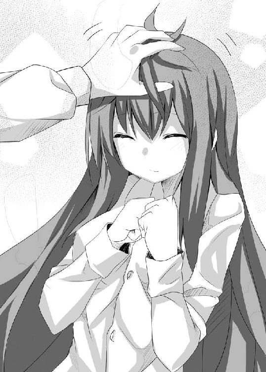

| 前略。ねこと天使と同居はじめました。 (ＨＪ文庫) | |
| 緋月薙 | |
| (2010) | |

ＨＪ文庫
前略。ねこと天使と同居はじめました。
緋月 薙
口絵・本文イラスト 明星かがよ
ここは、とある場所の、とある部屋。そこで一組の男女が話をしていた。
「準備はできたか？」
片方は、20歳半ばに見える男。銀髪のミドルヘアーに整った顔立ち。そして細身でありながら引き締まったその身体は、いかにも武闘派と全身で主張しているようだった。
「ええ。抜かりなく。
『あれ』の配置場所の選定終了。作戦開始から事後処理に至るまで、綿密に計画を練ってあります。そちらはどうですか？」
もう片方の女は、男よりやや青みがかった腰まで伸びた銀髪に整った顔立ち。彼女も男と同年代だろうか。しかしその落ち着いた言動と表情から、男よりも若干年上の様な印象を受ける。
......まぁ、『彼等』に年齢などという概念が必要か否かは別の話だが。
「こちらも抜かりは無い。地上干渉派との連携は打ち合わせ済み。情報統制及び万が一に備えての陽動作戦まで、準備は万端に整っている。それこそ熾天使様クラスに動かれない限り、事が露見する事は無い」
「......その危険も少ないでしょう。干渉派の派閥長からの情報によれば、実行予定日前後に上層部との会談を行うそうです。
そちらに行かれる以上、現時点で見つかっていなければ大丈夫かと」
「クックック......。ハーハッハッハ！ ならばもう我等の悲願は成ったも同然!!
これで我等の崇高な理想を現実化できる──！」
歓喜の高笑いをする男。一方、
「それで、ですが......」
「ん？ どうした」
女の顔に浮かぶ表情は歓喜ではなく憂い。もしくは戸惑いといった顔だ。
「............今更ですが、本当にやるのですか？」
チクタクチクタク
時計の音がやけに大きく感じる。現在午前４時。
（なぜだ？ なぜこんな状況に陥っている......？）
冷や汗をかきながら、俺『水上悟』は、眠れぬ夜が過ぎるのをただ待っていた。
仰向けで寝ている俺の胸の上にわずかな重み。
猫、それも子猫三匹が穏やかに眠っていた。
（これは、いい。いや、むしろ癒される。問題は......）
「......ん......」
（!?）
左腕に当たる二つのやわらかな物体が、さらに押し付けられる。そして......。
「......んん......」
（脚からめてキターーーー!!）
......そう。俺の隣には、俺の腕を抱き枕のようにして、少女が眠っている。
彼女が俺の恋人で、いっそこれが『事後』だったのならば問題はないのだが......。あいにくとそういう間柄でもない。彼女とは今日（昨日？）会ったばかりだ。
動揺する俺をよそに、彼女は『......す～......す～......』と、安らかな寝息を立てている。
「............ふっ」
警戒心の無い安心しきった寝顔を見ていると、緊張しまくっている自分の方がバカに思えてくる。胸の上のチビ達を起こさない様に、空いている右手で彼女の頭を撫でる。
「......うにゃ」
「お前が猫か？」
苦笑し、小声で呟く。そして欠伸。やっと俺にも眠りが訪れそうだ。
（......明日からがまた......面倒くさそう......だ......）
眠りに落ちかけながら、俺は今日一日を振り返った。
「ふぅ......。結構遅くなったな......」
今日は五月連休の前日。しかしあたりはすっかり暗くなってしまっている。そして何より鬱陶しいのは、中途半端な量で降っている小雨。傘無しでは無視できず、かといって傘を差すには面倒という中途半端さ。
大学を卒業した一昨年から、就職浪人をする事も無く『私立聖ヶ丘学園』に赴任できた俺は、今年初めて担任を任された。高等部２年生の１クラスである。
そこで俺は、生徒達の去年のデータの確認と新任ゆえの挨拶の意味も込めて、１学期早々に三者面談を行った。そして今日がその最終日だったわけだ。
「にしても、まともそうな人達ばっかりで助かったな」
ここ数日で会った俺が受け持つ生徒やその親御さん達は、見た限りは皆まともな印象であり、去年のデータの特記事項欄にも特に問題点は書かれていない。
どうやら学年主任か校長が、そういうクラスを選んで俺に任せてくれたらしい。
つまりこれは初めて担任を受け持つ俺への気遣いでもあり、同時に今後への試金石でもあるというわけだ。
（この程度のクラスを纏められない様では......、って事だよな──！）
とまあ、改めて燃え上がった俺は、学園への報告書と今年度の指導計画を直ちに作り上げてしまった。
で、この時間の今に至る。
「あ～、さすがに疲れたわ......。ノリでやりすぎたな......。ま、いっか。明日からは連休だからな！」
５連休。特に予定も入れていないし仕事にも大分慣れた。この連休は心身共にゆっくり出来る、そう思った。
そして家の近くまで来たとき。
「「「......にゃ～。にゃ～......」」」
「ん？」
前方から、か細い猫の声。それも一匹ではない様だ。
前を見ると、街灯に照らされたコンクリートの地面の上に箱があった。声はそこから聞こえてきていた。
......中に入っているものに予想はついていながらも、中を覗き込んでみる。
「「「にゃ～。にゃ～。にゃにゃぁ～......」」」
「......うわぁ......」
中に入っていたのは、予想通り子猫。それも三匹。真っ白な子に、黒くて尻尾の先だけが白い子、そして白地に黒い模様の子の三匹だ。
それを見た俺は、げんなりとした声を出した。
......その猫達が醜かったわけではない。むしろ愛くるしい。
......俺が動物嫌いというわけではない。むしろ逆。動物、特に猫は大好きだ。
では、なぜ俺がそんな声を出したかと言うと......。
「飼えないだろ......。俺、ほとんど一人暮らしだし......」
この学校に赴任するにあたり、徒歩圏内にある父親の弟にあたる叔父夫妻の家に下宿させてもらっている。
しかしこの叔父夫妻、俺の下宿が決まってすぐに『家は好きに使っていいからね～～！』と言い残し、海外赴任してしまった。叔父夫妻に子供はいないため、俺が一人残された形だ。幸い俺は一人暮らしの経験があるため、家事等は得意だから大丈夫なのだが......。
「......でもさすがに他人の家で勝手に動物飼うわけには......。しかも俺、一応社会人だし......」
俺が帰宅部の学生とかなら、まだ可能だったかもしれない。しかし現実は、家を長時間空ける社会人だ。
このくらいの子猫には何が起こるかわからない。そんな子達を長時間放置するのは、あまりに無神経、いや無責任すぎる。
（......見なかった事にするしかないか......）
そう、後味の悪すぎる結論に達したとき。
「「「......に......にゃぁ......」」」
「ん......？ って、おわぁ！」
弱々しい声に再び、今度はよく子猫達を見てみると、猫達はずぶ濡れで三匹固まって震えていた。明らかに身体が冷えきっている。
いつ頃から放置されていたのだろうか。『拾ってやって下さい』と書かれたそのダンボール箱は、子猫達が外に出るには深すぎる。それは危険に遭わせない様にするための情けか、逃がさないための非情からかは判断出来ない。この小雨も、子猫の小さな体には酷だろう。
とにかくこのままでは命に関わると判断した俺は、ダンボールの底近くに穴を開けて自分が差していた傘を固定。とりあえず雨を防いでから、鞄から取り出したタオルで一匹ずつ丁寧に拭ってやった。そして濡れたタオルをよく絞り、無いよりはマシ程度だが、そのタオルで三匹を包んでやる。
......ここまでが、俺ができる精一杯。俺は立ち上がり背を向ける。
「......じゃあな。......強く生きろよ──！」
「「「にゃあ。にゃあ～」」」
背を向け言う俺に応える様に、もしくは抗議する様に子猫達が鳴いた。俺は後ろ髪を引かれる想いをしながらも、その場を後にする。......だが。
（幸いウチの近くだ。......後で温めた牛乳でも持っていってやるか......）
良い人に拾われてほしい。......それまで生きていてほしい。心からそう思った。
そして本当に少し道を進むと。
「......にゃー」
また声が聞こえた。次の街灯の陰からの様だ。目を凝らして見れば、箱の端が見える。
（......勘弁してくれよ......）
そう思いながらも、この道は帰り道である事から無視することも出来ず、街灯の陰になっていた場所に目を向ける。
果たして、その箱の中に『ソレ』は居た。
いつ頃から放置されていたのだろうか。『拾ってやって下さい』と書かれたそのダンボール箱は、ソレを隠すには浅すぎる。それが情けゆえか非情ゆえかは、判断ができなかった。しかし幸いこの小雨は、ソレの体には微々たるものだろう。だけど身体が濡れているのに変わりは無い。
だが、先程の子猫達に傘もタオルもあげてしまった。仕方が無いので妥協案として、自分用のタオル地のハンカチでソレの色白の顔と腰まで伸びた栗色の髪を拭いてやり、よく絞ってから、膝の上に置いてやる。
......ここまでが、俺ができる精一杯。俺は立ち上がり背を向ける。
「......じゃあな。......強く生きろよ──！」
「......ん」
『ソレ』は背を向け言う俺に、明確に応えた。俺は後ろ髪を引かれる想いをしながらも、その場を後にする。......だが。
（幸いウチの近くだ。......後でサンドイッチとカッパでも持っていってやるか......）
良い人に拾われてほしい。......それまで生きていてほしい。心からそう思っ──
ピタリ
俺は一度立ち止まり、一歩、二歩、三歩と後戻り。『ソレ』のもとへと戻る。
「............何、してるんだ......？」
俺は『ソレ』、......いや、『その子』に声をかける。
......そう。『拾ってやって下さい』のダンボールに入っていたのは、15歳前後の女の子だった。
問われた女の子が、眠たそうな瞳をこちらに向ける。
「......私......？」
訊きかえされた。
コクリ
俺は諸々のショックから咄嗟に言葉が出ず、ただ黙って首で肯定。
すると少女は初めて自分の現状に気がついたかの様に。
首を傾げる。
辺りを見回す。
自分の身なりを見直す。そして一言。
「......遭難？」
「ここ、東京の住宅街だが......？」
「......人生の」
「重いなオイ！」
「......？」
どうやら、この子は自分の現状を把握出来ていない様だ。
「君、名前は......？」
「......名前......？」
「そう。名前」
「......３０１６５５７２３」
「............何、その番号？」
「......わかんない。......『名前』って聞いたら、浮かんできた」
「......ワンス・モア」
「......３０１６５５７２３」
一応メモる。９ケタ。電話番号にしては１ケタ足りない。
「ん～......。そういうのじゃなくて、名前。
俺の名前は『水上 悟』。君にもあるよね？ そういう名前」
「......わかんない」
（記憶喪失か......？ でもこんな箱に入っているし......）
当初『虐待か!?』とも思ったが、外見上何処にも傷や痣どころかシミ一つ無い。痩せこけているわけでもないし、着けているモノも濡れてはいるが汚れは無い。
......『なんでそこまでわかるのか』って？
......その......彼女が着ているものは、白のＴシャツとストライプ柄の......、下の下着だけで......。......白のＴシャツが雨に濡れて透けていて............ごふッ!!
と、とにかく......！
（とにかく、出るトコは出てる......って違うだろ──！）
まず『男の本能』を『教師という聖職者の理性』で押さえ込む方が先かもしれない。
「六根清浄、六根清浄......」
俺は持ち前の修験者ばりの精神力を発揮し──
クイクイ
女の子に服を引っ張られる。
「ん？」
「......『六根清浄』って、なに？」
「............知らない......」
く、くじけそうだ......。
とにかく！ 俺には彼女がただの記憶喪失とも思えなかった。
（だが、だとしたらなんで？ ......まさか何かの『プレイ』!? って、それは無いか。
......ん？ 『プレイ』............？）
....................................。
「──し、しまった──!!」
ここに至って初めて、俺は現状における『己の』危うさに気がついた。
彼女の容姿を改めて見る。美少女と称するに十分足るルックス。そして......二度目の説明は断るが、ある意味で裸より扇情的ともいえる格好。さらに何より問題なのが、彼女自身に警戒心が全く無い事だ。
（だ、だめだ......。理性の無い男に発見されたら、まず間違いなく『お持ち帰り』→『三面記事』コースだ──！）
ここは近所。それもウチのすぐ近く。そして今は夜だが真夜中と言える時間でもない。
つまり、見られている可能性がある。そしてその場合──。
パターンＡ
警察官「君、この写真の子の知り合いなんだって？」
俺「ち、違います！ 赤の他人です!! ただ──!!」
警察官「『ただ』、何かね？」
俺「その子はダンボールに入って捨てられてたんです!!」
警察官「....................................」
俺「....................................」
警察官「君、ちょっとお医者さんいこうか？ 主に頭の。話はそれからにしようね？」
俺「俺は正気だ～～～～～～!!」
パターンＢ
警察官「この写真の子、君が連れてきて放置したんだってね？」
俺「ち、違います！ その子は最初からそこにいたんです!!」
警察官「嘘を言うんじゃない！ じゃあナニか、天から降りてきたとでも言うのか!?」
俺「そ、それは......。で、でも俺じゃないです！」
警察官「ヤッた奴も皆最初はそう言うんだよ!!」
俺「ううぅぅ......俺、本当に無実なのに......！」
警察官「ああー、わかったわかった。......カツ丼食うか？」
俺「......ぐすっ、ぐすっ......。いただきます（ぱくぱくぱく）」
警察官「支払い、お前持ちだがな」
俺「うわぁぁぁあああっっっっ............!!」
どちらのパターンも、お先真っ暗だった。
「......？ ......どうしたの？」
首を傾げて訊いてくる少女。
「......ああ、うん。なんでもないよ。......ちょっと腐った未来を想像して......あ！」
「......？」
『腐った』で思い出した！ 腐れているとはいえ、警察官が知り合いにいるじゃないか!!
パターンＣ
俺「黒木巡査を呼んで下さい！ 彼なら、俺がそんな奴じゃないと言ってくれる......！」
警察官「分かった。黒木巡査だね？ ちょっと待っていなさい」
十数分後。黒木到着。
警察官「黒木巡査、ご苦労。ところで今、彼に容疑がかかっているのだが、どう思う？」
黒木「彼なら、きっといつかヤらかすと思っていました」
俺「オイぃぃぃ!?」
黒木「きっといつか、二次元と三次元の境界がわからなくなると思っていました。
警部殿、彼の自宅のベッドの下を調べてみて下さい」
俺「ちょ、おま！ そ、そこは......!!」
「......アイツはそういう奴だった............」
『腐れ警察官の知人』の性格を思い出し、更に深まる危機感。暴走する妄想。
近所の奥さんＡ「ちょっと奥さん、聞きまして？ 水上さんトコの......」
奥さんＢ「聞きましたわ奥さん！ 高校教師が性犯罪者なんて......」
奥さんＣ「自宅からはＨなゲームがゴロゴロ出てきたらしいわよ？
教師になったのも、最初からそういう計画を企てたからなのかしら......？」
奥さんＡＢＣ「「「いやぁねぇ～......」」」
生徒Ａ「あの先生が性犯罪者だったなんて......」
生徒Ｂ「良い先生だと思ってたのに......」
生徒Ｃ「私、母さんから『あの先生の事は忘れなさい』って言われたー」
生徒ＡＢＣ「「「とにかく、見損なったよねーー」」」
「待って......待ってくれ──！ 俺は無実だぁぁぁあああ!!」
ザアアアア......
心なしか強くなった雨の中、片膝をつき片手を虚空へと伸ばす俺。
「....................................」
「....................................」
「......楽しい......？」
「...............いや、むしろドン底」
ぽむぽむ
「......きっとそのうち、いいことあるよ」
「............ありがとう。キミが原因なんだけどね......？」
......なんだろう、この脱力感と敗北感は......？
どの道、俺は彼女を放っておくことは出来そうになかった。
「............ウチに来るかい？」
結局こういう結論に至り、搾り出す様にその一言を口にする。
「......拾って、くれるの......？」
「うっ──」
......世間には、なんて無情が溢れかえっているのだろう......。
「──ひ、拾うけど......あくまで『保護』！ ......君の身元がわかるまでだからな？」
緊急脳内語彙検索、運よくヒット。なんとか適切な言葉を見つけ出せた。すると......。
「......ありがと」
「！」
無表情だった少女が、ほんの僅かに笑みを浮かべた様な気がした。
......我ながら単純だとは思う。だがソレだけで、彼女を拾うという選択が間違いではなかったと、心から思えた。
「............『いいこと』あったかも......」
「......？」
（あ。『拾う』といえば......）
一つ向こうの街灯の下を見る。変わらず置いてある箱。耳を澄ませば......。
「「「にゃ～。にゃ～。にゃぁ～～」」」
（......拾われて微笑む少女に、拾われるのを待って鳴く子猫、か......）
フと少女を見る。すると少女も、猫が入ったダンボールを眺めていた。
「....................................」
「....................................」
「............はぁ......。後の事は後で考えるか」
「......え......？」
いきなり『宣言』した俺を、訝しげな顔で見る少女。
「すぐ戻るから、絶対ここ動くなよ？」
少女がコクリと頷くのを確認してからダッシュ。猫の箱のもとへ。
固定しておいた傘を外し、片手で三匹をすくいあげる様に抱き上げる。
「に？」「にゃ？」「うみゃ？」
俺を見上げ、それぞれ声を上げる子猫達。俺は構わずそのまま再び走る。少女のもとへ。
「ただいま」
「......おかえり、なさい......あ」
俺が抱いている猫に気がつく少女。
「......キミ達も、拾ってもらったの......？」
「に～♪」「にゃ～♪」「ぅみゃ♪」
「......良かった、ね......？」
「「「み！」」」
（な、なんか会話が成立してないか......？ き、気のせいだよな、うん！）
「と、とにかく早く俺の家に向かうぞ！」
そして運良く、（多分）誰にも見つからずに家に到着。
家の中に入った俺は、まず少女にシャワーの使い方を教え、タオルを渡し、ゆっくり温まってくるように言った。
「着替えはその籠に入れとく。脱いだ服は適当に洗濯機に放り込んでおいてくれ。ＯＫ？」
「......ん」
「じゃぁ、風邪ひかないようにゆっくり入って来い」
そう言って、少女の髪をクシャクシャッと撫でてから脱衣所を出る。少女は少しボーっとしていた様だが、しばらくすると脱衣所の扉越しに浴室のドアが開く音が聞こえた。
（さ～ってと。着替えをどうするか、だな）
女物のパジャマも下着も、叔母さんの部屋に行けば多分有る。だけどさすがに......色々と気が引ける。サイズなんて分からないし、そもそも女性の下着を漁るなんて論外だ。
（仕方ない。俺ので我慢してもらうか......と、お？）
「に～、に～」「にゃぁ～！」「みゃ～、みゃ～」
俺の足元をウロつく三匹。まるで何かを催促している様だ。
「っと。お前らの食事が先か。ちょっと待ってな？」
近くにあった、置きっ放しにしていた洗濯籠に使用前の雑巾を敷き詰め、そこに子猫達を入れて待たせる。
その間に俺は底の浅い皿に牛乳を注ぎ、電子レンジにかける。温度は温め。熱くなりすぎない様に気をつける。
そうして温まった牛乳を、子猫達の所へ持って行く。
「に！」「にゃ！」「みぁ！」
匂いでわかったのか、猫たちがそれぞれに声をあげる。飛び散ってもいいように床に新聞紙を敷き、その上に牛乳の入った皿を置く。そして猫達を籠から出してやると──。
「「「にゃぁ～！」」」
猫まっしぐら。余程腹が減っていたのか、一心不乱にピチャピチャと飲み始める。
（さて、今のうちにあの子の着替えをっと）
俺はいつもハーフパンツとＴシャツで寝ている。
（Ｔシャツは......下手すると胸元がアブないか。Ｙシャツの方がいいかな）
そう思い、Ｙシャツとハーフパンツ、それと嫌がられる可能性もあったが、トランクスも持って行く。
脱衣所の扉をノックする。いる気配が無いのを確認した上で。
「入るぞ～」
ここでバッタリ、というのが世に言う『お約束』だが、さすがにそんな事はそうそう無い。俺は籠に着替えを放り込むと浴室へと声をかける。
「着替え、入れておくぞ～。下着も男物しかないがカンベンな～！」
『......ん』
嫌がっている様な返事じゃなかった事に軽く安堵し、脱衣所を出る。
「さて、今度はチビ達か。そろそろ飲み終わってる頃だろうな。となると......」
俺はタオル数枚をお湯に浸けて温め、軽く絞って持って行く。
「うわ......。新聞紙敷いておいて正解だったなー」
余程お腹が空いていて、余程の勢いで飲んだのだろう。周りには牛乳が飛び散っていた。
そしてチビ達はと言うと......。
「うに～～」「ふにゃ～～」「ぅみゃぁ～～」
「「「ゴロゴロゴロ」」」
満足して、文字通り『ゴロゴロ』していた。顔中と言わず体中牛乳まみれで。黒猫に至っては、牛乳が入っていた皿の中で丸くなっている。
（まぁ、予想していたからコレ持って来たんだがな）
苦笑いを浮かべつつ、まずは手近の白猫を抱き上げる。
「に？」
ちょっと驚いた様子ながら、されるがままのチビ猫。その小さな身体を温かいタオルで拭いてやる。予想していたより身体の汚れの方は少ないのが救いだった。これなら用意したタオルで間に合いそうだ。
気持ちよさそうに眼を細めているのが可愛らしく、自然と笑みが浮かぶ。俺は残りの二匹も同じ様に拭いてやり、余ったタオルを三匹にかけてやる。
「「「うにゃぁ～～」」」
十分温まれているようだ。健康状態も悪くなさそうだし、もう心配は無いだろう。
（ふぅ......これで一段落かな？）
ガチャ
そう思っていたとき、背後でリビングの扉が開いた。
「......シャワー、出た」
「おお。おかえ......り......？」
......先程、『お約束』が無かったから油断していた。少女の姿に、しばし呆然となる俺。
（......師匠。現実は、お約束よりも遥かナナメ上にあるようです......）
『師匠って誰？』とはツッコまない方向で。とりあえず彼女に訊いてみる。
「......なぁ？ 『下』、どうしたんだ......？」
「......どっちも、ゴムゆるかったから......」
当然の事の様に、無表情で言う少女。
「......ああ。それで穿いてこなかったワケね......」
俺は決して太めなわけではない。ただ、『少女のウエスト』を考えていなかっただけだ。
......そういえば渡したパンツ、俺が脱ぎやすく穿きやすい位置でゴムを固く止めていた様な気がする。てなわけで彼女の現状。
裸 に Ｙ シ ャ ツ 。
「....................................」
「....................................」
「ゴメン！ 替え持ってくる!!」
正気を取り戻した俺は、大慌てでリビングを後にした。
自分の部屋に戻り、ゴムを固定していないハーフパンツとトランクス、それとクルーネックの黒いＴシャツを選び出しながら、考える。
（訂正。彼女には羞恥心も無い様だ。......連れてきてよかった......！）
放置しておいた場合は言うに及ばず、......さっきのは俺でも理性トビかけた。
「それにしても......」
彼女は今まで、どんな生活をしてきたのだろう。一般知識はある様だが......、それ以外の意識が子供並み、いや下手をするとそれ以下だ。
（記憶が無いせいだと思いたいが......、ヘタすると本気でヤバいかもな......）
やっぱり警察に......、などと考えながらリビングの扉を開けようとして、扉のガラス越しに『その光景』が眼に入る。
『長髪・色白・裸Ｙシャツの美少女、可愛い子猫達と戯れるの図』
裸Ｙシャツが『漢の浪漫』なら、この光景はさしずめ『漢の幻想郷』。少なくとも、俺のツボに直球どストライク。角度的に『肝心な部分』が見えないのが、逆にグッジョブ。
「....................................」
俺は無言のまま軽やかにバックステップ。廊下の窓を開き、用意してきた着替えを躊躇なく窓の外に放り投──
（──って、止まれ俺！）
ギリギリで行為を止める俺。......途中まで完全にトランスしていた。
「ハァ......ハァ......ハァ......」
荒い呼吸と共に崩れ落ちる俺。
（や、ヤバイだろ『アレ』は！ し、しかしこの着替えを渡せば、渡してしまっては......！ 渡さなくては......？）
脳内の天使軍と悪魔軍が大戦争。悪魔軍が若干優勢か？ ......が、しかし。
（俺は聖職者、俺は聖職者、俺は 聖 職 者ぁぁぁあああ～～～～!!）
ガンガンガンガンガン!!
理性最期の抵抗。『額』ではなく『顔』を壁に打ち付ける。
ガンガンガン！ ピタッ
動きを止める俺。そして無言のまま歩き出し、そのままリビングの扉を開ける。
「お待たせ！ これ着替え。今度のはウエストをゴムで調整できるからな？」
爽やかな笑顔で彼女に言う。
「......ありがと。......顔、どうしたの？」
「あ、これ？ ちょっと階段から落ちちゃってさ、アハハハ」
鼻血が出ているのも、きっとそのせいだ。
「......大丈夫......？」
......顔を近づけて訊いてくる彼女。
「ウン、ダイジョーブ。ソレヨリ早ク、向コウデ着替エテ来ナヨ」
「......ん。......わかった」
そう言ってリビングを出て行く彼女。俺はそれを無言で見送る。
「....................................」
そして閉まる扉。
「～～～～～ッッ!!」
ダンダンダン！
声無き慟哭を上げながら、壁を叩く俺......！
（......お、俺は今、この手で『楽園』を一つ、潰してしまった──！）
俺の両の瞳から、熱いものが零れ落ちる。
「に～」「にぁ～」「うみゃぁ～」
そんな俺に、擦り寄ってくる３匹。俺はチビ達を抱き上げ、問う。
「......俺は、間違ってないよな......？ 良い事をしたんだよな......？」
そんな俺に子猫達は、
「「「うにゃ～～ぁ！」」」
三匹揃って肯定する様に、力づける様に鳴き声をあげた。（←多分気のせいor思い込み）
「う......うわあああぁぁぁぁあああ!!」
小さな友人達を胸に、俺は数年ぶりに声を上げて泣いた。
ちなみに『小さな友人達』は、戻ってきた彼女の下へまっしぐらに駆けて行った......。
「さてっと。落ち着いたところで、話し合いをしようか？」
「......ん」
リビングのテーブルを挟んだ対面のソファーに座る俺達。ちなみに子猫達もなぜか彼女の横にチョコンとお座りをして、こちらを見ている。
「まずは......君は何処から来たの？」
「......わからない。......気がついたら、あそこにいた」
なんとなく予想していた通りの答え。
改めて、彼女の容姿を見る。
小柄で細身。それでいて比率的に長い脚と......同年代の平均以上は確実な胸。栗色の髪に同色の瞳、白い肌。色素が薄いと予想出来るその姿と均整のとれたスタイルは、異国の血が流れている可能性もある。
つまり。顔立ちから多分日本人だとは思うが、『外国人でした♪』とか言われても不思議ではない。
......本当に、身元の特定どころか予想すらしづらい子だった。
「今まで誰かに会った覚えとかは？ あと、どんなトコに居た、とかは......？」
ブンブンブン
首を横に振る彼女。完全にお手上げだ。......というか本格的にヤバイ気配がする。
「......仕方ない。こうなったらやっぱり警察か......」
そう言って、必要になりそうだからとテーブルに置いておいた電話の子機に手を伸ばす。
ガシッ
少女に手を掴まれた。そして......
「......No. ......Policemen,No」
「......なぜに流暢な英語......？」
大学時代は語学に力を入れていた俺。この子の発音は、当時の大学の講師（本物の外国人）のそれと酷似していた。......本当に、この子何者だ......？
「......とにかく、公にはしたくない、と？」
コクリ
「なんで？」
「......なんとなく......？」
首を傾げながら言ってくる彼女。相変わらず無表情なその眼に嘘は見られない。本当になんとなくなのだろう。
（となると......困った。本当に出来る事が無い......）
それでいて、ヤバ気な雰囲気はさらに本格化。
（......仕方ない。『腐れ』を使う、か。アイツに借り作りたくないんだけどな......。せめて名前だけでもわかれば......あ）
「そういえば名前も分からないんだよな？」
「......名前......。３０１６５５──」
「それはいいから。ん～。何かと不便だから、本名わかるまでの仮の名前、つけていいか？」
「......仮の名前......。......源氏名......？」
「......本当に、どこで覚えたんだそんな単語......？」
本当に連れて来てよかったと、改めて思った。......だって、『そういう所』で働いてても違和感なさそうだし。
「とにかく、名前付けていいか？」
コクリ
「よし。ん～......。ん。じゃあ、『澪』」
「......『澪』......？」
「そ。例の......３０１６５５７２３、だっけ？ それの最初の『３０』から取って『澪』。
どうだ？」
「......澪......。......みお。......『水上、澪』。......ん」
さりげなく俺の苗字を名乗りなさった。
「待て。......なぜに『水上』を名乗る？」
「......ん。......ここに居るなら、そう名乗った方がいいと思った......」
居座る気ＭＡＸ。......だが、無理に追い出すという気が起きない時点で、俺は敗者か？
「あー。だがな？ 同じ苗字っていう事は普通......なぁ？」
親族、ないしは『夫婦』。少なくとも、『家族』という間柄の証明。
「......？」
自覚無しですか。そうですか。
「あー、......了解。じゃあ、君はここに居る間は『水上 澪』。......ＯＫ？」
「......ん」
また、ほんのわずかに笑った様に見えた。良かった、のだろう、多分。
「......この子達......」
「ん？」
「......この子達にも名前......、つけてあげなきゃ......」
「え？ あ、ああ。そうだな」
誰かに貰ってもらうつもりだったが......、名前くらい付けてあげててもいいだろう。
「......この子が男の子で、あとは女の子だよね......？」
そう。さっき拭いた時に調べたが、澪の言うとおりモノクロ（失礼か？）の子が雄で、あと二匹は両方雌。......って。
「......お前、なんでそれ知ってんの？」
「......ん。......さっき、お話ししたから」
「へ？」
『話した？ 誰と？』という俺の疑問を余所に、考え込む澪。
「......ん。......じゃあ、白い雌猫がコトノハ、黒がセカイ。どっちつかずの雄がマコ──」
「ストップ！ ソレいろいろマズイから！ って、なんでソレ知っている......？」
「......ん。なんか知ってた」
......知ってて付けるそのセンスも問題だが、ますます深まる出生の謎。
「......じゃぁ......。......パトラッシュに......、......ハチに......」
「それ、犬の名前だから。しかも全部幸薄そう......」
心なしか、子猫達も嫌そうな顔をしている様に見えた。
「ああー......、また俺が名前付けるけど、ＯＫ？」
「............ん」
不服そうだった。......が、チビ達の一生モノの問題だから仕方が無い。
「ん......っと。まず、白い子が『ヴィス』。ドイツ語の『白』が由来な」
「に！」
「で、黒い子が『イブ』。そのまんま、夜のイメージから」
「にゃん♪」
「で、最後に白黒の子が『リッド』。白と黒のハイブリッドだから」
「ぅみゃ！」
「っと。こんな感じかな。どうだ澪？」
女の子が『ヴィス』と『イブ』。男の子が『リッド』。
元の言語はバラバラだが、語感重視で決めてみた。
「......ん。いいと、思う。......この子達も気に入ったって」
「「「うにゃん♪」」」
三匹揃い、肯定ともとれる声をあげる子猫達。......まさか本当に意思疎通が取れて......？
......ま、まぁ、深く考えないでおこう。今は。
「あ、そういえば澪。お前、食事は？」
「......ん。 ......私......？」
そのとき。
クキュル～～
可愛らしい音が聞こえてきた。
「......ん。......ちょっと、お腹すいてるかも」
......どうみても『ちょっと』じゃなかった。
「さて。細かい事はまた明日、かな？」
遅い夕食を残り物のご飯、スープ、野菜炒め、玉子焼きで手早く済ませた俺と澪。猫一同も食べたそうな気配を見せていたが、離乳時期がわからない上、ネギ系は犬・猫にとって毒だと聞いた気がしたので、ちょっと我慢してもらった。
子猫達の飼育方法や食事等、調べなければいけない事は多いが......とりあえず、後は明日に先送りして眠る事にする。
「......ん」
この家には客間があるから、澪はそこでいいだろう。たまに掃除をしていて良かった。
そして澪を客間に案内してから、ある事に気がつく。
「あ。その子達どうするか......」
まるで当然の様に澪が抱いて連れてきた猫達。下手に粗相されると、ちょっと困る。
「ん～、やっぱりタオルでも敷いた籠に入れて......」
「......いい。私が預かる......」
「え......。でもまだ小さいから、粗相とかされると......」
「......大丈夫。......ね？」
「「「にゃ！」」」
......もうツッコむまい。考えるだけ無駄だ。
「あ～、わかったよ。任せる。じゃ、おやすみな、澪」
「......ん。......おやすみ、悟......」
......一人暮らしが長かったせいか。『挨拶しあう相手がいる』、その事がすごく嬉しく感じた。
そして俺は自室で寝巻きに着替え、ベッドに入り明かりを消す。そして眠気が襲い掛かってきた頃......。
コンコン。ガチャッ
「......悟。......起きて、る......？」
「ん......？ どうした澪？」
「......ん。拾ってくれた、恩返し。
......寄り添いあって眠ると、温かくて気持ちいいって、この子達が......」
「「「みゃん♪」」」
「へ？ あ、ちょ、ちょっと待──」
慌てたがゆえの、言葉にならない言葉は意味を成さず。
「......よいしょ」
ギュッ
（うっ......！）
「......ほんとだ。......あったかい、ね？ ......おやすみ、悟......」
（う......！ これは色々マズ......）
なんとか接触面を減らそうと動こうとしたとき......。
「み！」「に！」「にゃん♪」
トスッ！ トスッ！ トスッ！
「こふっ！ な、なにが......？」
胸部に軽い衝撃×３。見ると、チビ達が乗ってきていた。
「「「うにゃぁ～......」」」
三匹で丸まって眠りだす子猫達。......これで俺の動きは完全に封じられたわけだ。
（『寄り添うと温かい』か......。確かに......、な......）
多分、澪が言ったモノと俺が感じているモノは、意味が違うのだろうが。
こうして、長かった一日が幕を下ろした......。
◆ ◆
再び、とある場所の、とある部屋。
「どういう事だ！ 僅かとはいえ、天秤が『聖』に傾いているではないか!!」
憤りの声を上げるのは、銀髪の男。
彼等の前には、何も乗っていないのに僅かに左に傾き、うっすらと光を放つ天秤。
『審判者の天秤』。
指定した対象の心の有り様を調べる事が出来る、天界の宝具の一つ。
「......だから言っていたではないですか。そういう危険もある、と」
澄ました声で返すのは、長い青銀の髪の女。
「お前だって、最終的にはやろうと言ったではないか！」
少し前の話。
「くっ......！ マズイ。マズイぞ──!!」
男は、いつもの部屋の中で苛立たしげに右往左往していた。
「......処分が決定してしまった以上、今更どうしようも無いのではありませんか......？」
冷静に言う女だが、その顔に隠しようの無い落胆の表情を浮かべている。
納得しているのではなく、諦めているだけか。
「お前はいいかもしれんが、俺は諦めるわけにはいかないのだ！
異動になってしまえば、折角この地に来られたというのにまた......！ クソッ!!」
......そう。彼等二人は、不祥事の処罰として異動を命じられていた。
ぶっちゃけて言えば左遷である。
「私も本音を言えば、今の場所から動きたくありません。......やるべき事があるのです。
......ところで、貴方は何をしでかしたのです？ 本来、左遷など滅多にある事ではありませんし」
「う──！ な、なに、何とも運が悪い事でな。ここ５年連続で、偶然同じ期間に無断欠勤してしまってな......！ はっはっは、偶然だからな？ ぐ、偶然なんだからね......!?」
「......何度も言わなくて結構。そしてツンデレ風に言われても気持ち悪いだけです。それで、なぜ無断欠勤などしたのです？」
「つっ──！ ......使命......、そう使命だ!! 命を賭してでも、成さねばならぬ使命があったのだ！」
「今思いついた様に聞こえましたが......、まぁそういう事にしておきましょう」
冷たい汗を一筋流しながら熱く語る男に、明らかに信じていない口調で返す女。
「くっ！ ......そ、そう言うお前は何をやらかしたのだ!?」
明らかに話題を逸らすための返し。普段ならそれを見逃す女ではないのだが──。
「............奇遇ですが、私も似た理由です。ここ数年、続けて同じ時期に病にかかってしまいまして......」
声こそ普段と変わらないが、なぜか明後日の方向を見て気まずげに答える女。
「む──？」
そして、長い付き合いの男は違和感を覚える。しかし、それを声に出す前に。
「いずれにせよ、もう処罰は決まってしまいました。覆る事は無いでしょう。
......それこそ、我々が余程大きな手柄でも立てない限り......」
不本意ながら現実を受け入れたがゆえの、深い諦念を込めた発言。だが──。
「!? そ、それだ!!」
興奮の面持ちで、女の言葉に喰らいつく男。一方、真意が読めずに困惑する女。
「？ 何が『それだ!!』なのです......？」
「異動の実行日までに、失態を打ち消す程の手柄を立てればいい!!」
「......確かに、大きな手柄なら処罰を打ち消せるでしょう。ですが......どうやって？
天界は今日も事も無し。魔界側も大人しい。人間にはご存知の通り干渉を禁じられています。......手柄を立てようにも、その素となる大きな問題自体が存在しません」
女が冷静に現実を告げる。しかし、男は悪人の様な笑みを消さない。
「人界への不干渉に反感を持つ者も少なくない。彼等に計画を売り込む事で取り入り、利用する。そして必要な物資を調達。さらには、情報統制や作戦後の事後処理も手伝ってもらおう。......つまり──」
「『つまり』......？」
「問 題 が 無 い な ら 作 れ ば い い じゃ な い !!」
男の口から、マリーなアントワネットさん的な発言が飛び出した──。
そんなこんなで、再び現在。
「確率の問題でした。『彼女』はなかなかの人物に拾われてしまった様ですね。......良い事か否かは別の話として」
「ええい、忌々しい！ 『アレ』を拾ったのはどんな奴だ!!」
八つ当たり気味に怒鳴り散らす男に、気にした風もなく答える女。
「名前は『水上 悟』。高校で教師を務める。性格はややぶっきら棒ながらも、動物好き、世話焼き好きという面もあり。俗に言う、典型的な主人公系キャラですね」
「俗に言い過ぎだ。くっ！ まさかあの格好とシチュエーションで手を出さぬとは──!! そいつはＥＤか？ それとも特殊性癖保持者か!?」
「いえ、その様な記載はありません。......いえ、軽度のオタでエロゲ好きとの事なので、二次コンの可能性はありますか」
それを聞いた男の眼が光る。
「エロゲ好き、だと？ くっくっく......！ なら今後も『堕とす』可能性は十分にある!!」
「そういえば......」
女が男に、今までとは違う冷たい視線を向けながら、言う。
「私達は彼女に『必要最低限の一般知識』のみを与えたはずですが......。貴方が与えた知識の中に、一般的ではないモノが含まれているようですが、これ如何に？」
「ぐ──！ そ、それはその......」
たじろぎ、眼を泳がせる男。そして更に増す、視線の冷たさ。
「まさか貴方の方が世俗に穢れている──、なんて事はありませんよね？」
「ぐ──！ い、いや。『あの国』の文化を少し与えただけだ。け、決して俺の保有する知識まで漏れ出てしまったとか、その様な事は全く無い!!」
「......そういう事にしておきましょう。
とにかく一度放ってしまった以上、我々でも彼女達に直接干渉する事はできません。今はとにかく見守りましょう。そう、『天使は天使らしく』、神に祈りながら」
「そ、そうだな......」
この時、男は気がつかなかった。
男の事を『世俗に穢れているのでは？』などと言った女だが、彼女自身も『ツンデレ』
『エロゲ』『二次コン』といった、非一般的な言葉を自然に使っているという事実の意味に。
......そして、二人とも気がつかなかった。
長いことコンビを組んでいたというのに、互いの無断欠勤をお互いが知らなかった。この事実が何を意味するかを......。
小鳥の囀りと暖かな日差しが差し込み、俺の意識はうっすらと眠りから覚めた。
『うっすら』というのも俺は朝に弱く、大音量の目覚ましで鳴ったら止め、鳴ったら止めを数回繰り返し、それでやっとベッドを降りられるくらいだからだ。
なのに今日は、目覚まし時計のけたたましい音を聞かずに目を覚ました。
（あ～。そういえば今日は休みだったか......）
早く起きる必要が無かったから、目覚ましをセットしなかったのだ。ぼんやりとした頭で思い出す。
（あれ......？ じゃあなんで俺、腹も減ってないのに起きたんだ......？）
まだぼんやりとした頭でそんな事を考えていると。
ぽふぽふ
「にゃ～」
......何か柔らかいモノで額を叩かれる感触。叩かれるといっても、極々小さな力のため痛みは無い。それどころか質感も相まって、むしろくすぐったい様な気持ちいい様な。
（猫の声も聞こえた気がするが......、気のせい......だろう......）
そう思い、『二度寝』という休日のみに赦される至福を享受しようとする。
ぽふぽふ
「に～」「にゃ～」
（......猫の声がステレオになった気がするが......俺はまだ眠いんだ──）
少しだけ意地になり、もう一度寝ようとする。
ぽふぽふ
「に～」「にゃ～」「うみゃ～」
サラウンドになった。
（......ウチってペット飼ってたっけ？）
ここまでくると、寝ぼけ頭ながら『何か』を忘れている様な気がしてきた。
ぽふぽふ
「に～」「にゃ～」「うみゃ～」
「......にゃー」
猫じゃない声まで混ざった。さすがに目を覚ます。
（そういえば昨夜、何かあったような──？）
起きるため『ノビ』をしようと手を伸ばす。すると。
ムニ
「ん......」
「..................」
左の手の平に、軟らかく、それでいて弾力のある感触。......バッチリ眼が覚めた。昨夜の事も思い出した。
「..................おはよう、澪」
「......ん。......おはよう、悟」
左手の感触はそのままに朝の挨拶。澪の無表情はいつものものの様だが、俺はパニックが一周回って冷静になっているだけの様だ。......つーか、どうするよこの状況？（主に左手の処遇）
「............何してるんだ？」
「......ん。悟、なかなか起きないから。......みんなで起こそうとしてた」
言われて状況確認。
俺の左側から顔を覗き込むような体勢の澪。胸の上に白猫のヴィス。顔の右側に白黒猫のリッド。頭の上に乗ってさっきから『ぽふぽふ』していたのは、黒猫のイブか。
「......目、覚めた？」
「バッチリと」
主に左手のお陰で。というか澪はなんとも思わないのか......？ などと考えていると。
「......ん。じゃあ起きてきて？ ......朝ごはん、作ってみた」
何も無かったかの様に身を起こし、ベッドの横で言う澪。感触がフリーになった左手に残念半分、安堵半分。俺も身体を起こそうとすると、その気配を察してか、ヴィスが俺の足の方に移動する。
（うん。ヴィス、ちょっと気をつけてね？ 今、下半身いろいろアブないから）
そして身を起こし、そのままベッドの上であぐらをかく。ヴィスは更に移動して足元に、リッドは俺の横で、なぜかそれぞれお行儀よくお座りしている。イブは尚も俺の頭の上。どうやら気に入ったらしい。
「......ん。じゃあ、先に行ってる」
俺が起きたのを確認して、部屋を出て行こうとする澪。
「あ、澪！」
「......？」
頭に乗っているイブを抱き下ろしながら、澪を呼び止める俺。少し怪訝そうにみえる顔をする澪。
「あ～......。その、なんだ。......おはよう」
一人暮らしが長かったせいか。改めて言おうとすると、ただの挨拶でも照れくさい。
「......ん。おはよう」
本日二度目の『おはよう』。澪は特に不思議がらずにいつもの無表情で返すと、そのまま部屋を出て行った。......去り際に口元が緩んでいた様に見えたのは、俺の気のせいだと思っておこう。
俺の方はこの短くありふれたやりとりだけで、心の奥に、温かい『何か』が溜まっていくのを自覚していた。
（俺って、そんな人恋しがる様な性格だったか......？）
そんな事を思っていると。
「に～」「にゃ～」「うみゃ～」
「はいはい。ヴィス、イブ、リッド、お前らもおはような」
「「「にゃん♪」」」
返事をする様に揃って一鳴きすると、用は済んだとばかりに澪の後を追いかけていった。
......うん。偶然だと思っておこう。
ちなみに。心は温まった俺だが、『左手に残る余韻』のせいで、直立出来るようになるまで約５分を要した。
「しかし、澪の手作りか......」
二階にある自室からダイニングに向かう途中で一人呟く。
澪の料理の腕前。ハッキリ言って未知数、いや、かなり不安である。
どうやら一般常識、というよりは一般『知識』は持ち合わせているらしい澪（......多少一般ではない知識も混ざっている様だが）。それは昨夜の会話や普通にシャワーを使えていたらしい事、着替えが出来ている点。そしておそらく、トイレ等も普通に使えているであろう事からもわかる。
しかし、出会った時の格好やその後のＹシャツの一件、そして今朝の接触事故のスルー具合からもわかるとおり、常識・情動方面が子供並みである。......いや。
（──ああ。赤ん坊デカくして、知識だけ詰め込んだらあんな感じかもな......）
あえて言うなら『人間としての経験値が足りてない状態』に見える。
そんな澪が、『リアル経験値でレベル上げる技能の筆頭』ともいえる料理という部門を、無難にこなせるだろうか......？
（──これは、メインカラー・ブラックな朝飯を覚悟か......？）
万が一に備えて『胃薬ドコだったっけ？』『後でコッソリ口直し出来る物は......』などと考えながら階段を下り、ダイニングへの扉を開ける。するとそこには。
「............へ......？」
呆然としてしまった。正直、意外だった。これだけは無いと思っていた。
「......？ 悟、何してるの......？」
キッチンから顔を出し、入り口で棒立ちしている俺に声をかける澪（エプロン装備）。
「澪......。コレ、お前が作ったのか......？」
「......ん」
コクリと頷く澪。表情はいつもの無表情だが、今だけはどこか得意気に見えた。
（普通だ......）
そう、普通だった。いや、実際は普通以上と言ってもいいだろう。
丁度良い色合いに焼かれたトーストにはマーガリンが塗ってあり、それが載った皿の傍には市販のジャムのビンとジャムナイフ。ガラスの器に盛られたサラダは青野菜が中心でありながらも、カットされたトマトが乗って彩りを添えている。その他にはスクランブルエッグと焼いたベーコンが載った皿、スープが入ったカップと、オレンジジュースが入ったコップ。
よくテレビ等で見る『普通の朝食』。だが実際は大抵、朝は適当に済ませてしまうため、ここまでキッチリとしたメニューを揃える家庭は少ないんじゃないだろうか？
「......本当はベーコンエッグにしたかったんだけど......、卵、上手く割れなかった。......やりかたは知ってたのに......」
今度は少し、しょんぼりして見える澪。
言われて思い至る。ここに並べてあるメニュー全て、ほとんど技量を必要としない物ばかりだと。ただそれらがあまりに丁寧に盛られ並べられていたため、パッと見ただけでは気が付かなかっただけだ。
知識はあっても、卵を割る技量も無い少女。そんな少女の精一杯の工夫。その結晶が、このテーブルに並べられている物の正体だった。
（──ヤバイ。ちょっと胸にキた......）
こみ上げて来るモノを抑えつつ、笑顔で優しく澪の頭をポンポンと叩く。
「ありがとな、澪。すごく美味そうだぞ？ 卵割りは、今度一緒に練習しような？」
そう言われた澪はしばらく俺をボーっと見上げてから、
「......ん」
ハッキリと頷いた。今度は上機嫌に見えた。
（──この子、『無感情』じゃないな......。感情の表し方を知らないだけ......？）
そんな事が起こりえるのか？ などと考えてしまったが、とにかく今は食事が先だ。
「ま、とにかく食おうか。っと、そういえばチビ達は？」
「......ん。あっち」
澪が指差す方を見ると、
「に～」「にゃ～」「うみゃ～」
テーブルから少し離れた所に新聞紙が敷かれ、その上に軽く湯気が立っている牛乳が入った皿が載っている。三匹の子猫達はその前で、行儀よくお座りしていた。
（──待ってくれている、のか......？）
「ま、まぁ。早く食おう──って、どうした澪？」
対面に用意されていた俺と澪の分の食事。澪は自分の分の皿を俺の領域の隣に動かすと、椅子を持って俺の隣に来て、ちょこんと座った。
「なんで......？」
「......なんとなく。......イヤ......？」
「や、別にいいけど......？」
「......ん。じゃあ、いただきます」
「あ、ああ。いただきます」
「に！」「にゃ！」「み！」
澪の『いただきます』に応えて俺も『いただきます』を言うと、子猫達は待ってましたとばかりに一鳴きし、ホットミルクの皿に顔を突っ込んだ。
（ほ、ホントに待っていたのか!?）
最早そうとしか思えなかった。
──やっぱり、このチビ達も普通じゃない。というより、澪を中心としてこの三匹も、か。
「......？ 悟、どうしたの......？」
「へ？ ──ああ、いや、なんでもない」
自然と澪を見つめていた俺は、慌てたためか現実逃避のためか自分でもわからないまま、焦ってスープに口をつけた。
「熱っ!!」
「......大丈夫......？」
「あ、ああ大丈夫......って、あれ？ このスープ......」
てっきり市販のインスタントかと思っていたが、どうやら違うようだ。
（昨日飲ませたオニオンスープ？ でも、微妙に味が違う気が......）
「......ん。昨日の、温かくて美味しかったから、作ってみた......」
うん。十分に美味い。......だが、論点はソコじゃない。
「レシピ、どうしたんだ？」
「......ん。......ネット検索」
わーい。便利なネット社会バンザーイ。
............本当にこの子、記憶喪失か？ ──と言うより──
（本当にこの子、何者なんだ......？）
少ない記憶。偏った知識。眠そうな無表情。そして......温かい心。
この子の事を知りたい。抱いたこの思いは──『義務感』ではなく、むしろ『興味』。
「あ、そうだ澪。今日この後、ちょっと出かけてくるから」
食器を洗う澪を見守りながら、昨夜から考えていた今日の予定を口にする。
ちなみに澪が食器を洗っているのは俺がやらせているわけではなく、本人が言い出した事。しかし『割らない自信は？』と聞いたところ、『............でも、がんばる』だったので、俺が見守る事にした。最初こそ危なっかしかった澪だが、大分慣れてきた様だ。
「......ん。私も、いきたい」
言うと思った。だがしかし、今日に限っては首を縦に振るワケにはいかない。
「だけどお前、着る服って俺のしか無いだろ？ 今日なんとか調達してくるから、今日は家に居てくれ。な？」
──本当は、連れて行けない理由はそれだけではないんだが。
「............ん。わかった」
不承不承の様だが、なんとか分かってくれた様だ。
「誰か来ても、今日は出ない事。電話にも出なくていい。あとは家の中なら自由にしてくれてていいから。あ、チビ達の世話、お願いな？」
「......ん。わかった」
さっきと同じ言葉だが、今度はちゃんとＯＫらしい。というかコイツの機嫌、最初の『溜め』の長さでわかるな......。
と、そんな事を話していると。
「「「み～。み～。み～」」」
話していたチビ達が現れた。澪は子猫達の方を見ると。
「......ん。わかった。......悟、この子達おトイレらしいから、連れていってあげるね？」
「了解。頼むなー」
「......あ。お皿......」
「残りは俺がやっとく。ありがとな、澪」
「......ん。ありがと、悟」
そう言って澪は、子猫達を連れて行った。さて、じゃあとっとと皿洗い済ませるか。
「ふ～んふ～んふ～ん、ふふふ～ん、ふふふ～ん♪」
なぜか某大作ＳＦ映画の悪役のテーマをハミングしながら皿を洗う。油物は少ないし、フライパンは先に洗ってしまっていたので残りは楽なもんだ。
（そういえば帰りに、猫用のトイレ用品とかも買ってこないとなー）
「ふ～んふ～んふ～ん、ふふふ～ん、ふふふ──ん......？」
『ある事』に気付き、１オクターブ高くなったハミングと皿を洗う手がピタリと止まる。
（──さっき澪とのやりとりで、ごく自然な流れで不自然な会話が無かったか......？）
改めて思い返すと、なぜかコメカミからヘンな汗が一筋流れる。
と、そこへ。
「......ん。ただいま」
「に～」「にゃ～」「ぅみゃ～」
戻ってきた澪と猫三匹。心なしか、チビ達はスッキリといった顔をしている様な気が。
（──訊くしか、あるまい）
「......どうしたの、悟......？」
ヘンな汗を流しながら驚き顔で自分を見る俺に、澪が怪訝な顔で訊いてくる。
「──澪？ さっきなんでアイツ等がトイレ行きたがっているって、分かったんだ......？」
「......ん。そう言ってたから」
当然の事の様に、サラリと言う澪。そういえば昨夜も何か言っていた気が......？
──俺の脳裏に、本来ならありえない考えが浮かぶ。ありえないハズなのだが、最早そうとしか思えない上に、そうだとすると昨夜からの澪と猫達の不自然な行動が、色々と納得出来てしまう。
──俺は意を決して、おそるおそる澪に訊いてみる。
「──澪......？ お前まさか、猫と話せるの......？」
「......ん」
コクリと頷く澪。まるで当然の事の様に。
（どういう事だ......？）
俺は澪と子猫達に見送られて家を出た後、ひたすら考えていた。
澪は猫と話ができる。これはもう間違いない。なぜならば色々試したからだ。
澪が出した指示通りにチビ達に動いてもらったり、チビたちの自己申告を澪が俺に伝え、その通りに動いてもらったり。
そうして出た結論。『澪は猫達と会話が出来る』。しかもその影響か、チビ達の知能レベルは最低でも人間の幼稚園児くらいにはなっている。
そしてどうやら、猫達は人語が理解出来る様だ。最初は澪の言葉しか分からないのかとも思っていたが、どうやら俺の言葉も分かっているみたいだった。そう考えると、昨夜からの奴等の不自然な行動も納得出来る。
で、今考えている事はというと......。
（ありえない出会いをした記憶喪失の少女が、ありえない能力を持っていた......？）
これは偶然なのだろうか？ 能力を持っていたから捨てられた、あるいは使えない能力だから捨てられた......、どこかのアブない研究所か!? などという発想まで出てきてしまう。
（まぁ、家出少女がたまたま超能力（？）を持っていた、ってだけの可能性もあるが......）
──とりあえずその因果関係は置いておくとしよう。どのみち今日の目的の一つは、澪の素性調査を依頼する事なのだから。
考え事をしながら歩いていたため、目的地はもうすぐだった。
俺は、澪との約束を違えるつもりは無い。つまり公にはしない、という事だ。それでいて素性を調べるには、手段はかなり限られてしまう。
一つは探偵に依頼すること。迂闊な所に話を持ち込まない限りは、彼等はプロである。秘密は漏らす事無く、あらゆる意味でかなり広い範囲を調査してくれる事だろう。
しかしここで問題になるのが、澪との出会い方である。
探偵「──で、その少女はどこにいたのですか？」
俺「『拾ってください』と書かれたダンボールに入ってました」
探偵「........................」
俺「........................」
探偵「ふざけているならお帰りください」
（うん。俺が探偵でもそうする。おまけに金もかかるし）
という訳で探偵は没。──となると。
（ヤツに借りを作るのは嫌だが......、ここしかないんだよなぁ......）
『ハアァァァ......』と大きな溜息と共に見上げる建物は、近所のとある派出所。だが先にも言った通り公にするつもりは無い以上、警察の手を直接借りるわけではない。
第二の選択肢にして、俺が選んだ方法。警察の知り合いに個人的に調べてもらう。ここには『腐れ警察官』こと『黒木司』がいる。
『黒木 司』とは、小・中・高と同じ学校の腐れ縁。ヤツの性格は良く言っても変態。でもって薄情者。よくぞ警察なんぞになれたなと、ヤツを知る人間なら誰もが思ったことだろう。
コイツは問題が起こってからなら、間違いなくアテにならない。だが問題が起こる前に話せば、異常な状況であればある程......。
「──それ、何てエロゲ？」
「そんな反応をするお前が好きだ」
案の定喰らい付いてきた。
「......野郎にコクられてもキモイだけなのだが？」
「安心しろ。そんな意味は一切無い」
とまあ、コイツは根っからのゲーム脳の持ち主であるため、ある程度の非常識は受け入れる下地ができている。しかもそれが女の子絡みとなれば尚更だ。
「まぁ、用件は大体わかった。その子の身元を調べて欲しいのだな？
公にするなというのなら、俺一人で動かねばならん。だから捜査はできんが、失踪者名簿あたりを調べるくらいならやってもいいぞ」
「あ、ああ。頼む。......恩に着る」
メンドクサそうにしながらも、そう言ってくれる黒木。さすがは『腐れ』とはいえ警察だ。
「キッチリ貸しにしておく。来月発売の例のエロゲの限定版でいいぞ？」
──所詮は『腐れ』だった。ちなみに、俺のエロゲ好きもコイツの影響......というより洗脳の賜物だ。わかってはいても抜け出せないのが、あの業界の業の深さ。
「で、だ。記憶喪失っぽいとの事だったが、その子の特徴は？」
ややニヤケていた黒木だったが、職務上のものであろう真面目な顔に切り替わった。それに対する俺も、真面目な顔で答える。
「年齢はおそらく15歳前後。色白で小柄、腰くらいまでのストレートの茶髪だ。調べたわけでは無いが、目立つ所にホクロや傷等、特徴に繋がるものは無し」
──目立つ所どころか、ほぼ全身見てしまったわけなのだが......、それを言う必要はあるまい。黒木はメモ帳にペンを走らせながら、質問を続ける。
「ふむふむ......。で、処女だったか？ 非処女だったか？」
「 知 る か 」
真面目な顔のままで訊いてくる黒木。変態が変態である所以だ。返した俺に、驚きの顔で詰め寄る『腐れ警察官』。
「バカな、なぜ知らん!? その状況でそんな子が来たら普通はヤるだろ!! ヤったらわかるだろ!!」
「ヤってねーよ！ 落ち着け『腐れ』!! つーか人捜しにそんな項目関係ねぇだろ!? そんなに知りたきゃユニコーンでも連れて来い!!」
「現実世界にそんな便利な処女探知生物、居るわけないだろうこのゲーム脳が!!」
「お前が言うなぁあああああああ!!」
そういう言い方されると卑猥だなユニコーン。
......本当になんでこんな野郎が警察官なんぞになれたのか、未だに謎である。面接試験とかは無いのだろうか？
とにかく、この腐れた警察官は荒い息を吐きながら椅子に戻り、息が落ち着いてから俺に一言。
「ヘタレ」
「ぐはぁぁっ!?」
なぜか、思いのほかイタイ一言だった。
「そんな据え膳を美味しく召しあがらないなど、男として恥ずかしくないのか貴様？」
「......人道的に正しい事をしたはずが、なぜに糾弾されねばならん......？ しかも警官に」
（コイツに......、コイツに昨夜の俺の苦悩を一部分でも味わわせてやれれば......！）
握り拳を震わせながら、暴力的な衝動をひたすら耐える俺。
「──まぁいい。それはともかく、他に特徴的なところは無いか？」
特徴的なところ。──ある。......だが、言うべきだろうか？
（──言うか。少しでも手掛かりになる様な事なら言わなければな......）
幸い、コイツには非常識を受け入れる素養もあることだし。俺は意を決して言う。
「......猫と、会話が出来る」
「............は？」
「だから、猫と会話が出来るんだよ、その子」
「..................貴様......、本気か？」
「ああ」
俺がキッパリと答えると、黒木はしばし黙考。そして右手で、机の上の『ある物』を取る。そして更に動かそうとしていた左手を──俺が反射的に掴んで止める。
「待て黒木。今時アンティークなその黒電話で、どこにダイヤルするつもりだ？」
「病院に決まっているだろう？ 救急車に来てもらう。頭のお医者にレッツゴー」
「 俺 は 正 気 だ ！ 」
（──黒木的思考をもってしても常識から外れるか......。恐るべし澪！）
俺は改めて戦慄しながらも、黒木に根拠となる今朝の実験の結果や事例を語った。
「なるほどな......。それが本当なら......少し妙な匂いがするな。貸し２にしとく」
「新米教師の安月給を甘く見るなよ？」
「お前の生活とその子の人生。天秤にかけた上で発言した方がいいぞ？」
──くっ！ 痛い所を衝いてくる薄情者。やはり黒木は黒木だ。
「──その代わり、出来る限りの事はしといてやる。俺に出来る範囲でだがな」
目を合わさずに言う黒木。......やはり、黒木は黒木だった。
「──さて、用は済んだだろ？ こっちは忙しいのだ。とっとと帰れ」
照れ隠しも兼ねてか、目も合わさずぶっきら棒に言う黒木。しかし──。
「『忙しい』？ いつも暇してるお前が珍しいな。何かあったのか？」
「──ああ。最近不審火が多くてな。放火の可能性が高いから見回り強化しろと、上からのお達しがあった。
っと。ついでだからコレも見せてやる。事件現場の近くで映ってたらしい不審者。まだコイツが犯人だと決まったわけではないから、一般公開はされていないがな」
黒木から渡された写真に写っていたのは、あまり特徴の無い背格好の男。解像度の悪さも併せて、少なくとも素人にはそう役に立つ写真とは思えない。
しかし、言われてみれば最近やけにサイレンの音を聞く。連休が明けたら学校にも言っておくべきかもしれない。
「──なるほどね。忙しい所に悪かったな。じゃあすまんが、例の事よろしく頼む」
「了解。──とっとと帰ってやんな」
「そうする。......サンキューな。──っと、そうだ」
俺の今日の目的。そのもう一つを思い出し、ダメ元で口に出してみる事にする。
「まだ何かあるのか？」
バツの悪さも込めてか、迷惑そうに言ってくる黒木。
「お前、女物の服なんて持ってないよな？」
「あるぞ？」
「........................」
「........................」
少しの間、沈黙が流れる。そして俺は口を開く。
「............訊いていいか？」
「いいぞ？」
「......なぜ、ある......？」
「コスプレ用だ」
「お前がか!?」
コイツの女物のコスプレ姿など、絶対に見たくない。つーか新たな趣味など知りたくもなかった。
「バカか貴様は？ 彼女用に決まっているだろうが」
「彼女いない歴＝年齢のお前がなぜ!?」
「......フッ。相変わらず浅はかだな貴様は」
あまりの動揺で、『お前に言われる筋合いは無い』というツッコミすらも浮かばなかった俺。黒木は何処か遠くの、輝かしい未来を見つめる様な目で、口を開く。
「世の中には、電話一本から始まる出会いもある......」
「........................」
「........................」
再び流れる沈黙。その中で黙考した俺は、『例の物』に手を伸ばす。それを阻む黒木。
「待て貴様。今時アンティークなその黒電話で、どこにダイヤルするつもりだ？」
「本局に決まっている。淫行警察官を通報するために」
いつかこんな事もあるだろうと、暗記しておいて良かった。初めて役に立ちそうだ。
「ま、待て貴様、俺の話を聞け！ 俺はヤってない!!」
「ヤってないだと？ そんな手段をとりながらヤらないとは......。お前、それでも男か!?」
「......貴様、少し前の己の発言を思い返してみたらどうだ？ ......まぁ、いい。俺がそのダイヤルを使う理由はだな......」
黒木は窓の外を眺めながら、一筋の涙を流し、口を開いた。
「............女の子と、話がしたいだけなのだ......」
「..................正直スマンかった......」
俺は、心の底から謝罪した。
「......そして、あわよくばコスプレ姿を撮らせてもらいたかっただけなんだ......」
「──返せ！ 俺の心からの謝罪の気持ちを返せ!!」
俺は、心の底から激怒した。
「待て待て貴様！ 同意の上で上手くいきそうになった事もあったのだぞ？ ......なのに、何故かいつも途中で逃げ出されるのだ......」
──コイツは本当に理由が分かってない様だが、俺にはその理由がすぐにわかった。だから今は、それを利用させてもらう事にする。
「黒木。取引をしよう」
「取引、だと......？」
「お前のコスプレコレクション、少しくれるならば、お前が逃げられる理由を教えよう」
「な、なに！ 貴様、理由がわかるのか!?」
「──ああ。まず間違い無い。......どうだ？」
「くっ！ ──いいだろう。......奥に来い」
そう言って、俺を奥に案内する黒木。俺も奥に入るのは初めてだった。そして、仮眠室と思われる部屋の押入れの前に着く。
「ココと──、ココだ」
そう言って押入れを開け、次に畳の下に隠された床下収納スペースを開ける。
──そのとてつもないラインナップの豊富さと量に、再び問答無用で通報したくなった気持ちを抑え、澪が普段着て外出できる様な物を選ぶ。
（ＯＬのは......このまま使えるな。ウェイトレスの上と婦警の下を合わせれば、まともに見えそうか。これはゲームキャラのコスか？ ......下着の代わりに使えそうだ）
といった感じで数着選ぶ。本当はもう少し探したかったが、途中で『ま、まだ持って行くのか......？』という半泣きの黒木と目が合ってしまったため、止めておいた。
「さあ、約束だ。──理由を、教えろ」
コレクションを持って行かれる悔しさと、理由を明かされる不安と期待。それらが複雑に混ざり合い、それでいて真剣な表情で俺に問う黒木。
「ああ、勿論約束は守る。だがその前に確認する。......相手はいつも未成年だな？」
「当然だ」
『当然』と言い切ったよ、この警官。......まぁ、今はスルーするとしよう。
「お前はダイヤルで知り合った女の子と話すなり遊ぶなりし、いい感じになったところで誘うわけだ。繰り返すが未成年と。で、着替えさせるために連れて来ようとする場所は？」
「当然、ココだ」
「その途中でお前、自分の職業は相手に言うか？」
「言う。俺は隠し事が嫌いなのは知っているだろう？」
うん。思った通り。結論、『バカだコイツ』。
「じゃぁ、女の子視点で状況を整理してみよう。
ダイヤルで知り合い、いい感じになって『さぁ、いよいよこれからだ』という時に明かされる、警官という職業。そして、連れていかれる場所は派出所。......言いたい事は分かるか？」
「いや、さっぱり」
（ふむ。これで理解できるくらいなら、もうとっくに気付いてるハズか......）
少し遠まわし過ぎた様だ。ならば──。
「黒木。お前は『囮捜査』という言葉は知っているな？」
「当然だ。日本では禁止だがな」
「ＯＫ。ぶっちゃけた話が、女の子はソレに引っかかったと思ったわけだ」
「な、何故だ!? 俺にやましい気持ちなど一切無い!!」
......ここまで不純で純粋な人間を、俺は他に知らない。
「ならば黒木。お前、撮影終わった後にお礼は渡すか？」
「当然だ。後で好きなものを買ってあげると、いつも確約している」
「──それ、間接的にお金渡してるよな？」
「あ」
『だくだくだくだく......』と、イヤな汗を流し始める黒木。
「傍目からはどう見ても『関係の売買』です。本当にありがとうございました」
「ゴフッ！ だ、だが、やはり俺にやましい気持ちなど──!!」
「黒木」
俺は『腐れ』の肩に手を置き、ヤツの目を見据えて語り出す。トドメの言葉を。
「未成年がソレ系のダイヤル使っている時点で、既にイエローカードだ」
「ぐはぁぁぁああ!?」
ＫＯ。グッバイ・マイフレンド。君の事は多分、一週間くらいは忘れない。
「んじゃ、いろいろありがとなー」
うな垂れたままの黒木はそのままに、派出所を出ようとする。
「待て。......頼みがある」
「──珍しいな。言ってみろ」
経緯はどうあれ、頼み事をした上に服までもらった。出来る限りの事はして返すのが筋だろう。
「その澪ちゃんのコスプレ姿を、何枚か撮ってきてくれ」
先程までの落ち込み具合が嘘の様に、息を荒らげて迫り来る黒木。その手にはいつの間にか一眼レフ。
「........................」
俺はその腐れ警察官に、無言で殴る蹴るの暴行を加え、その場を後にした。
◆ ◆
もう説明がいらなくなった感がある、とある部屋。
一組の男女が、水鏡に映し出された遥か彼方の光景を眺めていた。
「......いっそ、この黒木とかいう男が『アレ』を拾ってくれていたらな......」
先程展開された一連のやりとりを見ていた男が、呆れ半分残念さ半分の想いで呟く。
「......そうですね。確実に『堕として』くれたでしょうね。......私達の予定とは、全く違う色に染まって、でしょうが」
女の方は、ほぼ完全に呆れ口調で淡々と話す。
「しかし......。あの黒木とは一度、じっくり話がしてみたい気もするな......」
「............。なら、彼の夢にでも入り込んでみたらいかがです？ 時間制限無しでじっくりお話しできますよ？」
「幽霊の類でもあるまい。誇り高き我々天使がそんな事......、い、いいんですか......？」
「......願望と動揺が思い切り出ていますよ？ やるんでしたら、自己責任でご自由に」
水鏡に映される映像から目を離さず、やや興奮口調の男を冷たい口調であしらう女。
「──で、やるのですか？」
「......いや、やめておこう。『ポニテは後ろとサイド、どっちがベストか？』等の、細かいが、だからこそ譲れない部分でモメそうだ」
「............。もう一切隠す気が無いのですね」
「な、何の事だ......？」
我に返った様に、焦りながら誤魔化し始める男。それを見て溜め息を吐き、再び水鏡に視線を戻しながら女が言う。
「しかし、確かに容易に想像がつきますね。そんな事に、僅かとはいえ能力を使うのも馬鹿げています。やめておくのが賢明でしょう」
それを聞いた男が、少し驚いた顔をする。
「──意外だな？」
「？ 何がですか？」
「いや。『そういう部分』は、同種の者達にしか理解できないかと思っていたので、な」
もはや『隠す』のは諦めたらしい男が言う。
「..................。
普段の貴方と、かの黒木という者を見て想像したまでです。他意はありません。
それより、良いのですか？ 天秤が更に『聖』に傾いていますよ？」
「ふむ。確かに良い傾向では無い。しかし......フッ。恐らく、最大の好機がこれから訪れる。上手くいけば、一気に『魔』へと傾くだろう......。ふっふっふ......」
『彼等の身分』にあるまじき、悪巧みの笑みを浮かべる男。
「..................。何を予期しているかはわかりませんが、上手くいく事を期待しましょう。
......私が仕込んだ『最後の手段』は、出来る限り使いたくはないので」
「『最後の手段』、だと......？ そんなもの、いつ仕込んだのだ？」
「最初からです。......本当に不本意ですので、使いたくはないのですが。
お忘れですか？ 彼女の配置場所を決めたのは私だという事を」
「そういえば......。なぜだ？」
「機が訪れたときに話します。とにかく、今は見守りましょう......」
「うむ。そうだな」
水鏡に視線を移す男。故に、またも彼は気がつかなかった。
女が、その端正な顔に浮かべた冷や汗を拭ったことに。誤魔化しきったと、安堵の吐息をついた事に。
Ｑ‥あなたならどうしますか？
「........................」
「........................」
「「「........................」」」
俺、澪、猫達。全員が無言だった。......俺は『絶句』だが、澪と猫達は『ある事』に集中している。帰宅した俺の存在にも気がつかないくらいに。
順を追って話そう。
黒木から勝ち取った衣類は、念のためにと持ってきていた特大サイズの紙袋に入れ、猫用品の買い物へ。今は澪が猫達のトイレの面倒を見てくれているが、それはあくまで人の様式だ。猫は猫なりの仕様を身につけないと、今後のあいつ等のためにならない。
そんなわけで、近くのペットショップで猫用品一式購入。財布に微妙な痛手だったが、必要経費と考えると仕方が無い。それに......。
「ふっふっふ♪」
自然と頬が緩むのが分かる。俺が上機嫌な理由は、一緒に買った猫用のおもちゃ数点。猫好きな俺にとっては、こういうおもちゃで猫と遊ぶのが夢だった。
俺の親が猫アレルギーで猫が飼えなかった上に、現在は親戚とはいえ他人の家に住まわせてもらっている以上、半ば以上諦めていた夢だった。それがイレギュラーな形とはいえ叶うと思うと、どうしても頬が緩んでしまう。教師という立場上、あまり教え子達には見られたくない顔だという自覚はあるが。
とにかく、これらを見せた時のあいつ等の反応が楽しみだった。
（それにしても......。子猫に牛乳はマズかったのか......）
これはペットショップで立ち読みした本に書いてあった事である。成分の関係で、下手をするとお腹をこわしてしまう場合もあるらしい。
（あいつ等も喜んで飲んでたから、予想もしてなかったな......。
生後三～四週で離乳らしいし、あいつ等それくらいは経っているだろ。澪に頼んで、食いたい物あるか聞いてもらうか）
などと考えながら、自宅に到着。鍵を開けて中に入る。
「ただいま～」
........................
「......あれ？」
期待していた『......ん。......おかえり、悟』の返事がなく、ちょっと寂しく思う。だが、それにしても......。
（澪の声も、チビ達の声も聞こえない......。寝てるのか？）
立ち読みした本に、とにかく子猫はよく眠る、と書いてあった。澪の影響でいろいろと規格外なウチのチビ達も、子猫である事には変わりはない。
（チビ達が『眠い』って言い出して、澪もそれに付き合って、か。簡単に想像つくな）
その微笑ましいであろう光景を、是非とも見たくなった。問題はどこで寝ているか、だ。
まず、玄関から一番近いリビングを見てみる。......いない。
次に、日当たりが良く、昼寝には最も適していそうな和室を見てみる。......ここにもいない。
（二階か。ならば澪の部屋か......？）
ならば一度自分の部屋に戻り、買ってきたものを整理しよう。そう思い、自分の部屋へと向かう。
──そして目にする『その光景』。
最初の質問に戻る。
Ｑ‥あなたならどうしますか？
自分の部屋の、自分のパソコンで。
15歳前後の可愛い女の子が無表情で。
ヘッドフォンをしっかりつけて。
エ ロ ゲ ー を し て い た ら 。
そのエロゲーは、確実に俺の所有物。しかもその傍らには、なぜか熱心に画面を見つめる子猫三匹のおまけつき。
そして画面では『ガブリエル』という大天使の転生体、という設定のヒロインが......そういう行為をなさってらっしゃる真っ最中。それを一人と三匹は、メッセージスキップもしないでじっくり見ている。
......持ち主（♂）としては、拷問以外の何物でもない──！
繰り返す。
Ｑ‥あなたならどうしますか？
Ａ（俺の答え）無いわぁ。フツー、そんな状況無いわぁ。
つまりは、思考停止。そして絶句し、先の無言の空間が出来上がっていた。
（うん。確かに俺が家を出るとき、『家の中なら自由にしてくれてていい』とは言った）
しかし誰が想像するよ？ 澪の様な子が、よりにもよって我がパソコンＤドライブ内の、ある意味、Ｘ‐ファイルをプレイするなど!?
（......いや。チビ達の名前を付けるとき、『コトノハ、セカイ、マコト』を知っていた時点で予兆はあったのか......）
さらに言えば、勝手にネットで料理のレシピ調べたりしていたか。
しかし......なんでこうもこの子は、想像の遥かナナメ上方向を突っ走るのだろうか？
だが、いつまでも絶句しているわけにもいかない。俺は遥か彼方に飛んで行ってしまっていた自分の正気を無理矢理呼び戻し、勇気を出して声をかける。
「み、澪......？」
「に!?」「にゃ!?」「うみゃ!?」
......思っていたより弱気な声で、しかも噛んだのは不可抗力としておいて下さいお願いします。
誰へのものか、自分でもわからない弁解をしてみる。しかし、そんな弱気な声でも効果はあった。......猫達には。
チビ猫達は俺の声に、飛び上がる程の驚きの反応を見せ、その後も慌てた様子で。
「に!? にー......。に......？」「にゃ、にゃにゃ！ にゃ～!?」「みゃ！ み、みぁ......」
澪とは違い、猫語は分からない俺だが、各自必死になっているのはわかった。
ヴィスはとぼけ。イブは言い訳。リッドは諦めて消沈。
......つーかお前ら。店員に成年誌の立ち読みを注意された中学生か......？
俺はとりあえず怒ってない事を示すために、それぞれの頭を優しく『ポンポン』と叩いてやる。すると『に、にー......』『にゃ......』『ぅみゃぁ......』と、反省の色が見える反応を返す子猫達。そして俺が改めて頭を撫でてやると、安心したかの様に擦り寄って来た。
（──よし。これでこいつ等はＯＫ）
何が『ＯＫ』なのかはこの際置いておく。とにかく、あとは澪だ。
さっきの俺の声は、ヘッドフォンのせいで聞こえなかった様だ。ならば、と、俺は澪の後ろに歩み寄り、そっとヘッドフォンを外す。
「......あ」
「......何、やってるんだ？ 澪」
「......ん。......おかえり、悟」
「............、ああ、ただいま......」
今更、期待していたのと一語一句違わぬ言葉を聞いたって、微妙な気分になるだけだ。
「......で、何やってたんだ？」
「......エロゲー」
うん。それは見ればわかる。つーか猫達と違って堂々としてるな!?
「そーじゃなくて！ なぜにエロゲなどやっている？」
「......暇だったからパソコンつけたら、知識にあるゲームがあったから......」
誰だ。こんな子にエロゲの知識仕込んだヤツは。
「って、ちょっと待て。......まさか、他にも知ってるゲームあるのか......？」
「......ん。......えーと......」
澪は『頬に人差し指を置いて首を傾げる』という可愛らしい仕草で。
エロゲのタイトルを列挙しはじめた。
「......ん。これだけ」
「........................」
俺、再び絶句。澪が挙げ連ねたタイトルは実に40以上にも及んだ。しかも有名どころは当然の様に一通り網羅。しかも『知る人ぞ知る名作』も押さえ、それでいて名作の続編でありながら『駄作』と評価されている物は、ラインナップに入っていない。
これだけで、この知識を与えた者の博識さ、そして一流のセンスを持っている事がよくわかった。......エロゲーマーとしての知識とセンスだが。
──『なんでそんな判断できるのか』──。黒木に仕込まれた我が『業』は、自らの手により確実に育ち続けているわけでつまりは。
......蛇の道は蛇ということです。コンナ教師デ御免ナサイ......！
（この知識を与えたヤツと黒木、ものすごく気が合いそうだな......。
いや、ダメか。『猫耳と犬耳、どっちがより萌えるか？』等の、細かいが、だからこそ譲れない部分でモメそうだ）
ちなみに俺は猫耳派だ。
「......に？」「にゃ？」「み？」
うん。君達を見たのは特に意味は無い。......気にしないで下さいお願いします。
◆ ◆
再び、例の部屋（もう説明は要らないと判断）。
『だくだくだくだく......』と、男がイヤな汗を垂れ流している。
「......何か弁解いたしますか？」
「........................」
冷ややかな視線を男に送りながら、更に冷たい言葉をかける女。汗ジト流しながら、必死に目を逸らす男。
「......そういえば貴方、当該国時刻で金曜日の早朝。たまに『聖地の視察へ行ってくる』と言って地上へ降りますよね？」
「........................」
「......アキハバラですか......」
「........................」
ひたすら黙秘権を活用する男。
「それと、あなたの罪状を少し調べてみたのですが」
「......!?」
「無断欠勤に合わせる様に、使い込み疑惑も出ていますね？」
「しょ、証拠は無い......！」
「ですが、限りなく黒に近い灰色、といった様子ですが？」
「............全ては秘書が勝手にやった事です」
「......どこぞの政治家ですか？」
◆ ◆
と、とにかく、いつまでも絶句しているわけにもいかなかった。『エロゲーがエロゲーたる所以』なシーンが映し出されたパソコンを背景に、いつまでも女の子と話をしているのはいたたまれない──！
「い、いいか澪？ 人様のパソコンはある意味プライベート空間だ。禁断の領域だ。無闇やたらと勝手に開くものじゃありません！」
「......ん。......でも他人の部屋で面白い物を探すなら、ベッドの下かパソコンのＤドライブだって、知識にあったから......」
──どちら様からか、とっても素晴らしいご教育を受けていらっしゃった。
はっはっはっは。..................本当に誰だバカヤロウ──！
「──とにかく！ 乙女がこういうゲームをやってはいけません!!」
追い込まれた俺は、教師らしい、しかし自分の事を完全に棚に上げた、偏見に満ちた言葉を吐いた。
しかし。それに対する澪の言葉は、またもや俺の想像のナナメ上を突っ走った。
「......ん？ ......私、『オトメ』じゃないよ......？」
「..................は......？」
『今日何度目の絶句だろう？』とか考えている冷静な部分はほんの僅か。俺の脳内はピンク色なパニックに襲われていた。
（ちょ、ちょっと待て──！『乙女じゃない』っていうことは、アレでコレで......そーいった記憶があるっていう事ですか!? その上で昨夜ベッドに入って来たって事は──!?）
と、思い切りヤバイ結論に達しそうになっていた時。
「......私まだ、『イケブクロ』って言う所、行った事無い」
「..................へ......？」
「......『オトメ』や『フジョシ』は、イケブクロに行くって、知識にある......。
......私、多分行った事無いから、まだ『オトメ』じゃない......」
「........................」
灼熱状態だった俺の頭が一気に冷めて、そしてまた『別方面の』熱を帯びてくる。
（それは『ヲトメ』と『腐女子』だぁぁぁあああ!!）
ツッコミ熱。そして怒り。
（誰だ、この子にこんな知識を与えたヤツは!?）
いらん妄想をさせられた恥ずかしさも相まって、もの凄い憤りを覚える。
先のエロゲーのタイトルに『そっち方面』のゲームは含まれていなかったため、恐らく別の人物が与えた知識だろう。
（この子は......、エロゲーマーと腐女子に育てられたのか......？）
◆ ◆
再び、どこか（以下略）
『だくだくだくだく......』と、今度は女の方がヘンな汗を流していた。
それを、今度は仕返しとばかりに冷たい視線で見つめる男。
「そういえばお前、なぜかオタ方面の単語、自然に使っていたな？」
「........................」
「そしてお前も確か、たまに『巡礼者を見守ってきます』とか言って、地上に降りるよな？」
「........................」
「......乙女ロードか......」
「............全ては秘書が──」
「──社会風刺ネタの天丼は危険だぞ？」
『天丼』＝二度ネタで笑いを取る手法。
サブカル系全般に精通している様子の男だった。
◆ ◆
（それにしても......。オタと腐女子の組み合わせ......。ま、まさかな......！）
とか思いつつ。ふと思いついた質問を、怖いもの見たさ的な心境で訊いてみる。
「澪？ 有明で開かれる『盆と暮れの祭典』、常連の壁サークルを答えよ」
「......ん。えーと......」
10分後──。
「......ん。常連なら、これくらい......？」
「................................................」
この10分、ずっと答え続けていた澪。50件くらいまでは数えていたが、以降は若干ウンザリしてきて止めた。
澪が挙げたサークルは、『ジャンル』も『得意属性』もバラバラ。その数は３桁に達していたかもしれない。ここから導き出される答えは──。
（二人とも生粋か──!!）
◆ ◆
『だくだくだくだく......』×２。
地上が映し出された水鏡を見ながら、汗ジト垂れ流している二人。
「......そういえば私達、組んで仕事を始めて長いのに、お互いの欠勤をしりませんでしたね......。それはつまり──」
「──同じ時期に休んでいた、という事......か？ それならば......」
「──ええ。『同じイベントに参加していてもおかしくない』」
「はっはっは。よく鉢合わせにならなかったものだ。......どこに並んでいた？」
「私は西の広場です。貴方は東の駐車場ですね？
それにしても......、これが貴方の言う『命を賭してでも、成さねばならぬ使命』ですか。完全に、己の存在理由全てを賭けてますね？」
「はっはっは。そう言うお前は『病にかかった』だったか。
......確かに病だなぁ？ かのペストも真っ青な、細胞腐敗系の」
「ふ、ふふふふ。そ、そうですね」
「はっはっは。愉快、愉快」
「................................................」
「................................................」
笑顔のまま、冷や汗流しながら向かい合って停止。そして──。
「「お前（貴方）も 三 日 フ ル 参 戦 派 か（ですか）!?」」
「................................................」
「................................................」
「わ、我等は何も気がつかなかった......！」
「そ、そうですね。と言うか、『気がついた』とは何の事です？」
「そうだな、はっはっは。すまん、妙な事を言ってしまった」
「......ウフフフ。さて、再確認です。この度の我々の行動理由は？」
「『地上へ干渉しない上層部に疑問を持ったため』！ では、我等の忠義はどこに!?」
「全ては天界と地上界の平和のために！」
「「我等は一蓮托生！ 運命共同体!!」」
ガシッ！ と、手を組む二人。
この瞬間、『天界ガチオタ同盟』が誕生した。
「.........さて、貴方が言う『最大の好機』というのはいつ訪れるのですか？」
何事も無かったかのように、男に問う女。
「ハッハッハッハ！ すぐだ。もう間もなく訪れるだろう!!」
◆ ◆
──とにかく。誤った知識は正しておくべきだろう。
「......澪。その知識は間違っている」
「......ん？」
『どこが？』と言わんばかりに小首を傾げる澪。
「普通『乙女』というのは若い女性、もしくは......」
俺は一度言葉を切り、『その画面』を指す。
「『こういう事』をした事が無い女性の事を言う。......澪はこういう事、した事ないだろ？」
言ってから気がついた。......若干セクハラ気味な発言だったかもしれない。
だが澪は特に気にした風もなく、『コクリ』とうなずく。......なぜか『ホッ』としたのは、セクハラ発言をスルーしてもらえたからだと思っておこう。
「なら、君は『乙女』！ ＯＫ？」
「......ん、わかった。......ね、悟......？」
「ん？ 何だ？」
澪が、いつもの無表情で聞いてくる。そして『例の画面』を指差して。
「......悟は『こういう事』、好きなの......？」
「ぐはぁ......！」
『だくだくだくだく......』と、イヤな汗が吹き出る。何せエロゲやってる人間にとって、この問いは無垢な少女にされたくない質問のＴＯＰ３には必ず入る......！
「......ねぇ。......悟？」
（──逃げ道は無い......ならば......！）
「..................それなりには」
顔ごと全力で視線を澪から逸らし、最も無難と思われる発言をする。......ヘタレとでも何とでも言うがいい！
「......でも......。......悟、昨日一緒に寝たのに、何もしてこなかった」
「う......！」
「............悟、私の事嫌い......？」
無表情にも拘らず、上目遣いで、少し悲しそうな雰囲気を身に纏っている。
（ヤバイヤバイヤバイ！ ヤバイだろこれは!?）
昨夜はどんだけの葛藤と闘った事か！ ......そういえば、何で我慢したんだろ俺......？
（って！ だからその考えがヤバイんだぁぁぁああ!!）
己自身にツッコミを入れ、とりあえず再び、無難な答えを口にする事にする。
「澪とは、会ったばかりだろ？ 『そういう事』は、時間をかけてゆっくり『好き同士』になった恋人たちがする事だろ？」
極力冷静を装い（その実、汗ジト流しながら）、言い聞かせる様にゆっくり言う。
「......でもさっきやったシナリオだと......。会って数日で、しかも事後承諾......」
文字通り『事後』承諾ですね、わかります。はい。そういうゲームもありました。すいませんすいません。生まれてきてご免なさい......！
「そ、それにほら！ 基本的に18歳未満の『そういう事』は、あんまりオススメできないんだよ!! ほ、ほら、ゲームの最初にも、『登場人物は全員18歳以上です』ってあるだろ？」
さらに重ねる無難な答え。しかし、それに対して澪は冷静に『その画面』を指差し......。
「......18歳？」
「........................」
画面で『そういう事』をしている女の子の事を言っているのだろう。
「......18歳......？」
大事な事なので、もう一度訊いてきた。
（......うん、ごめん。俺も無理があると思う！）
だって、『高校』ではなく『学園』としてボカしているが、要制服着用の学校で１年生＆２年生って時点でかなりキワドイ。それに、発育的には明らかに澪以下......。
と、そこまで考えた時点で、昨日見てしまった澪のキワドイ姿の数々が頭に浮かぶ。
（......ヤバイ。ヤバイ......！）
「......悟。......私とは、イヤ......？」
（だから......ヤバイ、ヤバイ、ヤバイ......。嫌じゃないから、ヤバイ......！）
◆ ◆
全略。
「......なるほど、こういう事ですか」
「そういう事だ。くっくっく......！ たとえ正規の存在ではないとしても、いや、まだ何にも染まっていない純白の『素体』だからこそ、穢されれば確実に『堕天』扱いとなる！」
「地上の者達の間で起こる出来事に、我々は干渉できません。
ですが地上に堕天使が誕生すれば、私達が干渉する理由としては十分。地上干渉派の援護を受けた私達が事態を鎮めれば......」
「そう、十分すぎるくらい大きな手柄だ！ そして干渉派の連中も『堕天使の発生は、地上に干渉しない上層部の責』という言い分が得られる。全ては我等の理想通りに！
さぁ、早く我等の手柄の種となれ──!!」
◆ ◆
──俺の理性は決壊寸前だった。
「......悟は、私を拾ってくれたから......。......悟がしたい事なら、私は......」
そう言って、俺に歩み寄る澪。俺の最後の理性が、わずかに一歩、俺を後ずさりさせる。すると......。
ガサッ
取り落としたままの買い物袋に足が当たり、音を立てる。そして中から、一番上に置いておいた物が零れ出てくる。すぐに見せられる様に、すぐに使える様にと、歩きながらパッケージからも出しておいた物が。
それは、ネズミの姿を模した、ネコ用のおもちゃ。
「に!?」「にゃ!?」「うみゃ!?」
すぐさま反応を示す猫達。そして......。
「「「うにゃぁぁ～～～♪」」」
規格外とはいえ、やっぱり猫は猫。三匹でじゃれ合う様に、おもちゃを獲りあい遊ぶチビ達。
それを見て俺は、なんでアレを買ってきたのか、そして......なんで澪やチビ達を『拾った』のかを思い出した。
（......そうだな。無難な答えじゃダメなんだ。それじゃ『俺の本当の欲望』に反する）
理性など、もうどうでも良かった。そんなのは関係無かった。なぜなら俺の本当の欲望は、もうとっくに動き出していたのだから。
「澪......？」
そう言って、俺は近づいて来ていた澪を抱きしめる。......初めて、自分の意思で彼女の身体に触れた。しかし、もう衝動的な欲望は湧いてこなかった。
「......ん」
されるがままの澪の、サラサラの髪を撫でながら、言う。
「あのな、澪？『シたい』か『シたくない』かで言うなら、間違いなく、『シたい』。でもな？ それ以上に『したい事』があるんだよ」
「......したい、事......？」
腕の中で顔を上げ、怪訝そうな顔で俺を見上げる澪。
「そう。澪はさっき、俺が『拾ってくれた』って言った。でも、それは少し違うんだ」
「......え......？」
「俺は俺の意思で『拾った』んだ。澪の為じゃない。自分の為だ」
あの時。澪を、いや、名も無き少女と子猫達を拾った時。確かに状況的・成り行き的なものはあった。でもそれ以上に、抱いた想いがあった。
「『大切にしたい』。そう思ったから、澪やヴィス達を拾った。誰かに大切にされないのは、赦せなかったから。
『大切にする』。それが、俺が一番したい事。だから少なくとも今は、シない」
「......悟......」
「スるとしたら、もっと時間をかけて、『大切にした結果』として、できたら良いと思う。
と、コレが俺の答えだ。どうだ？」
抱きしめていた腕を放し、一歩分だけ距離を開けながら、訊く。
「......私は......」
「ん？」
「......ううん。......ありがとう、悟......。その子達もお礼、言ってるよ......？」
「え？」
足に柔らかな感触。見ると、さっきまでおもちゃに夢中だったヴィス、イブ、リッドが擦り寄って来ていた。
「に～♪」「にゃぁ～♪」「うみゃ～♪」
「ハハハ！ ......俺もお前達に礼を言わないとな。ありがとう。ヴィス、イブ、リッド」
「うに？」「うにゃ？」「うみゃ？」
こいつらが居なかったら、俺は絶対に後悔する様な事をしていた。そしてこいつらのお陰で、自分の一番大切な想いにも気が付けた。
だから『ありがとう』。
「......ヴィス、イブ、リッド？ ......私達、本当に良い人に『拾われた』、ね......♪」
そう言って、普段あまり表情を変えない少女は、初めてハッキリと笑顔を見せた。
「──！」
それだけで、俺は昨日のあの二つのダンボールに、心から感謝できた。
その後俺達は、夕食の時間まで、二人と三匹で猫用のおもちゃで遊んだ。
夕食は、澪に色々と教えながら二人で作った。『教える』と言っても、澪は元々知識だけは豊富に持っている上、別に不器用というわけでもない。だから卵の割り方を始めとした、ちょっとしたコツが必要なものを教えるだけで、もう十分な戦力となった。
チビ達の方は、澪に『食べたいものがあるか』訊いてもらったところ、『食べた事が無いからわからない』そうだ。だから試しに、買ってきた缶詰のキャットフードを与えてみた。もの凄く気に入った様だった。
その後、澪と交代で風呂に入り、寝る事となったのだが......。
「......今夜は最初から俺の部屋か......？」
とまぁこんな感じで、枕を持った澪が、チビ達と一緒に俺の部屋でスタンバっていた。
「......ん。......ダメ......？」
──正直、ああいうやり取りをしたその夜に、というのは色々と気まずいものがある。
（だけど......『大切にする』って、決めたんだもんな）
「わかったよ。だけど、毎日はダメだからな？」
「......ん。......ありがと、悟」
そうしてベッドに入ると、すぐ俺に身を寄せてくる澪。猫達は定位置と言わんばかりに、俺の胸の上で三匹寄り添い丸くなっている。
......昨夜とは違い、今夜は最初から、澪の温もりで心が温まった。ヘンな衝動も緊張も感じなかった。
（......大切にするって、決めたからな......）
......そう。大切にすると決めた。だから、聞かなかった事にしよう。見なかった事にしよう。
「......悟......。もっと早く、会いたかった、な......」
この寝言と、その時流れた一筋の涙は......。
◆ ◆
「キーーーー！ あと少しだったというのに──!!」
水鏡越しに事態の推移を見ていた男が、無念の想いで地団駄を踏む。
「白ハンカチ噛み締めるのはやめてください。はっきりとキモイです。
それにしても......この水上 悟という男、思った以上の好人物だった様ですね。
彼以外か、もしくはあの猫達がいなければ、あなたの思惑は上手くいっていたでしょう」
「一体なんなのだあの猫達は!?」
「元は普通の猫のようですね。確証はありませんが......おそらく彼女の影響でしょう。
余程相性がよかったのですね。まだ無垢な子猫だった事もあって、天界の力をかなり受けた様に見えます。......さしずめ、即席の聖獣といったところですか」
「何を他人事の様に！ 第一、アレを配置したときに気をつけなかったのか!?」
「......確かに私のミスです。ですが、予測できますか？ こんな事例は過去にありません。......正直、運が悪かったとしか言い様がありません」
残念そうではあるが、至極冷静に言葉を紡ぐ女。
「ええぇぇい！ さっきから何を冷静に話している!? またかなり『聖』に傾いてしまったではないか!!」
イラ立ち喚く男に、尚も冷静に女は語る。
「言ったはずです。最後の手段がある、と。......仕方がありません。......使いましょう」
「......そっちの方は、大丈夫なんだろうな？」
「はい。仕込みは既に終わっています。推移の確認もしてあります。......ただ......」
一度、言葉を切る。そして水鏡に目を向ける女。
......そこには、寄り添いあって眠る、二人と三匹の姿が映し出されていた。
「ただ、......本当に不本意なのですけど、ね......」
端正なその顔には、隠しようも無い憂鬱の色が浮かんでいた......。
ぽふぽふ
ぽふぽふ
「に～」「にゃ～」「うみゃ～」
軟らかいもので叩かれる感触と、猫の鳴き声。それらが俺を眠りの淵から呼び起こした。
（............んーー、またヴィス達か......？）
昨日の朝と同じ様に、ウチの子猫チームが起こしに来たらしい。だが昨日と違い、澪の声はしない。ならば......。
（ならば......、まだ、眠れる......）
こいつ等は『よく眠る』と言われる子猫なのに、これも澪の影響か、総じて朝が早い。昨日も、何だかんだで起きたのは８時だった。
──いや、平日８時は言い訳のしようも足掻きようも無い絶望タイムだが、休日８時は健康児タイムだ。そして今日は休日。
（俺が本気で眠りにかかれば......猫の声など良いＢＧＭよ......）
休日は11時起床がｍｙスタンス。よって再び眠りに就こうとする。
「......やっぱり、起きない、ね？」
「にー......」「にゃー......」「ぅみゃ......」
（──澪、居たのか......。だが、二度寝に入る俺を、何人たりとて止める事は出来な......）
「......じゃあ、......さくせん通り、ね？」
「に♪」「にゃ！」「みゃ！」
（!? 何をするつもりだ......？）
「......イブ？」
「にゃ！」
「フゴッ！」
思わず、醜い音を出してしまう俺。どうやら頭上に居た黒猫のイブが、俺の額に乗る形で身を乗り出し、両前足で鼻を塞いだ様だ。
（──そう来るか。......だが、まだだ、まだ終わらんよ！ 我が睡眠タイムは......!!）
んな事考えている時点で起きているも同然なのだが、俺は意地になって目を開けない。
しかし、そこに掛けられる更なる指令。
「......リッド？」
「ぅみゃ！」
（!?）
ブチ猫のリッドが俺の口の右半分を、イブと同じく前足で挟み込むようにして塞ぐ。
（──ちょっと待て。この流れでいくと、次は......）
かなり息苦しい上に、なんだかイヤな汗が出てきた俺。そこに下される、非情なる指令。
「......ヴィス？ ......トドメ」
「に～♪」
（........................）
他二匹と同様に、俺の口の左半分を塞ぐ白猫のヴィス。これで俺の呼吸は完全に止められた。
（........................）
「........................」
「「「........................」」」
「にゃ？」
俺は目を開け、まずは鼻を塞いでいるイブを持ち上げ、呼吸を確保する。そして寝たままの体勢で、その黒猫を俺の足の方へと運ぶ。
「に？」
次に、顔の左側に居たヴィスを、同様に足の方へ。
「みゃ？」
最後にリッドを同様に運び、呼吸が完全に解放されたところで上半身を起こし、言う。
「............おはよう」
「......ん。おはよう、悟」
「に！」「にゃ！」「ぅみゃ！」
いつもの眠そうな無表情で応える澪と、その澪の横に並んでお座りし、それぞれ返事をする猫達。
「ちなみに、『永眠させる気かーー!!』って叫びながら、チビ達跳ね飛ばして飛び起きようかとも思ったが、動物愛護の精神から止めといた」
「......偉いね、悟」
──俺は朝に弱いため、寝起き直後は気が短い。......昨日の朝の様な事が無い限り。
「何か言うべき事は？」
「......『おはよう』？」
「それはさっき聞いた。人を怒らせてしまった場合、言う事は？」
「......悟、怒ってる......？」
「に？」「にゃ？」「うみゃ？」
澪と猫達。まるで打ち合わせでもしていたかのように、小首を傾げて訊いてくる。
コクリ
──なんとなく和みかけた心に喝を入れ、なんとか無言でうなずく。
「............ごめんなさい」
「「「うにゃ............」」」
素直に頭を下げる、澪＋三匹。
（........................くっ！）
イライラはある。だが悪気が無いのがわかる上、こうも素直に謝られると......。
（なんだかな......。なんだかなーー！）
......この状況で暴言吐けるヤツ、居たら見てみたい。そしてブン殴りたい。
（──しかしこのイライラ、どうしてくれよう......？）
そして目に入る、枕元に置いておいた携帯。......いいことを思いついた。
「ちょっと待ってな？」
携帯を手に取り、『ある人物』へかけながら、澪達に言う。
「......？」
「「「うに？」」」
怪訝そうな色を浮かべ、小首を傾げる澪と猫達。......こいつらよくシンクロするな......。
そんな事を考えているうちに、目当ての人物の声が携帯から届く。
『こんな朝っぱらから何用だ貴様』
俺以上の不機嫌声で出たのは、『腐れ警察官』こと黒木。コイツでウサを晴らさせてもらおう。
「まぁ、そう怒るな。......実は、過激な『プレイ』の画像を手に入れた......」
『......何？ ......それはどんな逸品だ......？』
少し声をひそめる様に話を持ち出すと、案の定喰らいついて来る黒木。
「叩く方も叩かれる方も。恍惚の表情を浮かべた、それはそれは激しいプレイの画像......。
動画ではないのが口惜しいが、その激しさは十二分に伝わってくる逸品......！」
『何!? そ、それはＳエ......』
さらに深く釣り針に喰らいついてくる黒木。その『腐れ』に全てを言わせる前に言葉を継ぐ。
「見る者によっては『痛ましい』と思うだろうが......見る者によってはとてつもなく──アツい代物だ......！
──黒木。そういう画像は、貴様の守備範囲に入るか......？」
『おいどんはオールラウンダーですたい......！』
九州男児が降臨した。
「よし。ならば贈ろう。......震えて待て」
『ごっつぁんです！』
ここ数年で一度聞いたかどうか、という程の気合の入った返事を聞いて、通話を切る。
「ふっふっふ......。計画どおり」
「......悟、なんだか悪い顔してる......」
思わず『ニヤリ』と笑う俺に、ちょっと距離をおきながら言う澪。猫達は澪の後ろに隠れている。よほど恐かった様だが......今は無視。薄笑いを浮かべながら、ウサ晴らしの締めに入る。
タイトル『さぁ、堪能したまえ！』。本文無し。そして添付する画像を選択する。
選んだのは、こんな事もあろうかと保存しておいた画像。
上部に『闘魂』、下部に『気合注入』の文字。そして中央には......『猪木』がファンの男性を張り倒している決定的瞬間......！
（うん。嘘は言ってないな）
自分の発言を振り返り、画像と照らし合わせる。脳内ＧＯサイン発令。送信。
少し待つと、メールの着信が入った。
「来た来た。え～っと？
『近年はほとんど見ない、とてもレアな画像をありがとう。
用意しておいたティッシュで涙を拭うほど感動したよ。
......末代まで呪ってやる......』
うし、決まったぁ！」
ガッツポーズ。そして爽やかな笑みと共に澪達に声をかける。
「お待たせ！ さぁ、朝食に行こうか！ ──って。あれ？ どうした？」
相変わらずビクビクしている猫達。澪が通訳してくれる。
「......ん。えと、『爽やかすぎて、逆に恐い』、だって」
どうやらテンション上げすぎた様だ。俺は一度『ゴホン』と咳払いしてから言い直す。
「あ～、悪かった。もう怒ってないから、そろそろ朝メシ食いに行こう？」
俺がしゃがんでそう言うと、ヴィス達は顔を見合わせ、
「「「うにゃ！」」」
揃って元気に一鳴きすると、俺や澪に擦り寄ってくる。うむ、子供は元気が一番。
「......ん。悟......ホントにもう、怒ってない......？」
「ん？ ああ。というか、寝起きが悪い俺も悪かったからな......ハハハッ......」
そう言って苦笑いしてみせると、澪がふわりと微笑む。
「......ん。良かった。......ごめん、ね？」
「!? ......あ、ああ。気にするなって。でも、次からは、普通に起こしてくれよ？」
言いながら、頭を『ワシャワシャ』と強めに撫でる。......一瞬見惚れてしまった照れ隠しで。
「......ん。明日からは、そうする」
（澪、だいぶ表情見せる様になったな......。──だけど、さっきのは一体......？）
澪が微笑んだ一瞬。辺りの空気そのものが変わった様な気がした。
もう隠しようがないから言うが、俺の中で澪は、すでにかなり大きな存在となっている。その感情はどういう名前がつくモノかは、自分でも分からないが。
『澪が居てくれること』。それだけで、日々の暮らしに新しい温もりが加わっているのを自覚していた。
しかしそれを差し引いても、先の微笑みは文字通り『眩しすぎた』。
まるでこの世界の者ではないかの様に。......いつかは去ってしまう者の様に。
だから俺は『次からは』を強調して言ってしまったし、澪の『明日からは』という言葉を聞いて、安心してしまった。
......そう。出会ってたった２日だというのに、俺は澪を、いや、澪とヴィス達三匹を、気持ちの上では完全に『家族』として受け入れてしまっていた。
「......悟......？ どうしたの......？」
「へ？」
思わず間抜けな声を出してしまった。我に返って澪を見ると、猫達共々怪訝な顔をしていた。
「あー、うん。ほら、連休明けたらどうしようかなーって考えてたんだよ。うん」
慌てて釈明。明らかな誤魔化しだが、コレも確かに考えなければいけない事の一つだ。
「......？ ......連休明けたら......？」
「や。今は休みだからいいけど、連休明けたら俺、仕事行かなきゃだし」
「......悟、......働いてたの......？」
何気に失礼だなオイ。
「......そういえば言ってなかったか。近くの学校で先生やってる。
仕事が始まれば起きる時間とかも変わってくるし、どうしようかな、と」
「......起きる時間......？ 早くなるの......？」

「ああ。今日より１時間は。その上で食事や身支度とかしてると、それはもう、猫の手を借りたくなるほど忙しい......」
自分で言って気がつく。結構マズイかもしれない。ヴィス達や澪がいる以上、６時台に大音量目覚ましを何度も鳴らすのは気が引ける。それでいて朝食を摂るにしても、澪達の事を考えると、自分だけカップ麺で済ませるというわけにもいかないだろう。
７時半には家を出ないといけない事を考えると、７時頃に何とか起きたとしても......。自分と澪とヴィス達の分の食事を用意して大急ぎで食って、それから顔を洗ってヒゲ剃って、着替えて荷物の確認をして......。
（マズイ。本気で大変かも......？）
ツンツン
「ん？」
「......私も手伝う、よ？ ......それに......」
そう言うと澪は一度言葉を切り、足元のリッドを左手で抱き上げ、右手でリッドの右前足を持ち上げ、言う。
「......猫の手」
「うみゃ」
ガクリ、と、色々な意味で脱力。
「......あのなぁ？ 『猫の手』ってのは例えで......」
「に？」「にゃ？」
声を上げるヴィスとイブ。見るとお座りして、リッド同様、右前足を上げている。その顔には、やはり猫語はわからない俺にもわかるほど明確に『この手がどうしたの？』とある。
「例えで............」
........................。
「ね、猫の手あったぁ～～～!!」
思い立ったが吉日。少し実験。そして結論。
『猫の手、意外と侮りがたし──！』
まずは前足を清潔なタオルでよく拭いてキレイにし、さらにラップを巻いてテープで固定。こうして衛生面に気をつけた上で、担当してもらうのは主にサラダ。
キャベツやレタスを千切ってもらったり、それらやミニトマト等を洗ってもらったり。やはり刃物が必要な事はさせられないし、タマネギ等は扱わない様にしなければいけないが、お互いの工夫次第でそれなりの戦力になってくれそうだ。茹でタマゴの殻剥きまでやってのけたのは流石に驚いた。
これで俺は刃物が必要な調理、澪が火を使う調理、猫達がそれ以外のお手伝いと、役割分担が出来るのが大きかった。
「これなら、これから色々できるな」
俺は『実験』で色々試したためと、澪の料理の上達。そして俺も手を出したために、昨日よりも豪勢になった朝食を食べながら、昨日と同じ様に俺の隣で食事をしている澪に笑いかける。ちなみに猫達は、昨日の猫缶に細かくバラした茹でタマゴを振りかけた物を、美味しそうに食べている。
「......『これから』......。......ね、悟......？」
「ん？」
食べながら返事をする俺。すると澪は食べかけのパンを置き、こちらを見て訊いてきた。
「......私、ううん。......私達。......『これから』も、ここに居て、いいの......？」
「う──！」
言葉に詰まる俺。見ると、ヴィス達まで俺の答えを待つかの様にこちらを見ている。
──俺が言葉に詰まったのは、嫌だからでも迷っているからでもない。......俺の中の答えは決まっていた。だが──、言うのが照れくさいだけだ。よって、妥協案としてこう言う。
「......す、好きなだけ居ればいいだろ......」
そう言って、必要以上にガツガツと食事を再開する。
「......悟」
「あ？」
照れくささのせいで、不機嫌っぽい返事をしてしまう俺。そんな俺に澪は。
「......悟。......ありがと......」
「に～♪」「にゃぁ～♪」「ぅみゃぁ～♪」
明らかに喜びだとわかるヴィス達の声。──そして、さっきと同じ......、いや、さっきよりもより『眩しい』、澪の笑顔。
（──まただ......）
俺の心を温め......、そして同時に不安を植えつける、眩しすぎる笑顔。
（──澪。お前は本当に何者なんだ......？）
本当は、俺の方が訊きたかった。だが、多分問う相手は澪ではないと、なんとなく思った。
（──澪。お前は......。お前は、いつまでここに居てくれるんだ......？）
◆ ◆
「──ほぅ。そういう手段か。確かに有効だろうな。クックックック......」
「ええ。......有効、でしょうね。彼女と水上 悟の絆が深まった、今なら特に」
「しかし、確かにあまり採りたくはない手段ではあるな」
「ですから『最後の手段』だと言っていたのです。
それにもし、これが失敗するか事が露見した場合......。我々もただでは済みません。覚悟はよろしいですか？」
「当然、覚悟はしてある。元より長引けば長引くほど危険な手段だったからな。最初の一手をしくじった時点で、既に覚悟済みだ。
──しかし、今回は間違いあるまい。ククククク......」
「..................。楽しそうですね？」
「心外な。楽しいのではない。ただ、随分と煮え湯を飲まされたのでな。
それを『こういう形』で終わらせられるのは、正直嬉しくはある。
お前はどうなのだ？ 悲願の達成、嬉しくはないのか？」
「......私はこの手段は不本意だと、初めから言っていたはずですが？ この手段以外の方法で達成したのなら、素直に喜べたのですけれど......。それに──」
「『それに』？」
「───いえ、なんでもありません。とにかく、もう猶予がありません。今宵、実行に移す事でしょう。成功・失敗に関わらず、これで終わります。ご覚悟を......」
「おう！」
「（『それに』──。それに私は......、もしかしたら彼女達がこの場面を切り抜けることを、期待しているのかもしれません......）」
◆ ◆
（『これから』、かぁ......）
澪に洗い物を任せ、俺は洗濯物を干しながら物思いに耽る。
（このままじゃ、やっぱりマズイよなぁ）
今ではハッキリと、『家族でいたい』という想いがある。だからこそ、状況に流された同居とも言えるこの現状、なんとか変えなければならない。
（さて、っと。どうするべきか......。ん？）
「に～」
見ると、どこから登ったのか、向かいの家の屋根でヴィスが丸くなっていた。
「よ、ヴィス。食後の日向ぼっこか？」
「に♪」
一鳴きして返事をすると、穏やかに目を閉じて眠るヴィス。
俺はヴィスを起こさないように、静かに洗濯物を干す作業に戻る。すると......。
（お？）
小鳥が一羽、ヴィスの身体にとまる。ヴィスも気がついたらしく反応して片目を開けるが、正体がわかると、小鳥に気を遣う様に静かに再び瞳を閉じた。
身体に小鳥をとめて穏やかに眠る白猫。その姿からは、子猫にも拘らず『おしとやか』、『気品』といった言葉を連想させる。
そのほのぼのとした光景を見ていると、
（......ん？）
俺の視界の隅から現れ、身を伏せながらジリジリとヴィスと小鳥に近づく黒猫。
（──ちょ！ イブ、お前まさか──!?）
止めたいが、声を出すとヴィスと小鳥が──、などと俺が躊躇っているうちに、
「にゃぁ～～♪」
バサバサッ
「に!?」
小鳥に飛び掛るイブ、慌てて飛び立ち回避する小鳥。それに驚き、ビクッと跳ね起きるヴィス。
「にー......！ に～!!」
「にゃぁ！ にゃ～♪」
どうやら、イブに抗議しているらしいヴィス。一方のイブに反省の色は全く無い。
（これは......、『姉妹ゲンカ』なのか？ ......お？）
「ぅみゃぁ......！」
「に？」「にゃ？」
どこからか現れ、ヴィスとイブの間に身体を割り込ませるリッド。
「み～、み～......。ぅみゃぁ......！」
どうやら、必死に姉妹ゲンカを止めようとしているらしい。するとヴィスとイブは顔を見合わせてアイコンタクト。そして。
「に♪」「にゃ♪」
ペロリッと、両側からリッドの両頬を舐める二匹。
「み!? ......ぅみゃぁ～......」
照れたのか、ふにゃふにゃ～と沈むリッド。
和む......。
（コイツら絶対に長女ヴィス、次女イブ、末っ子リッドだよな）
おしとやかなヴィス。元気一杯で、ある意味一番子猫らしいイブ。気弱ながらも姉想いなリッド。そして、何だかんだで『良いお姉さん』なヴィスとイブ。
人と同じ様に、しっかりと個性を持っている三匹。
この三匹の穏やかな暮らしも守りたい。改めてそう思う。
（そうか。澪さえウチに居られれば、コイツらも何の問題も無く居られるのか）
ならば、やはり澪の問題をなんとかしなければならない。
澪がこの家に居続けるためには、どうしてもいくつか問題がある。まずは家主の許可。
（うん。これはどうとでもなるな。心苦しいが、適当に話をでっち上げれば叔父さん達の事だ、養女にでも何にでもしてくれるだろう。......困っている人を放っておけない人達だからな......）
そして最大の関門。『戸籍』。
（これだよなぁ......。記憶喪失で身元不明って事で保護施設行き。そこから叔父さん達が養女にする、でＯＫだとは思うけど......）
問題は、正規ルートだと時間がかかるという事。一度は施設へ送る必要が出てくるだろう。
（それじゃダメなんだ。それは俺と澪、両方にとって不本意だ。ならば......）
不正規ルート。正規ルートを通過してきたという書類だけを作り上げ、割り込ませる。
（理論上は可能なハズ。本人も同意の上だし、身元不明というのも事実。これで失踪届けさえ出されていなければ、書類偽造以外の罪は無いハズだ）
──そして、失踪届けは出されていない。なぜか俺には、そう確信できていた。
（後は実行者だが......、『ヤツ』しかいないよなぁ......やっぱり......）
『ヤツ』、つまりは『腐れ警察官』こと黒木だ。しかし......。
（あ～。朝っぱらからウサ晴らしに使っちまったもんな......。アイツ根に持つし。
あれを払拭するにはやっぱり......）
と考えていると、トントントンという、階段を小走りで駆け上がってくる音が聞こえてきた。
「......悟。食器、洗い終わったよ？」
「ん。ありがと澪。こっちももうすぐ終わる」
そう言い、洗濯物を干す作業に戻る。そして、澪に背中を向けたところで溜め息一つ。
（澪をエサにするしか無いか......。ハァ......）
「......悟、なんだか元気、無い......？」
いつの間にか澪が傍に来ていて、顔を覗きこんでいた。
「っと。そ、そんな事はないぞ？ ......ところで澪。後で、着替えてから出かけないか？」
「......お出かけ......？」
「ああ。......ちょっとしたヤボ用と......、あとはほら！ お前の日用品とか、買わないといけないだろ？」
「......ん......！」
笑顔を見せないまでも、喜んでいるのがわかる返事。
......この後の事を考えると、少し、胸が痛かった。
「いいか澪？ 打ち合わせ通りに、な？」
「............ん」
やっぱり、ちょっと不機嫌な『ん』だった。この不機嫌は、公にしないとはいえ警官に素性調査を依頼した事を話したためか、それとも『この後』澪にしてもらう事のためかは、ちょっと判断しづらい。......両方っていうのが、一番可能性が高いかもしれない。
「と、とにかく！ これからも澪がウチに居続けるためには必要な事なんだ。な？」
「......ん」
お。ちょっと機嫌が直ったみたいだ。
「んじゃ、行ってくるから、俺が合図したら澪も来るんだぞ？」
「......ん。いってらっしゃい......」
「ん。行ってくる！」
そう言って澪の頭をかるく『ぽんぽん』と叩いてから、ヤツの居城へと乗り込んだ。
「うぃ～っす」
たぶん『現状・敵地』へ、まるで体育会系の部室へ入るかのようなノリで踏み込む。
「──貴様、どのツラ下げてここに来た......？」
出迎えたのは、腐れ警察官・黒木の氷点下まで下がったような冷たい声。
しかしその氷点下の氷の下に怒りの炎が渦巻いているであろう事は、容易に想像できた。
「あ、やっぱり怒ってる？ いや～悪い悪い。つい『カッ』となってウサ晴らしを♪」
誤魔化しの笑顔を浮かべ、頭を掻きながら謝る俺。うん。笑顔はやっぱり、人間関係の潤滑油だよな！
──しかし、椅子に座っている黒木の額には、三つ、四つと青筋が浮かんでいく。
「『ついカッとなって♪』じゃねぇよ！
貴様のくだらんウサ晴らしのせいで、俺のムスコは朝からダウナー入ってるんだぞ！ ションボリしているんだぞ!! どうしてくれる!?」
「大丈夫だ。高校の修学旅行の時点では、お前のはかなりションボリだった」
「大きなお世話だ！」
「や、だから大きくなかっただろ。なんなら股間に『俺のマグナム』とか貼っとくか？」
「それじゃ見栄っ張りな変態だろがぁああああ!!」
......自覚無いのかコイツ。
「ああ、スマン。警官が使うのはニューナンブだったか。『俺のニューナンブ』......。
..................ププッ」
「地味に傷つくわソレ!! つーか貴様は何しに来た!?」
「あ、頼み事に来た」
「それが頼み事をする人間の態度かぁぁぁぁぁあああああ!!」
「番茶はどこだ？」
「──グッ！ ──ギ！ ──ゴ！ ──ガ......!!」
「ん？ どうした？ 油が切れたロボットのパントマイムか。なかなか上手いぞ？」
「────ッグ！ ..............................はぁぁぁぁああああ......。もういい」
「落ち着いたか？」
「怒りが三周くらい回って冷静になったわ。例の放火の件で暇じゃないのだ。用件済ませてとっとと帰れ。
で？ 頼み事ってのは、例の子の件か？ それなら本局行くどころか、まだ失踪者名簿も見れてないぞ？」
再び椅子に座って、何故か無性に疲れた様子の黒木が言ってくる。
「おお。それはそれで都合が良い。とりあえず、失踪者名簿を調べるだけで止めておいてくれ。
で、今回頼みたいのは......」
そう言って、俺が考えた『計画』を話した。
◆ ◆
その頃。
「──ッ!?」
「お、おい！ どうした!?」
突如、苦悶の声を上げてうずくまる女。
「く──!! ま、まさかこんな事が......!!」
「だ、だからどうしたと言うのだ!? お、お前、それは!?」
顔を押さえうわ言の様に何かを呟く女の、指の隙間から流れる赤黒い液体。
鼻 血 。
「ま、まさかあの二人が、そんな関係だったなんて！」
「落ち着けーーーー！ どんな関係だと言うのだ!?」
「お、お互いの大事なトコロを比べ合う仲だとは!!」
「正気に戻れ！ 誰もそんな事は言っていない!! と言うかリアルキャラでＢＬ妄想はやめい!!」
「では何で妄想しろと言うのですか!?」
「二次元でとどめておけ!! 現実世界にＢＬなどそう存在しない！」
だだっ引きしながらも、女を正気に戻そうとする男。......『なんで俺がツッコミにまわらなければならない......？』とか思いながら。
しかし、尽きぬ妄想。
「そんな事はありません！ かの国では『同じ音には同じ意味が宿る』という言霊思想があります。よって『お友達』と『おホモ達』は近しい語感である以上、あの国では紙一重!!
現に戦国時代の武将達にとって衆道はたしな──」
止まらぬ暴走。
「止まれーーーー！ 古代思想や日本の黒歴史で己のＢＬ根性を正当化するな!!」
「史実です！」
「そ、それはそうだが......！（だ、ダメだコイツ！ 早く何とかしなければ──!!）」
そして焦燥。それから構想。
「か、かくなる上は──！ お、おい！ お前の理想のカップリング及びシチュは!?」
「はい？ そうですね──」
そしてこれから約１時間、男にとっての地獄が展開される──。
◆ ◆
「......と、いうわけなんだが、どうだ？」
「──ふむ。......可能、だろうな。多分」
「おお！」
「細かい必要な手続きも、調べる事は出来る」
「おおおお！ やるな『腐れ』！」
「............。だが......気になる点が一つ」
「なんだ？」
「......犯罪、だよなソレ？」
「そんな事、警官のお前の方が詳しいだろ。だからこうして頭を下げて頼んでいる」
「いつ下げた!? というか何故に貴様のために、俺だけそんな危ない橋渡らにゃならん!?」
「ちなみに──」
そう言いながら、俺は外に合図を送る。そして入ってくる少女。
「この子が澪なんだが？」
「な────！」
『ある理由』からショックを受けている黒木に、トドメを刺す澪のセリフ。
「......こんにちは、澪です。......よろしく、『黒木のおにいちゃん』......」
......棒読みだった。それはそうだ。俺がさっき教えたセリフなんだから。
「クハァッーーーー!!」
しかし、黒木には効果絶大だった様だ。俺を派出所の隅まで連れてくると......、
「悟君......グッジョブ!!」
「............お前から名前呼ばれたの、何年振りだ......？ しかも『君』付け」
「『服装のチョイス』から呼び方まで、実に良い仕事してますね～～！」
どっかの鑑定士っぽい喋りで、俺を褒め称える黒木。
そう。澪には、昨日黒木から勝ち取った衣装から部分部分を選び取って合わせた服に着替えさせてある。
白のブラウス（中には下着代わりの黒のＴシャツ）とミニスカート。そして、黒のオーバーニー・ソックス。
これだけ言うと何処かの学校の制服かと思われそうだが、それを防ぐのがブラウス。ヒラヒラが多くついたソレは、実はウェイトレスのコスチュームのもの。本来はエプロンとスカートでウエスト近辺を締め付け、胸を強調するデザインだったソレだが、一見普通のスカートと組み合わせる事で、清楚かつ可憐な雰囲気を醸し出すアイテムとなっている。
そしてスカートの方も、元は恐らくゲームキャラのコス。上半身は鎧風だった。
「ストレートの長髪と服装が清楚な雰囲気を醸し出しながらも、その実、巨乳......！ しかも絶対領域完備となれば......、もうオイチャンたまらんですたい......!!」
......舌なめずりする黒木に、思わず目潰しか渾身のボディーブローを入れたくなった俺だが、とりあえず今は我慢の子。それどころか更に煽る一言を告げる。
「ちなみにあの子、代わりにＴシャツ着せてるが、ノーブラだぞ？」
「な、なんと......!!」
更に鼻息が荒くなる黒木。このままいけば、マンガみたいに鼻血墳出シーンが見られるかもしれないが......。とっとと用件済ませたいので、作戦を次のフェイズに移行する。
黒木から離れて澪の隣に来た俺は、黒木に向かって言う。
「さて黒木。もし例の件を引き受けてくれるなら、お礼と今までの詫びを兼ねて30分程、この子の撮影会を許可するが......。どうする？」
「マジでっか!?」
「......よろしくおねがいします、『黒木おにいちゃん』......」
興奮している黒木に、ダメ押しのセリフを言う澪。......やっぱり棒読みだったが。
そして、俺がトドメを刺す。
「写真屋で現像頼めそうな健全な写真に限るがな。で、どうする？」
「........................」
スクリ、と立ち上がる黒木。それを見て俺は、ポケットの中の『装置』を起動。
黒木は何も気付かず俺の手を握り、
「社長はん、ええ商売してまんなぁ！ へい、承知いたしやした！ 社長はんとお嬢のためならば、たとえ火の中水の中、犯罪でも何でも手をお貸しいたしやすです、ハイ！」
......今度はどこぞの商人か？ 相変わらず変わり身の早いヤツだ。......とにかく言質はとった。俺は再び装置を操作。
「さて、じゃぁ早速行くか？ そこの公園でいいよな？」
「へい！ 行きやしょう行きやしょう!!」
ノリノリで、仕事時間、しかも忙しいとか言っていた身にも拘らず、真っ先に派出所を出る黒木。
「（澪。あと少しだ。あと少しだけ我慢だ。な？）」
「（..................ん）」
完全に嫌われてるっぽい黒木だった。
とにかく澪を外に出し、俺は最後に派出所の机の上に『ある物』を置いて黒木を追った。
「いいよぉ～～！ いいよ澪ちゃん!! あ、今度はこっちに視線くれるかな？」
「........................」
黒木の指示通り、無言・無表情で視線を向ける澪。
撮影会が始まって、もう15分。一人だけノリノリ、というかテンション上がる一方の黒木。一度、あんまり愛想笑いとか出来ないけどいいのか？ と、訊いたところ、
『下手な愛想笑いより自然な感じが出てて良い！ というかもっと見下して──!! ハァ......、ハァ......！』
......どうやら、新たな趣味を開拓してしまった様だ。
ちなみに、俺は見張りをしている。黒木が一定以上のローアングル撮影や、澪の身体に触れようとしたとき、殴ってでも止めるために。
そして時計を見る。20分経過。黒木を見ると......だんだん澪に接近していっている。
「いいよぉ～、いい！ すっごくいい!! ハァ......、ハァ......」
............なんだか面白くない。
「（......とっとと終わらせるか）はい！ あと３分!!」
言って俺は、先の装置を再び作動。
「何!? もうそんな時間か!! ......み、澪たん......。さ、最後にちょっと服をはだけてみようか......」
明らかにヤバイ目で澪に迫る黒木。俺は後ろから黒木に近づき......。
ズン！
「こはぁぁああああ......!!」
先の『ダウナー』云々はどこへやら、完全に『アッパー』入った股間を蹴り上げた。
「き、貴様......、なんて......、コト、を......！」
股間を押さえて、息も絶え絶えに俺を責める黒木。しかし俺は取り合わない。
「お客さん、モデルに手を触れないで下さい。っと、ここで時間終～了～！」
「な、何ィィ!!」
安堵した様子で、俺に駆け寄り、後ろに隠れる澪。
「ロスタイム！ ロスタイムだろまだ!!」
「そんなものは無い！」
言いながら、鞄から取り出した『ある物』を、倒れる黒木の上とその周りに撒く。......少し黒木の口にも入ってしまった様だ。
（ま、いいか。毒じゃないし）
「ペッペッペ！ な、何を撒いた!? そ、それより俺にこんな事をしていいのか!? 例の件を......」
黒木に全てを言わせる前に、例の装置を再生。
『社長はん、ええ商売してまんなぁ！ へい、承知いたしやした！ 社長はんとお嬢のためならば、たとえ火の中水の中、犯罪でも何でも手をお貸しいたしやすです、ハイ！』
『何!? もうそんな時間か!! ......み、澪たん......。さ、最後にちょっと服をはだけてみようか......』
「な!?」
その『装置』とは、ボイスレコーダー。
「これらの言葉に心当たりは？ などと訊くまでもないよなぁ、黒木君？」
「ぐ......！ が......!!」
「コレ、警察に持っていくとヤバイよなぁ......。あ、それと、っと」
そう言って、黒木が取り落とした愛用の一眼レフを拾い上げ、中からフィルムを抜き取る。
「な、何をする!?」
「撮影は許可したが、撮った写真のお持ち帰りまで許可した覚えは無いが？」
「き、貴様──!!」
俺は再び、再生ボタンを押す。
『社長はん、ええ商売してまんなぁ！ へい、承知いたしやした！ 社長はんとお嬢のためならば、たとえ火の中水の中、犯罪でも何でも手をお貸しいたしやすです、ハイ！』
『何!? もうそんな時間か!! ......み、澪たん......。さ、最後にちょっと服をはだけてみようか......』
「ぐぁぁぁぁぁあああ──!!」
おおー。効く効く。
「この言葉の犯罪性も問題だが......、まさか『警官』のお前が、約束破ったりしないよなぁ？」
「う......く......あ、あ、あ......」
「ああ、安心しろ。代わりのフィルム、新品のを机の上に置いておいたから。というわけで、例の件よろしくな～。行こうか、澪」
「......ん」
そう言って、倒れる黒木に背を向け歩き出す俺と澪。その背後で......。
「まだだ......まだ終わらんよ！ ラストショットーーー!!」
そう言って倒れたままの状態から携帯のカメラを使い、澪のスカートの中を狙う黒木。
（が、甘い......！）
バサバサバサバサーーー!!
空より舞い降りる、『平和の象徴』達。すなわち『鳩』。
鳩達が大量に舞い降りてカメラの射界を完全に塞ぐばかりか、黒木の上にも舞い降り、嘴であちこちをついばむ。
「な！ ちょ、き、貴様さっき撒いたのはまさか──!!」
「そう。鳥のエサだ。多分こうなるだろうと思っていたからな」
「ちょ、ちょぅ待て！ ちょ、ちょ、ちょ、ちょ、ちょう～～～～～～!!」
── 鳥 葬 ──
「くっくっく......。計画どおり」
「......悟。また、悪～い顔になってる、よ......？」
ついついニヤリと笑う俺に、若干引き気味の澪。
（そういえば俺、黒木を『薄情者』とか言ってるけど、俺の最近の扱いも大概だな......）
ちょっと反省しようかと考えていた時、澪が振り返って黒木の近くに駆け寄る。
「......えと、......黒木......さん？」
「み、澪......たん......？」
恐る恐る声をかける澪に、息も絶え絶えに応える黒木。ちなみに澪は、スカートの中は見えない距離をしっかりキープしている。
「......えと、......写真、ありがと」
──また、ふわりと笑う、澪。黒木も見惚れているのがわかった。......すこし、面白くない。
「ほんの......気持ち......だよ......。受け取って、くれると......嬉し......い」
それに対する澪の返事は。
「......ん。......写真だけもらう、ね？ 気持ちはいらない」
「グハァァッ!?」
（あ、トドメ刺した）
ちょっとスッとした。
「......あれ？ ......ん、......南無......。じゃぁ、ね？」
そう言って手を合わせてから、俺の方に駆け寄ってくる澪。
「......ん。お待たせ。行こ？」
「......俺も大概だけど......、お前もエグイ事するよな......」
「......？」
小首を傾げる澪。......自覚無しですか。それはそれで、余計タチが悪い気がした。
◆ ◆
その頃。
「──き、気は済んだか......？」
「ええ、満足しました♪ いえ、こちらでこの手の話はまず出来ないので、ついつい暴走を......。ご迷惑をおかけいたしました」
若干ゲッソリとした様子の男に対し、女は謝罪しながらも、どこか満足げだった。
「本音を言えば、もっと抑えて欲しいところだが......まあいい。俺もタガが外れればあんなもの──かもしれん。
だが正直言えば、ここまでとは思っていなかったがな。まさか......、俺で妄想したりなどしていないだろうな？」
冗談めかして言う男。それに対して女は。
「........................」
「なんだその『間』は!?」
「き、気のせいです......？」
「なぜ疑問形!? そしてなぜ目を合わせない!?」
「な、何のことでしょう？ わ、私は別に、『黒木氏の夢枕に立ち、夢の世界で、な、何をするんでしょう!?』なんて事は考えていませんよ......？」
「あの時の不自然な間はソレかぁあ!!」
「しかも『後ろからとサイドから、どっちがベストか』で『どうしても譲れないでモメそうだ』って！ な、なんの話をしているんですか!?」
「お前こそ何の話をしている!? 微妙にセリフ変わっているし!! だから生キャラ妄想はやめろと言っているだろうがぁぁぁあああ!?」
「し、しかしですね？ 時間・距離・世界の壁すらも無視して何でもできる空間なんて、美味しい題材ではないですか！ そこに男性二人なんて状況ならもう......!!
そもそも先程話したように、私の理想とするシチュは────」
「 や め ろ ー ー ー ー !! 」
男のマジ泣き。
彼の受難は、まだあと少し続く。
◆ ◆
写真屋に黒木から奪ったフィルムの現像を頼み、それを待つ間に別の買い物へ行く。
「──で、ココに来たわけだが......」
『ココ』。つまりは......女性物下着の専門店。......地元だからあるのは知っていたが、まさかこの店に用ができるとは思ってなかった。
財布を渡しながら、澪に言う。
「いいか？ サイズを測ってもらった上で、普段着ける物を上下共に三着ずつ、買ってくるんだぞ？」
「......ん。わかった。......悟は来ないの......？」
「うっ──！ い、いやね？ 男はこういう店、入りづらいんだよ......」
「......入りたく、ないの......？」
「そんなことはありません！」
思わず即答してしまう俺。あーっと、ち、違うんですよ......？
「と、とにかく、俺は外で待ってるから！ じゃあな!!」
「......ん。行ってきます」
そう言って、澪は店内に入って行った。
俺は店から離れていながらも入り口が見える場所で待機。
（あ～、しまったなぁ......。大体いくらくらいか、調べておけばよかった）
人づてに、女性の下着は高いと聞く。財布を丸ごと渡したのもそのせいだし、三着だけにしたのもそのせいだ。澪がウチで暮らすのなら、まだ買い足さなければならないだろう。
なら何故こんな専門店に来たかと言うと、澪のスリーサイズがわからないからだ。こういう店なら多分、キチンと測ってもらえるだろうと思っての選択。
（──にしても澪、......どれくらいなんだろう......？ 見た感じかなり大きかっ......って、止めろ俺！）
頭に浮かぶ光景を必死に振り払いながらも、悶々としたまま待つ事しばし。
紙袋を持った澪が店から出てきた。キョロキョロと俺を探している様だ。俺は近づきながら、
「澪！ こっちだ」
名前を呼んで手を振ると、気付いて駆け寄ってきた。
「で、どうだった？」
「......ん。Ｄだった」
ゴフッ!!
「......でもまだ育ちそうだし、あと少しでＥだから、買い直すことになるかも、だって。
......？ ......悟、どうしたの......？」
「ガフッ！ ゴフッ!! い、いや、何でもない......」
──密かに一番知りたかった情報をいきなり叩きつけられたから、などとは言えない。
「や、サイズの話じゃなくて！ ちゃんと買えたかって事を訊いたつもりだったんだよ！」
「......サイズ、知りたくなかった......？」
「断じてそんな事は！」
また、思わず即答。軽く凹む。だ、だから......、ち、違うんですよ......？
「と、とにかく！ 財布とレシートは？」
「......ん。はい」
「うい。どれどれ......」
そう言って、財布はポケットにしまい、レシートの金額を見る。
「........................マジで......？」
「......ん」
「......特殊な形状の物じゃなく、普通のを買ったんだよな......？」
「......ん。学園物の、エロゲのヒロインが着けてるみたいなの、買ったよ......？」
「じゃぁ、普通のか......」
──今のやりとりにツッコミを入れられないくらい、俺のショックは大きかった。
「......上下の揃えだと、こんなものみたいだよ......？」
（諭吉と樋口さんが殉職だと......!?）
澪が『学園物』と言ったところを見ると、おそらく、そこまで派手なのは買っていないだろう。それでこの値段。高いとは聞いていたが、男性下着基準で考えていた俺は甘かった。
「......えと、買ったのはね......」
「 見 せ な く て い い か ら ！ 」
サイズもわかった事だし、次からしばらくは、ユ○クロあたりので我慢してもらおうと思った。
それから、澪用のコップや歯磨き等の日用品を買い、ヴィス達のためのキャットフードを何種類か購入。そして夕飯の材料を買い、帰り際に写真屋で、現像を頼んでいた写真を受け取り、帰路につく。
帰り道。
「......♪」
澪はずっと機嫌がよかった。
「澪、なんだか嬉しそうだな？」
「......ん♪ だって──」
言葉を切った澪は。
軽やかなステップで数歩分、俺の前に躍り出て。
夕焼けを背にする様に、俺の方にクルリと振り返る。
黄昏時のオレンジ色の雲が、まるで澪の翼の様に見えた。
斜陽の光で、長い栗色の髪を金色に輝かせながら。
──そして、『黄昏の天使』は微笑む。
「だってこれは、これからも、悟といるための物だから......♪」
「────澪ッ......！」
......無意識、だったと思う。気がついたら、俺は澪を抱きしめていた。
「......悟......？ ......ちょっと痛い、よ......？」
「ここに、居ろよ......？」
「......え......？」
「お前は、ここに居ていいんだ。だから......、お前はここに居ろ......！」
......多分、涙は出ていなかったと思う。そうでないと──。
「......ん......♪」
俺が、もし泣いていたら。澪はこんな嬉しそうな返事は、返してくれなかっただろうから。
俺は少しの間、そのままでいた。
それは、嬉しかったからか、愛しかったからか。それとも切なかったからか、──悲しかったからか。自分でも判断できなかった。
◆ ◆
水鏡を見つめる女。その表情には、やはり憂鬱の色があった。
「本当に......不本意、ですね。『あの手段』を使うのは......」
「........................」
「ですが、もう動き始めました。いまさら止める事など不可能」
「........................」
「我々は、もう推移を見守るくらいしか......、あら？ どうしたのです、部屋の隅で膝を抱えて......？」
「............想像に任せる」
「よろしいのですか？ では──」
「やっぱり待て！ 妄想に任せるとは一言も言っていない!!」
「（..................チッ）」
「!! 今、舌打ちしなかったか!?」
「気のせいです」
「お前、開き直ってキャラ変わったなあ!?」
「......とにかく、元気が戻ってきた様でなによりです。では、見守りましょう。結果はどうあれ、私達が演出した物語の終焉です。
──願わくば、我等の理想が叶います様に──」
「........................」
『本当に、コイツの理想も叶えてしまって大丈夫か？』などと思いながらも、自分の利益と精神衛生のため、ただ黙っている男だった。
家に帰ると、子猫達の出迎えを受けた。じゃれてくるヴィス、イブ、リッドを抱き上げて運んでから、買ってきた物の整理をする。
それからまた朝の様に、子猫達を含めた『みんな』で夕食を作り、みんなで楽しく食べた。
そして食後。澪の部屋で黒木が撮った写真を見る。ヴィス達も見たがったので、床に広げて。
「あいつ、意外にこっちの才能あるんだな......」
それらの写真で澪は表情こそ無いものの、だからこそ逆に、普段の１シーンの様な姿がイキイキと写し出されていた。
「......♪」
「キレイに撮ってもらえて、嬉しいか澪？」
「......ん。それもあるけど──」
そう言って、一枚の写真を選び出す。
......それは数少ない、俺も写っている写真。
澪を見守る俺と、俺の方を見てうっすらと微笑む澪。
見ようによっては、笑みを浮かべて見詰め合っているようにも見える。
（──つーか俺、こんな顔をして澪を見てたのか......）
客観的に見せられると、恥ずかしいというか照れるというか。
澪はその写真を顔の横に掲げ──
「......私にも、思い出できた......♪」
──本当に、嬉しそうな笑顔を浮かべた。
俺は澪の頭を撫でながら思いついた事を言ってみる。
「......明日は、アルバムでも買ってくるか。今日は買い忘れたしな」
「......ん！」
「に～！ に～！」「にゃぁ～！」「ぅみゃ～、みゃ～！」
「ん？ 澪、ヴィス達は何だって？」
「......『私達もココ行きたい。写真撮ってもらいたい』、だって♪」
「ハハッ！ うし。んじゃぁ、明日は皆で行くか!!」
「......ん♪」
「「「うにゃぁ～♪」」」
「あはははは！」
と、揃った嬉しそうな声に、俺自身も嬉しく思って笑っていると。
ピンポーン
来客を告げるチャイムが鳴った。
「ん？ 誰だこんな時間に？ ちょっと出てくるな？」
「......ん」
澪の返事を聞いてから、部屋を出ると、
「み～！」
「お。リッド、お前も来たいのか？」
「み♪」
「いいけど、大人しくしてろよ？」
「ぅみゃ」
そうしてまず、インターフォンのあるリビングに向かう。インターフォンのカメラが映し出しているのは、一見真面目そうな、だが特に特徴の無いサラリーマン風の中年男性。
俺はインターフォン越しに声をかける。
「はい。どなたですか？」
そして、男が口を開く。
『水上さんですね!? 警察から連絡をいただいて参りました！ こちらに、女の子が保護されていると!!』
一瞬、頭の中が真っ白......、いや、喪失感から、だろう。頭の中が真っ黒になった。
だからだろう。続ける言葉で、この名称を使ってしまう。
「では、貴方は『澪』の......？」
『はい！ 澪は私の娘です!!』
（!?）
続いた相手の言葉で、この男が嘘をついているとすぐにわかった。......そして、同時に憤る。間違いなく、この男は澪を狙っているのだから──！
（......絶対に、澪は渡さない......！）
そして、この男も逃がさない──許さない！
多分、今までの人生で最大の怒り。それをなんとか、表面上だけ押し隠す。
「わかりました。少々お待ち下さい。あと、当人はもう寝てしまっているので、少し静かにお願いします」
『......わかりました』
返事を聞いてから、インターフォンの受話器を置く。
「ぅみゃー......」
不穏な空気を感じ取ったのか、リッドがか細く鳴く。俺はリッドの頭を撫でて、言う。
「（大丈夫だリッド......。それと頼みがある。澪達に、絶対に声を出すなって、伝えてきて欲しい）」
「み......！」
無音で走り出す子猫を追うように、俺も足音を殺しながら、出来る限りの大急ぎで自室に向かい、『ある物』を持ってくる。そしてそのまま玄関へ。
「ぅみゃぁー！」
途中でリッドと合流できた。
「（ＯＫか？）」
「ぅみ......！」
鳴き声と肯きで答えてくれるヴィス。
「（よし、ありがとな。じゃぁ行くぞ！）」
「み！」
「お待たせして申し訳ございません。どうぞ」
玄関を開けながら言う俺。
「いえ、恐れ入ります。失礼します」
そう言って、扉が開ききらないうちに、滑り込む様に入ってくる男。......一刻も早く、中に入りたかったかの様に。
俺は男をリビングに通し、とりあえず話を聞く事にした。
「私は岡部と申します。何の連絡もせず、いきなりお邪魔して申し訳ございません......」
「いえ、心配してらした所に連絡があれば、すぐに駆けつけたくなるお気持ちはわかります」
「ありがとうございます。娘は半年程前、突然姿を消してしまいまして......。
警察は『家出』と扱って、ろくな捜査も行ってくれなかったのです。ですが......！ あの子が家出なんてするわけがないんです!!
現に、記憶が無い状態で路上に放置されていたそうじゃないですか！
......一体どんな仕打ちを受けてきたのかと思うと......」
そう言って、涙まで流してみせる男。だが──。
（......迫真の演技だなオイ、オッサン）
全てが嘘だと分かっている俺は、聞けば聞くほど白けていく。そこで俺は最後の確認に入る事にした。
「娘さんは最初、何も思い出せない様子でしたが、話をしているうちになんとか名前だけは思い出したんです。この様子でしたら、ご家族との思い出も戻るかもしれません。
それと、慰めになるかどうかはわかりませんが......。男の私が確認できる範囲で、娘さんに外傷はありませんでした。ですから最低でも......乱暴な扱いはされていなかったと思います......」
「そうですか......！ ありがとうございます、ありがとうございます......!!」
そう言って、俺の手を取り、ひたすら頭を下げてお礼を言う男。
（はい。『黒』確定っと）
俺は次の行動に移る。
「では、警察の方に、引渡し手続きの連絡を入れますね」
俺はそう言い、家の固定電話の子機を右手に、左手にはポケットから取り出した携帯を持ち、警察の番号を調べながら、家の電話からかけようとしている『振り』をする。
すると男は慌てた様子で。
「い、いえ、警察には私から連絡させて下さい！ お礼も言わなくてはと思っていましたので」
「ああ、それもそうですね。では、ウチの電話をお使い下さい」
「ありがとうございます。それで水上さんには......娘を起こしてきていただきたいのです。
寝ているのを起こすのはかわいそうだとは思いますが......、一刻も早く、無事な娘を、『澪』を見たいのです......！」
この男にその名を口に出されると、『澪』の名が穢された気分になる。しかしここで怒りを悟られたら、計画は全て台無しになる。俺は必死で自制し、笑顔をつくる。
「............。わかりました、今起こしてきます。
それで......。ご家族の方に言うのも何なのですが......、あの子は私に心を開いてくれています。多分、少し説得が必要になるでしょう。ですので、少しお待ちいただけますか？」
「娘を大切に扱ってくれた事、心より感謝いたします......。では私はその間に、警察への連絡を済ませておきます」
「では、お願いいたします。お疲れでしょうから、こんな部屋でよろしければゆっくりしていって下さい」
そう言い、手に持っていた携帯をさりげなく電話の横に置き、リビングを出る。向かう先は......澪の部屋。その途中。
「みゃー！ みゃー！ みゃー！」
「わかってるよ、リッド。あいつは偽物だって言ってるんだろ？」
「み？」
「最初から、わかってる。だから、アイツは赦さない......！」
「ぅみゃ......！」
リッドも、怒っているようだった。
◆ ◆
「もう、男の正体はバレている様ですね」
「そうだな。計画通りに、な」
「もうすぐ......。ここから、ですね」
「ああ。クックック！ もうじき『終焉』の始まりだ......!!」
◆ ◆
そして、澪の部屋に着く。
「ただいま、澪。もう大声さえ出さなければ、喋っていいぞ？」
「......ん。......悟......どうしたの......？」
「悪い、ちょっと急いで電話する。リッドから事情聞いてくれ」
そう言いながら、服の内ポケットから『携帯を取り出す』。
実は、リビングに置いてきたのは機種変更前の携帯。玄関に行く前に、部屋に取りに行った物。それをわざと置いてきたのだ。
これであの『岡部』とかいう男は、自分が電話さえ使っていれば、俺が外部との連絡を取る手段は無いと思うだろう。少なくとも、気を抜いているとは思うはずだ。
『なんだ貴様。どの面さげて──』
「すまん黒木。その事は今度土下座でもなんでもしてやる。緊急事態だ」
『──どうした？』
「先に確認する。澪の事は、誰にも話していないな？」
『──当然だ。約束は守る』
「知っている。で、だ。今家に、警察からの連絡で澪を引き取りに来たと言う、自称・澪の父親が居座っている」
『なんだと──！』
「多分、澪が『捨てられていた』ところを見た人間だろうな。今は気付いてない振りで時間を稼いでいるが──どの道、ロクな人間じゃない。......悪いが助けてほしい」
『──わかった、すぐ行く!!』
「すまない、恩に着る。近くまできたら、２コールだけ携帯に電話入れてくれ」
『わかった。......早まった真似だけはするなよ！』
そう言うと、黒木は電話を切った。
（これは今度こそ、本気で礼をしないとな）
そんな事を考えていると。
「......悟......」
「澪。リッドから事情は聞いたか？」
コクリ
「......あのね？ リッドが言うにはその人、私があそこに来てから、あそこを通ろうとした人なんだって......。......それに、泣いているこの子達に『うるさい』って言って、箱を蹴ったみたい」
「......やっぱり、ロクな人間じゃねぇか」
俺は吐き捨てる様に言う。
「......それで、その人が来たすぐ後に、悟が来たみたい。......それでその人、慌てて隠れて、離れた所から様子を見てたみたい......」
「それで、記憶喪失は聞き取れていても、俺が『澪』の名前をつけた事は知らなかった、か......。ありがとな、リッド？」
「ぅみゃ！」
「問題は......これからどうするかだな。アイツが痺れを切らすか黒木が着くまで、ここで時間潰すのが無難、か。ヴィス？」
「に？」
「悪いけど、外からアイツの様子、見張っていてくれないかな？ それで上に昇ってきそうだったら、俺達に知らせてほしい。できるか？」
「に！」
「イブは、この近くで他にウチの様子を探っている人間がいないか、見てきてほしい。できる？」
「にゃ！」
「ヴィス、イブ。ありがとな。じゃあ、頼む！」
言いながら窓を開けると、ヴィスとイブは外に駆け出していった。
「これで多分、大丈夫だとは思うが......」
──ただ一つ、気になる事があった。
（なんで、俺に何もしてこない......？）
もしアイツが体よく澪を手に入れて逃げ遂せても、不審に思った俺が警察に問い合わせれば、すぐさまバレる。なにせ『岡部』は偽名だとしても、顔を一切隠してないのだから。
ならば、俺を殺すのが一番手っ取り早いはず。だから実は玄関に出る時も、リビングに入ってからも、『岡部』が懐やポケットに手を入れないか、さりげなく注意していたのだ。しかし、そんな素振りは全く無かった。
（なら、狙いは澪を渡した直後？ ......何か切り札持ってるかもな......）
「どの道、下手に動かない方がいい、か......。って、ん？ どうした澪？」
気がつくと、澪の元気が無い。恐がっているとも、緊張しているとも違う様子だ。
「............悟......。ごめん、ね......。私が居るせいで、こんな......」
今にも泣き出しそうな顔で言う、澪。
（なるほど、ね......）
「なぁ、澪？」
言いながら俺は、澪のきめ細かい肌、スベスベの頬に手を添え......。
ムニッ
そのままつまんで引っ張った。
「ふぇ......!?」
そのまま上下に引っ張りながら、言葉を紡ぐ。
「お前は、昨日言った言葉を、もう忘れたのかな......？」
「ひゃほふ、ひたひひたひ......」
『悟、痛い痛い』と言っているのだろう、多分。......これくらいにしとくか。
ちょっとこの感触は名残惜しいが、渋々手を離す。
「......悟、ヒドイ......」
頬を擦りながら、恨めし気な目で俺を見る澪。
「ヒドイのはどっちだ。ったく。
もう一度言うぞ？ ......澪達の事は、俺が、自分の意思で『拾った』！ だから......澪がここに居るのは澪のせいじゃない。俺が居て欲しいから居てもらってるんだ！」
「......悟......」
「こっ恥ずかしい事、何度も言わせるなよ......！」
「ぅみゃぁー......」
ペロリ
何かを言って、俺が引っ張ったせいで赤くなった所を舐めるリッド。
「ん......。......ん。そうだね。ありがと、リッド......」
「リッドは何だって？」
「『僕達も一緒に居たいから、皆で頑張ろう』、だって......。
ありがとう......。悟も、リッドも......！」
そう言って、涙を零す澪。......今度の涙は、止めるつもりもなかった。
しかし、そんな心情とは関係なく、事態は無情に動き出した。
「にゃ～～～!!」「に～～～～!!」
「!! イブ、ヴィス！ どうしたんだ!? 澪、二人は何て？」
「............えっ......？」
イブとヴィスの話を聞いた澪の顔色が、青くなっていく。
「澪!?」
「......悟......。──────。」
「なっ......!!」
澪からの話を聞いて、全てが繋がった。......余計なオマケまで。
俺は慌てて黒木に再び電話をかける。
『ハァー、ハァー、今度は何だ!!』
「......黒木、急いだ方がいい」
『急いでいる！ 今更何を言って──』
「間に合えば、お前の大手柄。間に合わなければ......俺達は死ぬかもしれない」
『なっ!! き、貴様、何の話をしている!?』
「今ウチに居るのは......、恐らく例の連続放火犯だ......」
『な、なんで分かる!?』
「ウチの周りに、灯油だか何だか知らないが......油が大量に撒かれているらしい......」
『────ッ!!』
黒木の声にならない叫びを聞いて、電話を切った。
「これで、何もしないわけにはいかなくなった、か......」
相手が放火犯だと分かった以上、目を離すわけにはいかない。放っておいて家の中にまで細工をされてしまえば、待っているのは確実な『死』。それも、ウチだけで止まるかは望み薄だ。
考えてみれば、確かに合理的だ。下手に直接殺すより、目標を外に出した上で火を放てば、証拠も証人もみんな焼き払えるのだから。
それに澪を拾ったあの日は、珍しくサイレンが聞こえない日だった。それもそうだ。小雨とはいえ雨が降っていたのだから。
だからもし放火犯が、次のターゲットを物色していたとしたら？
そして極めつけが、昨日黒木に見せられた不審人物の写真。解像度が悪くてハッキリとは見えなかったが、体型や顔の輪郭はヤツとよく似ている。
一つ一つなら偶然と思えるかもしれない。でもこれだけ重なれば、違うと思う方が無理がある。
「行く、か......」
俺は意を決して、対峙する事に決める。
「......悟......！」
「──『ごめんなさい』や『無理しないで』はナシだぞ？」
「......ううん。......気をつけて......。......帰ってきて、ね......？」
「『帰ってきて』って、ココ、俺の家だぞ？」
「......うぅ......。でも──」
「じゃ、『いってきます』」
「......！ ......ん!!」
「大変お待たせしました。警察への連絡は終わりましたか？」
そう言って、ごく自然を装ってリビングに入る。
「え？ え、ええ！ 後は明日、私が本局に行けば手続きは終わりだそうです。
それでその......。娘は......？」
「ええ、大丈夫ですよ。起きてくれましたし、説得も成功しました。
......ですが......、やはり女の子ですから。ほら、身だしなみが、ね？」
「ああ、なるほど......」
「ご家族の方とはいえ......、記憶の無いあの子にとっては初対面も同然ですから......。
そこら辺、気を遣ってあげていただけますか？」
「......何から何までお気遣い、ありがとうございます......！」
本当に、知らなければ騙されていたかもしれない。本当に見事な『表の顔』だ。
（化けの皮を剥がしたら、どんな顔が待ってるんだろうな？）
その時は、もうすぐのはずだ──。
俺は上っ面だけの談笑をして、『その時』を待つ。
もちろんその間に、『お茶を淹れる』と言ってキッチンに行ったり、『お客様用のソーサーって何処だったか』などと言って、部屋のどこかに細工をされてないかを探った。
結果は、無し。少なくとも見つける事は出来なかった。この男も、俺がいつ降りてくるか気が気ではなかったのだろうか？
そして、確実に作り話の『澪の昔話』を聞いていると、『その時』が来た。
ヴィーーン、ヴィーーン！
黒木からの合図。それを機に、俺は話を切り替えた。
「あ、そうだ。ずっと気になっていたのですが、『みお』って、どういう字を書くんですか？」
「......え？ ほ、本人から聞いてないんですか......？」
「ええ。『みお』っていう音だけは思い出したみたいなんですが、字は思い出せないみたいで」
「あ、ああ、そうでしたか。えと、う、『美しい』にへその緒の『緒』で美緒です！」
「......あれ？ おかしいな......。確か水の字が関係ありそうとか言ってたんですが......」
「あ、ああ！ 間違えました!! 『水』に『緒』で『水緒』で──」
「あ、違いますね、三水に『零』の、一文字で『澪』でした。なにせ──」
「な......」
「私が付けたんですから、その名前。......もう、茶番はやめましょうか？」
「くっ......！ いつから気づいていた!?」
「だから最初からだよオッサン。ちなみに増援も呼び出し済みだ」
そう言って、二つ目の携帯を取り出し、黒木を呼ぶ。
「黒木、間に合ったぞ。助かった。土足でいいから入ってくれ」
『ＯＫ。時間稼ぎ、感謝する』
そして電話が切れるや否や。
ガチャッ
玄関が開く音がして、警棒を持った黒木が登場。出口を塞ぐ。
「これでもう逃げられん。放火未遂、誘拐未遂の現行犯で逮捕する！ さぁ大人しくしろ!!」
──これで終わったと、俺は確かに油断してしまった。恐らく黒木も。
「く......そ......がぁぁぁあああああ!!」
男が叫びと共に、懐に手を入れる。
「「!?」」
刃物を警戒し、間合いを取り構える俺と黒木。しかし、それが致命的なミスだった。
相手は『殺傷犯』ではなく『放火犯』だったのだから。結論から言えば、間合いを詰めるのが正解だった。
「死ねやぁぁぁぁあああ!!」
『岡部』が取り出し、俺に投げつけてきたのは──透明な液体が入った５００mlペットボトル。そして思い出す。外には『油』が撒かれているという事を──！
「「しまっ──！」」
反射的に、身を低くして避けながら蹴りを放ち、恐らく何か可燃性の液体が入ったボトルを弾く。しかし、弾いた方向が最悪だった。飛んだ先にある物は窓。そしてカーテン。
「ば、馬鹿ッ！」
黒木の叱責。だが、もう遅かった。
バシャッ!!
カーテンに、盛大にぶち撒けられる液体。しかも悪い事に、本体はカーテンの裏側に転がっていった。
「クカカカカカ！ 馬鹿がぁぁ!!」
そして、非情に投擲される、火のついたジッポライター。
ボン!!
小爆発の様な音を立てて、一瞬で床から天井までの炎の柱が生まれる。
「くっ！ あ、あ、あああ......!!」
俺の口から、情け無い声が漏れる。消火器は──キッチンに小さいのが一つだけ。とても間に合わない。しかも最悪な事に、雨戸を閉めていなかった。つまり、間もなく熱で窓ガラスが割れるか溶けるかして、外の油に引火する──！
そして俺と黒木が炎に気を取られている間に、更に男が動く──。
バシャッ!!
「グアッ!? し、しまった!!」
『岡部』はもう一本持っていたらしいペットボトルを黒木に投げつけ、黒木が怯んだ隙に突破した。
「ハハハハハハ！ 馬鹿共はまとめて死にやがれ!!」
捨て台詞を残し、玄関を出ようとしている。
「黒木、お前は早くここを出ろ！ そのナリじゃ死ぬぞ!? ヤツを頼む!!」
「────くっ！ わかった、すまない悟ッ!!」
そう言い、『岡部』を追いかけていく黒木。
......この家は......もうダメか。だが、まだ逃げるわけには行かない。
（澪を──！ 澪達を逃がさないと!!）
俺は、大急ぎで澪の部屋へ。
「澪！ 無事か!?」
「悟!? どうなるの、これ!?」
「いいから逃げるんだ！ ヴィス、イブ、リッドも、早く!!」
「でも、写真が！」
「後でいくらでも撮ってやる！ 今は逃げるんだ！ 早く!!」
澪の手を引いて立たせ、そのまま手を引いて走り出す。
炎は、既に外壁に回っているようだ。二階の廊下にすら、もう炎の熱気が届いている。
「......家も、写真も、燃えちゃう......。......私の『居場所』も、『思い出』も......！」
澪は走りながら泣いていた。俺はそれを、見てない振り、聞こえてない振りをして走った。......そうするしか、なかった......！
後ろで『バタン！』と、どこかの扉が閉まる様な音がした気がしたが、気にしている余裕なんて無かった。
靴も履かないまま、家から飛び出る。そして振り返ると......。暮らしなれた家は、炎に完全に飲み込まれていた......。
「あ、あ、あ............」
段々近づいてくるサイレンの音。その音を、遥か遠い世界の物の様に聞きながら、俺はただただ、炎上する叔父の家を見上げる事しか出来なかった。
「悟」
俺を呼ぶ声。そこには、『岡部』を羽交い絞めにした黒木の姿があった。
「ケッ！ 生きてやがったか」
『岡部』が、吐き捨てる様に言い放つ。俺はそれを見て、無表情のまま近づき頭を掴み、
「ゲハッ！」
膝を顔面に一発。更に──。
「クハッ！」
鈍い音と共に二発目。『岡部』の前歯が折れる。歯が当たり膝から血が出るが、そんな事は関係ない。
「ガッ！ ゴフッ!! グハァァア!?」
三・四・五発。五発目で鼻骨が折れたらしい。若木の枝を折った様な手応えと共に、鼻血が噴き出す。構わず続けようとする。
「や、やめろ悟！ 殺す気か!?」
我に返った黒木が『岡部』の頭をロックしていた俺の手を外し、グッタリしている『ソレ』を、自分の体ごと向きを変える事で俺から逃がす。
......それで少しだけ。ほんの少しだけ、冷静になれた。だが、怒りの炎は消えない。俺は再び『岡部』の前に回りこむと、髪を掴んで顔を上げさせ、問う。
「何故、狙った......？」
「な、なんだって......？」
「何故、澪を狙ったかと訊いている。早く答えろ」
『岡部』はグッタリしていながらも、最初の真面目そうな印象など最早何処にも無い、人をくった様な顔を止めなかった。
「何故だと？ ヘッ！ テメェばっかりが美味しい思いしてるからだろうがよ！」
「......なん、だと......？」
「路肩で『あんな格好』でボーっとしてる恥知らずだ。拾ったテメェは昨日、一昨日と、さぞやお楽しみだったんだろうよ!! ......少しくらいコッチに分けてくれたっていいだろうがよぅ？ ああ？ 色男のニイチャンよ？」
「......貴様、そんな理由で......？」
あまりの怒りに、体も声も震える。......これ以上はヤバイ。さっき以上に、身体が制御出来なくなる......！ ......しかし、続けられるクズの戯言。
「何度も天国味わったんだろぅ？ ならそのまま逝っちまって、俺に譲ってくれたっていいだろが！」
俺の中で、何かがキレた。
「そんな理由──」
『そんな理由で壊したのか!!』。そう怒鳴ろうと思った。そして同時に、イヤらしく開いた口をこじ開けて、喉の奥を抉り出してやろうかと思った。
......だが、それより前に。
「......そんな理由で、全部焼き払おう、って......？」
『囁き声』が、辺りに『響いた』。
声の出所は......澪。
炎上する音以外の全ての音が、消え去った。いつの間にか集まっていた野次馬の喧騒も、全てが、たった一人の少女の囁き声で凍りついた。
うずくまっていた少女は、まるで幽鬼の様に立ち上がり、うな垂れたままフラフラと『岡部』に近づく。髪に隠れて表情は見えないが、澪は、近づきながら語る。
「......悟は、優しくしてくれたよ......？ ......私を大切にするって、言ってくれたよ？ ここに居てもいいって、言ってくれた......。これから思い出を、いっぱい、いっぱい作るつもりだった......」
空気が。いや、空間が凍りつく。誰も動けない。喋れない。
この期に及んで、俺はやっと気がつく。
綺麗な栗色だった澪の髪が、いつの間にか闇よりなお暗い漆黒に染まっていた。
そして、澪が顔を上げる。──その表情は、『哀しみ』。
まるで世界に絶望したように、冷たく、暗く。
漆黒の髪と白磁の肌が、澪の整った顔立ちに怜悧な美しさを与えていた。
その美貌は全ての者の眼を奪い......そのまま全てを凍結させる。
「......貴方ノセイデ、ソレガ全テ壊レテ消エル......！」
世界が、その絶望に飲まれる。
恐怖？ 確かにそれに近くはある。だが、そんな次元のモノではない。
澪は、威圧しているわけではない。
ただ、文字通り『恐いくらいに美しく』、そこに在るのみ。
誰もが思っただろう。その威容は──絶対的な上位者のそれだと。
そして俺は......ハッキリと理解してしまった。澪は──
この世の者ではナイ......！
◆ ◆
「始まりましたね、堕天が......。
『天使の素体』にとって、一番の猛毒は己自身の『負の感情』。絆が深まり、それが拠り所となって『聖』へと導くなら、その絆が集まる場所を限りなく醜い人間に壊させれば......」
「しかし......お前、どうやってあの男を誘導したんだ？」
「簡単な事です。あの子を拾うのは、どんな人間だと思いますか？」
「......理性の弱いケダモノか？」
「まぁ、正解の一つではあります。ですがそういう者に直接拾われては、放置した我々の責任に直結します。ですから、そういう者は居ない場所を選びました」
「ならば......、ああ、『お人好し』か？」
「正解です。正にあの水上 悟の様に、他人を放っておけない人間。そうでもないと、明らかに面倒な事になると分かっていながら、あの子を拾ったりしません」
「ふむ。しかし、それがあの男とどう関係するんだ？」
「つまり警戒心の強い者なら、たとえ獲物がいても簡単には食いつかない、という事です。......そう、苦しむ他人より、自分の身の安全や欲望を最優先する人間は、ですね」
「なるほどな。それでそういう人間を探し出し、その行動範囲に置いた、と？」
「......はい。他の者が拾い、安全だったと分かれば......。そういう者なら妬みを抱き、何としても奪おうとするでしょうから」
「クックック、まさに計画通りに事が運んだわけか！ 天秤の方も順調だぞ？」
女が見つめる水鏡の傍らの天秤。少し前までは左に傾き光り輝いていた物が、徐々に水平になり、右への傾きを大きくするにつれ、光は弱くなり、そして逆に黒く禍々しい光を放つまでになった。
「......このまま、上手くいってしまうのでしょうか......？」
「いくだろう？ ここまでくればもう失敗する要素は無い！ ハッハッハッハ!!」
◆ ◆
（このままじゃマズイ......！）
あれは『澪』であって、澪ではない。悲しみにとり憑かれた、絶望の悪魔......！
（だけど俺は聖者や勇者なんかじゃない！ ましてや澪は......倒すべき敵でもない!!
大事な家族、護るべき者だ!! ......え？ 『家族』......？）
ここで、脱出後初めて気がついた。大切な家族、小さな三匹の姿が見えない事に。
だから俺は、凍てつく体を無理矢理動かした。凍りついた喉で、必死に叫んだ。『家族』を救うために、『家族』に救いの手を求め──。
「待て澪！ ヴィス達が......、ヴィス、イブ、リッドが居ないんだ────!!」
「......エ......？ ソ、そんナ......」
今にも『岡部』の首に手をかけようとしていた澪の凍て付いた表情に、正気の色が僅かに戻る。
そしてちょうどその時、聞こえてくる鳴き声。
「に～、に～！ に～～～!!」「ぅみゃぁ！ みゃぁ～～!!」
だけど、一匹分足りない。そしてやはり二匹の姿が、炎の中から転がり出てくる。
「ヴィス！ リッド！ よく無事で......!! イブはどうしたんだ!?」
「にー、にー！ に～～～!!」「みーー！ みゃぁ～～!!」
あちこちの毛が焼けて、おそらく何ヶ所も火傷を負っているであろう二匹。でもその鳴き声はまるで、『自分たちはいいから』と、何かを急かしている様に聞こえた。
「......エ!? ナ、なんで......？ なんで!?」
「どうしたんだ澪!? ヴィス達は何て言ってるんだ?!」
「......イブ、なぜだか途中で引き返しちゃって、そしたら部屋の扉が閉まって、閉じ込められてるって......！ この子達、自分は大丈夫だからイブを助けてって......!!」
「な......!!」
家を、見上げる。最早完全に炎の城と化した家は、いつ崩れてもおかしくない様に見えた。
◆ ◆
「な......！ ま、まさか、貴方が何かしたのですか!?」
「いや、俺も何もしていない！ 今の状況は!?」
「今探しています......！」
女が水鏡の映像を切り替え、燃える家の中を探していく。予想外の状況に、二人は慌てに慌てていた。
「くっ！ あの黒猫、何を考えている!? なぜこの状況でこんな自殺行為を──!!」
「!? 見つけました。確かに先の部屋で閉じ込められています！
窓が開いていて扉が閉ざされているところを見ると......気圧の差で生じた風で、扉が閉ざされたようです!!」
水鏡に映し出されたのは、テーブルの上で丸くなり、熱さに耐えている黒猫。
「純然たる不運か......なんと間が悪い！ だが、動いていないのがせめてもの救い。場所が固定であのサイズなら、この距離でも火除けの加護を送れる──!!」
「......まずい。非常にマズイですこれは......！」
女は顔を青くして震えていた。
「ああ、マズイな。余計な者に傷を負わせるのは不本意だ。
だが、ものは取りよう。俺の力で保護していれば、最低でも死ぬ事はない。
しかし奴等にとっては、ペットが死んだと思うには十分だろう。これで絶望を煽れ──」
「そうなればいいのですが......！」
◆ ◆
「......澪。イブの声は聞こえるか......？ 微かでもいい。まだ生きているか......？」
「待って。........................！ 聞こえた!! 生きてる！ イブ、生きててくれた......!!」
一度は正気を失ったはずの澪の瞳から、綺麗に透き通った嬉し涙が零れ落ちる。
（ならば......。もう、悲しい涙に変えるわけには行かないよな......！）
「澪。ヴィスとリッドを頼む」
言いながら俺は、辺りを見回す。──あった。おそらく近所の人が持ってきてくれたのだろう、水が入ったバケツが。
「......え？ ............悟......？」
「黒木」
「......う......あ、......な、なんだ......？」
「......もし万が一、俺が戻らなかったら......。澪達を頼む」
「ちょ、ちょっと待て！ 貴様、何を考えて......って、まさか!?」
戸惑う黒木の声を聞き終わる前に、俺はハンカチを口元に巻き、更にバケツの水を頭から被る。
「んじゃ、ちょっと行ってくる......！」
『止まれ』という類の声全てを振り切り。俺はそう言って、炎の中に突っ込んだ。
◆ ◆
「な！ なんだと!?」
「最悪の状況です......！ 誰かが直接的な窮地に追い込まれれば、こうなる可能性は十二分に考えられました。──だから、こうならない様に手を尽くしてきたのにッ......！
──このままでは、彼は助かりません!!」
「つっ！ 天界の住人として、あの者を死なせるわけにはいかん！ 猫にかけているのと同じ、火除けの加護を──」
「無理です！ この距離で、しかも人サイズの移動体になんて......！ そんな技量はありません!! あの規模では消火も無理です!!」
「ならばせめて煙を排出する！ 少しでも生存確率を上げるぞ!!」
「は、はい──！」
彼等が許可無く地上の者を傷付ければ、厳罰は免れない。そして命を奪えば、その罪はさらに重いものとなる。
──が。今の彼等は、罰を免れたいが為に助けようとしているわけではなかった。
天界の者としての誇り。そして......善意持つ者を死なせたくないという想い。
地上の者を救うために全力を尽くす姿は、まさに天使と呼ぶに相応しい姿。......少し、遅かったかもしれないが。
しかし......。
「.....................」
そんな彼等を見守る視線があった──。
◆ ◆
中は、灼熱の地獄だった。たった一瞬で、３時間くらい高温サウナに入っていた様な気分になった。だけど、目指す場所は二階の一番奥にある澪の部屋。見たところ、どこも崩れていないのが救いだが......、途中で立ち止まったら、多分、死ぬ。
（思ったより煙は少ない......。......そういえば、燃えても煙が出にくい壁紙だか塗料があるとか聞いた事あるな）
頑丈で安全な家にしてくれていた叔父さんに感謝と、心からの謝罪を胸の中でする。
（さて、行くか......。って、げ......！）
進もうとして、気がつく。靴を履いていなかった。慌てて家から逃げ出したからだ。
ここにある熱された靴を履くわけにはいかないし、戻る時間も無い。......このまま進むしか、ない。俺は床板を踏み抜かない様に細心の注意を払いながら、全力で駆け抜けた。
そして、なんとか澪の部屋の前に辿りつく。ただ、恐らく両方の足の裏は完全に焼け爛れているのだろう。見る気にならないが、くるぶしから下の痛覚はもう無い。恐らく帰りは走れないだろう。ならばイブを助け出した後は、窓を破って外へダイブした方が、生存率は高いかもしれない。
（とにかく、イブを助け出してからだな......！）
「イブ！ 居るか!? 助けに来たぞ!!」
「（にゃぁ......）」
「よし、居るな!? 今助ける！ 動けるなら扉から離れろ!!」
「（にゃ......！）」
熱されたドアノブはとても触れたものではないが、見たところ扉もかなり炎で焼かれ、だいぶ脆くなっている様に見えた。
（これなら......！）
感覚の無い足を、最後の力とばかりに奮い立たせる。そして、肩から扉に体当たりをかます！
ドン！
一回目でヒビが入り......。
バキィ!!
二回目で、大穴が開いた。肩からめり込む形になったので、穴が開いた時に頭を切ったが、これくらい今更どうでもいい。
「イブ！ 無事か!?」
「にゃぁぁ！」
見ると、イブは机の上にいた。何かの上に乗って、丸くなっていた。
「すぐ行く！」
開けた穴を、膝で押しつぶしながら大きくしていく。そして通れる様になった時。
ガクリ
「な!?」
「にゃぁ......!?」
体が、いや、足が。意識に反して勝手に崩れ落ちた。......足首から下の感覚が、完全に無い。もう痛い熱いはおろか、足自体があるのかどうかも感じなかった。
（ああ。本当に限界だったかぁ......。生き残れても、もう歩けないかな？）
まるで他人事の様な感想を抱く。職場の同僚や教え子達。もう彼等・彼女等の前に立てないかもしれない事を申し訳なく、そして残念に思う。
そして、この期に及んで他人の事を考える自分に、呆れを込めた苦笑いが浮かぶ。
......だが、物思いに耽るのは生き延びてからで十分。
「さぁ出ようか、イブ？」
「にゃぁ！ にゃぁぁ......」
「ん？ お前、心配してくれてるのか？ ありがとうな。でも大丈夫。
俺がたとえどんな姿になっても、生き残りさえすれば、澪は嬉し涙を流してくれる。
だからどんなになっても、生き延びなきゃいけない。悲しい涙は、流させたくないから。
さぁ、行こう？」
「にぁ......！」
イブはなんとか立ち上がると、自分の下に敷いていたものを咥えて引っ張ってきた。
「ん？ なんだソレ？ ......そういえばお前、逃げる途中で引き返したんだって？ 何で......」
......その疑問は、『ソレ』を見て一発で分かった。
イブが、取りに引き返した物。熱さに耐え、自分の下で護っていた物。
......たった一枚の、写真。
澪が、『思い出が出来た』と喜んでいた、俺と澪が写った写真。
「は、ハハハハ......。コレを、取りに戻ったのか？ コレを探してて、閉じ込められたのか？ ......閉じ込められても、ずっと護っていたのか......？」
「ぅにゃぁ......」
「は、ははは......。お前も大概バカだな......」
こみ上げてくる物で、声が震える。涙も流れるが......、それはこの熱ですぐに乾くから、いくらでも誤魔化せる。
「にゃぁ......」
「でも多分、俺もバカだからな。キライじゃないぞ、そういうバカ」
「にぁ......♪」
その写真を撮ってから、まだ半日も経っていない。
だけど。この紅一色の世界で見る、僅かに端が焦げたその写真。それはまるで、幸せの、思い出の象徴の様に思えて。
──生き残りたい。生きて、また澪と笑い合いたい──。
「......行こう、イブ。とりあえず窓からダイブ、挑戦してみるか。
......すまん。背中に乗ってていいから、その写真、お前が持っててくれ」
「にゃぁ」
返事を聞いて、腕で這って窓際へと進む。そして下をみると......。
「げ......」
下の部屋の窓から、炎が真横に噴出していた。そしてその下には、おそらく灯油か何かによる火の海。......ここから飛び降りるのは自殺行為だった。かといって、這って戻るのも無理。
「あ～。俺は救助待つしかないなー。なぁイブ？ さっきの穴から、お前だけでも──」
全てを言う前に。部屋の入り口周辺の天井が、音を立てて崩れ落ちた。
「......すまん、イブ。一緒に救助待つかぁ」
「にゃぁ......」
部屋の真ん中辺りで、足を伸ばして座る。寝そべると背中も焼けるし、胡坐をかこうにも足が動かないからだ。
死の恐怖は、不思議と無い。ただ、本当に残念に思った。
大切な家族を、救い出す事が出来なかった事が。
......そして、もう会えないかもしれない事が──。
「悪かったな、イブ。お前を助け出してやれないで......」
返事の代わりに、シャツの背中が下に引っ張られながら、何かが昇ってくる感触。
（『何か』なんて、考えるまでもないか）
イブは頭に登ると、器用に俺の頭の上に写真を敷き、その上に寝そべる。
「にゃぁ。にゃ、にゃぁ......」
俺は澪じゃないから、猫の言葉なんてわからない。そのはずなのに......、今のは、聞こえた様な気がした。
（『大丈夫。一緒に居てくれてうれしいよ......』かぁ......）
「あはは......。良い家族を持てて、俺は幸せだよ。
澪！ 聞こえているか!? お前はなぁ、お前の家族に、これだけ慕われてるんだぞ！ だから......。俺達が帰れなかったら。悲しむなとは言わない。でも、ヤケになるな！ お前はお前でいろ!! みんな......みんな『お前』が好きなんだから!!」
そう言った直後だった。
『うん、わかった。......ありがと。私は私のままでいるね？ ......でも。
......絶対に死なせないよ......？』
その声が聞こえると同時。窓の外の灼熱の紅が、眩い白の閃光に埋め尽くされた......。
全力を尽くし、疲労の色濃くうずくまる彼等の前には、左方に傾ききり眩い光を放つ天秤があった。
「......本当に、堕天の始まったあの状態から昇華か......」
「彼女達を支えていたのは『絆』。私はそれを逆利用していましたが......。あの状況では、余計に団結を強めてしまいます。......結果がコレですね。もっとも......これで良かったのかもしれないとも、私は思っていますが」
「な、なんだと!? ──と、言いたいところだが......。俺もわからなくも......ない。これは......運が悪かったから、だけではないな......」
「そう......ですね。これが人の可能性、とも言えるかもしれませんね......。死なせずに済んで、本当によかった──」
「......ああ、まったくだ。ふふふふ......」
『私も、同意見ですね。天界の者としての誇りと使命を思い出してくれた事、嬉しく思います。......さもなくば、本格的に罰さなければならないところでした』
「な......！ あ、貴女様は......!!」
「──ガブリエル......様......？」
──ガブリエル。
天使達の頂点である四人の熾天使。その紅一点にして、生誕などを司る最上級天使。
『今回の一件。私を含む四熾天、全員が見ておりました』
「な──!?」
「ならなぜ、我々を放置していたのでしょうか？」
『貴方たちもご存知のとおり、地上不干渉の方針に疑問を持つ者が多くいます。そのため......ちょっとした試金石としては、ちょうどいいと思ったからですね』
「試金石......ですか？」
訝しげに聞き返す男。
「はい。たとえ間接的とはいえ、我々が地上に干渉すればどういう事態を引き起こすか。そして......干渉した者が何を思うか、ですね」
「「........................」」
『何を、思いましたか？』
穏やかに、二名の天使に問いかける。
しかしその表情や口調とは裏腹に、決して言い逃れは出来ない、厳然たる雰囲気を纏っていた。
まずは女が口を開く。
「──最初は自分の目的のため、彼等を陥れようとしました。
ですが......。絆を深めていく彼等を見て、手出しを止め、ずっと見守っていたいという想いに駆られました。......このまま平穏に暮らして欲しい、と」
続き、男も話し出す。
「私は下界の者を見下し、傷つけさえしなければ、我等の計画に巻き込む事に、なんら躊躇いはありませんでした。しかし──我等の罠に屈せず、しかも己の命を賭し、他者を助けようとしたあの者達。
......彼等を操る資格が、我等ごときにあるのか。今はそう、疑問を抱いております」
瞳を閉ざし、配下二名の話を聞いていた大天使。
そして、彼女が口を開く。満足そうな笑みをうかべて。
『はい。おわかりいただけた様で、嬉しく思います。
そしてそれこそ、天が地上への干渉を禁じている理由。
地上の者には、彼等には彼等なりの幸福があります。それは他者が口を挟めるものではありません。......にもかかわらず我等は、容易にそれらへ干渉する力を持ちます。
気安く使うのは、あまりに傲慢だとは思いませんか？』
「ですが......。私達が利用した放火魔のように、平気で他者を傷付ける者も多く居ます」
『そうですね。悲しいですが、醜い者が多いのも事実です。
ですが──、少なくともあの者たちは、裁かなくてはならない者ですか？』
「それは......」
『地上の者達は、自分達で裁き、自分達でそれぞれの幸せを築きます。それに口を挟む事は、彼等を認めない事と同義です。
貴方達がこの度教訓を得たように、彼等は決して、軽視して良い存在ではありません。
......貴方達も、反省はしているのですよね？』
沈痛な面持ちで上位者の話を聞く二名の天使。そして、いたって真面目な表情で、彼等は言う。
「はっ......。オタ根性でこの様な事態を引き起こした事、心から恥ずかしく思います」
「私も......。ＢＬ環境の維持に気を取られ道を誤った事、恥ずかしく思います......」
その発言を聞いて、困り顔で二人を見る彼等の上司。
『（......実は、この国から離して頭を冷やさせ、冥府魔道から脱却させたかったからの左遷だったのですが......。思い切り裏目に出ましたね）』
「？ 何か？」
『いえ。なんでもありません』
「──それで、我等の処罰はどうなるのでしょうか......？」
彼等を、手の掛かる子供に向ける様な困った顔で一瞥し、熾天使は口を開く。
『こと今回に関しては......、意図あっての事とはいえ、傍観していた我々上層部も同罪です。よって、貴方達にそこまで大きな罰を与えるつもりはありません。
それに反省している以上は、酌量の余地もあります』
「ですが、私達がした事を思うと......。どの様な顔をしていればいいのか......」
自戒の念から、戸惑いの色が濃い口調で話す女。男も、苦々しい表情をしている。
しかし、それを見て悪戯っぽい笑顔を浮かべながら告げる熾天使。
『さて、それはどうでしょうか？』
「「..................は......？」」
『貴方達。謝罪の意思はありますよね？』
「......はっ」
「......はい」
『ふふふっ。では、謝罪に行きましょう。新たな使徒と、聖者達の出迎えも兼ねて。
そして直接訊いてみましょう。今回の件をどう思っているのかを』
◆ ◆
気がつくと、一面が眩い白の世界だった。
「つっ！ っと、ここは......？」
「......ん。悟、目は覚めた......？」
「に～！」「にゃぁ～♪」「みゃ～！」
「ヴィス、イブ、リッド......それに......澪......？」
「......ん。そうだよ、悟。......あんまり驚かないんだね......？」
「『翼』の事か？ ......まぁ、なんとなく感じてたし。多少の驚きはあるが、やっぱりか、って方がしっくりくる」
そう。ヴィス達はただ浮いているだけだが、澪の背中には、一対の純白の翼が生えていた。
例の柔らかな微笑みを浮かべ、翼を生やして宙を舞う澪。その姿はもはや、天使以外の何物でもない。
「......そっか。......ごめんね？ 悟......」
「今回の事か？ 『ごめんなさい』は禁止だと言わなかったか？」
「......ううん。その事だけじゃなくて。......自分の事、少し前からわかってたから......」
「......ああ。もしかして、昨日の夜に夢で、とかか？」
「......！ ......なんで......？」
「当たり、か。寝言。それと、今朝から笑い方が変わった」
「......ん。そっか......。それで今日は私が笑う度に、悟、ちょっと変だったんだね？」
「あー、それ、バレてたか......」
「......ん。もちろん。ふふふっ」
「はははは......」
多分お互い、この先どうなるかは見当がついているのだろう。でもだからこそ、敢えていつもの様に話す。『その事』には触れないままで。
「おいで？ ヴィス、イブ、リッド」
「に！」「にゃぁ！」「うみゃ！」
空中を駆け寄ってくる三匹を抱き止める。そして三匹の身体のあちこちを調べる。
「あ、やっぱり怪我治ってるのか......。これも天使の力か？」
「......ん！」
「けどまぁ、治ったから良い様なものの......、特にイブ！ あんまり無茶して心配させるなよ？」
「にぁ、にゃ～！」
「......『悟にだけは言われたくない』だって♪」
「に～！」「ぅみゃぁ！」
「ヴィスとリッドも、『そうだ、そうだ』って。......実際、怪我酷かったんだよ......？」
「そ、そうか......。すまなかった」
「......ん。ううん。......私の方こそ、ごめんなさい......。私が早く覚醒してれば、皆を危険な目に合わせずにすんだのに......」
「澪......」
「......ほとんど八つ当たりで、あの『岡部』って人を傷付けようともしちゃったし......。謝った方がいいかな......？」
「いや、それは絶対に必要無い！」
「に～！」「にゃ！」「うみゃぁ！」
力いっぱい否定する俺。ヴィス達も同意見みたいだ。
『そうですね......。あれには、さすがに私も同意見です』
「「!?」」
声が聞こえ......、いや、響いてきた方を見上げると、翼を生やした人影が三つ、俺達の近くに舞い降りてくる所だった。
「あな──」
『貴女達は？』と訊こうとした時、それより先に翼を生やした銀髪の男性が、俺の前に出てきて突然頭を下げた。
「悟殿、貴殿のあの負傷、全ては我等の責！ 本当にすまなかった......!!」
「へ？ え、あの、ちょっと......？」
「あの『岡部』という者をけしかける形にしたのは、この私達です。
......謝るだけでお気が済むとは思いませんが......、本当にすみませんでした......」
そして銀髪の女性も、跪いて頭を下げてきた。
「ちょ！ あ、あの......？ 状況が全然把握出来ないのですが......？」
『二人とも？ いきなりでは、悟殿が混乱してしまいますよ？
大変失礼致しました、水上 悟殿。私の名はガブリエル。この二人は、私の配下です』
一際大きな翼を生やし、豪華な錫杖を持った金髪の女性が、前に進み出てきて、響くような不思議な声色で話しかけてきた。──って、『ガブリエル』!?
「が、『ガブリエル』って、あの四大天使の......!?」
「......悟、知ってるの......？」
「その名をオタが知らないはずがない！ それに澪、お前がやっていたエロゲーにも出ていただろうが！」
「......あ。そういえば......」
『あの......？ 本人を前にしてそういう話題は、出来れば止めて頂きたいのですが......』
そりゃそうだ。『貴女、エロゲに出てますよ？』とは言いづらい。
「し、失礼しました！ ......で、ですが！ 天使ですら眉唾物なのに、その最上位者だなんて!! そんな方が俺なんかの前になど、にわかには信じられません!!」
またも言ってから気がつく。──とてつもなく失礼な事言った気がする！
『ま、眉唾物......。まぁ、お気持ちは理解できなくもないですが......』
「ああぁぁ！ すいませんすいません......!!」
引きつった苦笑いを浮かべるガブリエル様に、俺は必死に謝りたおす。
『いえ、頭をお上げください、悟殿。
それと先程の、ご自分を『なんか』とおっしゃったのは適切ではありませんね。貴方は今、聖者扱いをされているのですよ？』
「はぁ!? お、俺、そんな大それた事は──！」
「......したよ？ 悟。ううん。『してくれた』って、私は言うべきだね......」
澪は、何故か少しだけ悲しげにも見える微笑を、俺に向ける。
『そうですね。貴方も少し気付いていたご様子ですが、彼女は天使の素体でした。
その素体を正しく導き......、堕天を防ぎ、正天使となるまで支え続けたのですから』
「ですが......。それは俺の力だけではありません。ヴィス、イブ、リッド。そして正しく歩み続けた澪自身の力もあったからこその事。俺の家族の功績です」
『はい。その通りです。ですから、彼女は３０１６５５７２３番目の正天使、その子達は聖獣として、今この場にいます』
「「「うにゃ♪」」」
「な、なるほど......。ですが、それにしたって......」
『ちなみに彼女があそこに居た理由は、堕天使を作る事で地上に干渉する口実を作る。そしてそれを自分達で解決し、評価を得ようという、この二人の計画のためです』
「な──！」
「「........................」」
驚いて、他二人の天使に顔を向ける。......まだ頭を下げたままの二人の天使は、弁解をしなかった。しかし、その表情には悲痛な色が見えた気がした。
......これでやっと頭の中で、澪に関する全ての事象、そして彼等二人が突然謝罪した意味が繋がった。
俺は、二人の天使の前に立つ。
「貴方達が、澪をあそこに置いたのですね？」
「......はっ」
「......はい」
「そして貴方達が、ヤツを仕向けたんですね？」
「「......はい」」
『傍観していた私にも、責はありますね......』
「──反省は、していますか......？」
「心より」
「如何様な処罰も受ける所存です」
彼等の言葉に嘘は感じられなかった。だから俺は。
「澪」
「......ん」
呼ぶと、すぐに応えてくれる澪。俺達は目を合わせ──。
コクリ
今の俺と澪に、言葉なんて必要無い。
揃って、うなずく。ただそれだけで、全てが伝わる。伝わった事がわかる。
二人で、前に進み出る。俺は、男の天使の前に。澪は、女性の前に。そして告げる。
「......歯を食いしばれ」
「「......！」」
ゴスッ！ パァァン！
「「ッ──！」」
俺は拳で、澪は平手で。それぞれの前にいた天使の頬を叩く。
──天使達は避けもせず、抵抗もせず、声も上げなかった。
「貴方達のせいで、澪がどれだけ悲しんだか──！」
「......貴女達のせいで、悟が沢山傷ついた......！」
「............言い訳はしない」
「本当に......すみませんでした......」
殴られてもなお、頭を下げ続ける。俺と澪はそんな二人に。
「「なら、もういいです」」
「「............は......？」」
サラリと言い放つ。呆然とした顔で、こちらを見る彼等。
俺と澪が殴ったのは、実は怒りを晴らすためではなかった。
むしろ、赦すため。──ケジメをつけるため。
だって、一番大事な事は、他にあったから。
「ヤツに対しては、まだ怒りがあります。ですが、ヤツはああいう『人間』です。それは貴方達のせいではないのですよね？」
「それは......」
「まぁ、そうですが......」
「ならばアレは、貴方達だけの責じゃない。人の責でもあります。そして何より......」
言いながら澪と手を結び、様子を見守っていてくれた子猫達を呼ぶ。
「貴方達のお陰で、澪と出会えました。ヴィス、イブ、リッドにしたって、まず澪と会わなければ、拾っていなかったかもしれない。......貴方達のお陰で、俺は素晴らしい家族に、出会う事が出来ました。だから、むしろお礼を言ってもいいくらいなんです」
俺達にとって一番大事だったのは、最初の質問。......出会わせてくれた事の確認。
「だから、もう十分です。ヴィス、イブ、リッド。お前たちは？」
「に～」「ぅにゃぁ！」「ぅみ～！」
「......ん。『みんな気持ちは同じだから、もういいよ』だって♪」
言いながら、手を強く握り返してくれる澪。そして、擦り寄ってくる子猫達。
「......我が身の、心の未熟さを恥ずかしく思う......。心より、感謝を......」
「本当に......。心からの敬意を......。本当にありがとうございます......」
これで一区切り。──だが、最も訊きたくない事を、訊かなければならない。
「それで──ガブリエル様」
『......なんでしょうか？』
──俺が質問する内容は、大体予想がついている様だ。
「俺達は、これからどうなるのでしょうか......？」
「......！ ......悟......」
──普通に考えて、天使と人間は一緒に暮らせない。......だから俺は、澪の笑顔に不安を覚えた。そして多分澪も......、だから、覚醒しなかった。
......本当なら聞きたくない。でも、こうなった以上、訊かざるをえなかった。
『そうですね。我が配下二名の処遇も伝えていませんでしたし。我が名の下、この場において各々の処遇を伝えます。まずは......貴方達』
「......はっ」
「......はい」
『素体の無断使用に、許可も無く地上の者に害を与えた事。本来ならば、厳罰に値します』
「「........................」」
『ですが、直接の害を受けた者の赦しを得られた事、そして結果として、大きな力と清い心を持つ、新たな使徒を迎え入れる事が出来た事は、評価に値します。
よって、貴女方二名は異動先の変更、地上界の聖地を管轄していただきます』
「せ、聖地......!?」
「そ、それは何処のでしょうか......!?」
『日本ですね』
「に、日本！ ま、まさか......!!」
「アキハバラ!?」「イケブクロ!?」
（ああ......。澪の知識はこの人達からか......）
もの凄く納得できた。しかし二名の天使の期待は、見事に裏切られる事になる。
『いいえ？ 『巣鴨』です♪』
「「お年寄りの聖地!?」」
（......ああ。いちおうコレ、左遷か罰なんだ......）
『さらに注意事項をお伝えしなければなりませんね。彼の地には、地方信仰の対象たる神霊の方々がいらっしゃいます。その方達との親睦を深めるためにも、『盆』と『暮れ』は、持ち場を離れないで下さいね？ あとは比較的自由です』
「「『盆』と『暮れ』に待機......？ そ、そんな......」」
ガクリと膝をつく、二人の天使。
（ああ。この人達、本当に生粋の『アレ』だったんだ......）
それを知った上でのこの扱い。穏やかな顔をして、かなり容赦無い方の様だ。
『さて、悟殿、澪、ヴィス、イブ、リッド。あなた方の事ですが......。
まずはご迷惑をお掛けしたお詫びとして、私が一時的に神よりお力をお借りし、地上の時間を戻します。これにより、悟殿の家も元に戻りますし、澪が堕天しかけた時の近隣への影響も消えます』
「時間を戻す!? どれくらい戻すのですか!?」
『それは......。やはりデリケートな問題なので、こちらで話し合いの上、決定いたします』
「──そ、そうですか......」
この時俺の頭にあったのは、『澪達との出会いを、無かった事にされたくない』。ただそれだけだった。
『その上で感謝の意と功績を讃える褒章として、各々の願いを私にできる範囲で一つだけ、何でも叶えます』
俺の願い──。そんなものは決まっていた。
『そして、悟殿とヴィス、イブ、リッドは地上に戻っていただき、死後、それぞれ聖者・聖獣として天界に迎え入れられます』
ッ────！ 今、一人だけ名前が無かった......？
「澪！ 澪は!?」
『澪は......。願いを聞いた上で、天界での地位が約束されています。
......申し訳、御座いません......。では、早速始めます......！』
恐らく、本心からの謝罪。それが、何に対しての謝罪かは、聞くまでもなかった。そして、大天使の杖が輝きを放ち始める......。
「そんな......！ 澪!!」
俺の身体が、澪から引き離されていく。そんな中、俺は澪に呼びかけた。
澪は振り向かなかった。しかし代わりに......。
「......悟、大丈夫。......私は、絶対に諦めないよ......？ ......私達が出会った日を、私達の思い出を、......絶対に忘れない。......だから、『またね』......？」
逆光のため表情は見えないが、目の前の大天使を見つめたまま。
大天使の声が聞こえ始める。
『さぁ、まずは澪？ 貴女の願いは......？』
「............！ ............!!」
何かを言う澪。その声はこの超常の光のせいか、聞き取る事が出来ない。
『それは！ ......そうですね。『私の出来る範囲』というより、『私なら出来る事』ですね』
──大天使すらも驚かせる澪の願い。......澪は、一体何を？
『ヴィス、イブ、リッド？ あなた達は何を願いますか？』
「に～、に～！」「ぅにゃぁ、にゃぁあ！」「うみゃぁ！ みゃぁ!!」
『そう......。そうですね。そうですよね......』
......？ 心なしか、先の通達以降、確かに感じられた『大天使の憂い』。それが薄れている気がした。......ヴィス達も、何か変わった『願い』をしたのか......？
『最後に、悟殿。あなたは何を願いますか？』
それは数多の天使達の上に立つ者。そのイメージに相応しい、慈愛に溢れた声に聞こえた。
──俺の『願い』。そんなものは決まっている。
『......私は、絶対に諦めないよ......？』。澪はそう言った。だから、俺も諦めない。
たとえ、大天使に無理だと告げられていても──！
「俺は『聖者』なんて地位も、褒章もいらない！ だから俺の願いは────」
直後、光が全てを飲み込む。その光のなかで
「──────!!」
最後に、涙を浮かべながら微笑む澪が、見えた、気がした......。
ジリリリリリリリリリ!!
「......う、あ......ふあ～～......」
けたたましい目覚まし時計の音で目を覚ます。俺は朝が弱いため、いつもこの時間がキツイ。
「でもまぁ、起きるか......。あれ？」
──何故か、左手や胸の上、頭の上が寂しい様な気がした。
「なんだこの感覚......、って、あ、あれ？」
俺の目から、涙が零れ落ちていた。先の欠伸のせいではない、明らかに感情ゆえの涙。
......そういえば、何かを、とても大事な何かを、忘れている様な気がする。
（楽しかった様な......、嬉しかった様な......、切なかった様な......、悲しかった様な......？
──昨日、何かあったっけ......？）
昨日、あった事を思い出す。
昨日は、『五月連休の前日』。しかし就職先の学園で初めて受け持つ事になったクラスの、三者面談の最終日だった。
全ての面談を無事に終わらせた俺は、改めて仕事に燃え上がり夜まで残業。小雨が降る中を渋々傘をさして歩いて帰り、途中......。
（うん。『何も無かった』な。家に帰ってからも、いつも通りに食事して、風呂入って寝た）
では、夢でも見たのだろうか？
......確かに、夢の様に幸せだった、様な気がする。
（じゃあ何か？ 『こんなの夢みたい！』が実際に夢だったっつー、『夢オチ』か......？
ん～、でも何だかな──）
それでも、まだ若干腑に落ちない気がする。しかし、いつまでも布団の上でゴロゴロしているわけにもいかない。
「ん～～！ っと。起きるか。早くしないと『同居人』がヘソを曲げるからな」
そう独り言を言いながら立ち上がり、パジャマから着替え、部屋を出て階下へ。
洗面所で顔を洗ってからダイニングへの扉を開けると、その『同居人』が居た。
「ふあぁぁぁあっと。おはよ、『澪』」
俺の声に、その栗色の髪の少女が振り返り、微笑む。
「......ん。おはよ、悟......！」
なんだか、いつもより機嫌がいいみたいだ。それこそ、手に持ったコーンスープが入った鍋さえなかったら、そのまま抱きついてきそうな程に。
彼女は『水上 澪』。俺が教鞭を執る学園の、高等部１年生。誕生日が４月20日なので、もう16歳。
俺と同じ苗字だが、兄妹というわけではない。俺が住まわせてもらっているこの家の主、叔父夫妻の一人娘。つまり俺達は従兄妹だ。白い肌と栗色の髪と瞳。全体的に色素が薄いのは、叔母さんが北欧系のハーフ、よって彼女はクォーターゆえか。
俺が彼女と同居しているのは、俺が赴任する事になった学園が実家からやや離れており、この叔父の家からなら徒歩圏内だからだ。
そして、澪も同じ学校に通っている。
現在、俺と澪は実質的に二人暮らし。当初俺は一人暮らしの経験もあって家事は一通り出来るため、俺が家事をしようかと思っていたのだが、『......ん。花嫁修業って言われて練習してたから、私がやる』と、おっしゃった澪。
叔父夫妻（特に叔母）が張った罠の匂いもしたが......、譲らない澪の言葉に甘えた結果、今も順調に餌付けが進んでいたりする。
......余談だが、俺は何故か叔父夫妻に気に入られているらしく、彼等は俺と澪をくっつけようとしている様だ。
その証拠に、俺の下宿が決まってすぐ『家と澪は、好きにしていいからね～～！』と言い残し、とっとと海外赴任してしまった。そうして俺と澪の二人暮らしが始まった。
......今思えば、澪がウチの学園に進学してきたのも策略な気がする。
同居していて、学校も一緒（しかも教師と生徒）。それこそ『それ、なんてエロゲ？』な世界だが、現実的にはいろいろマズイ。が、あの二人なら『面白くなりそうだから』という理由で簡単にＯＫ出しそうだ。
そんな人達だから、念には念を入れて家中をチェック。結果、見つけた物。
『隠しカメラ27台』
コレは間違い無く、『愛娘を守る為の監視用』ではない。
なぜなら、カメラの存在を匂わせておかなければ、抑止力としての意味は無い。
そして何より、その配置が別の意図を示している。
蛍光灯のシェードの中というオーソドックスな所のを囮にし、ベッドが映る位置に『画鋲を刺した』程度の穴からも撮影できる超小型カメラが多数。あとはソファーが見渡せる場所等、『コトに及べそうな場所』全てに設置してあった。
（......流石に風呂場には無かったけど......。キッチンにあったのは何故ですか叔父さん？
あの人達の事だ、既成事実の証拠を掴んでゴールまで持っていく気だったな......）
ちなみに、澪にその事を全て言ったら『......ん。私は別にいいよ？』と......。
......その場で『何が『いい』んですか澪さん？』というツッコミを入れられなかった俺は、既にある意味敗者だろう......。
まぁ、幼い頃から俺に懐いてきてくれた可愛い従妹を、俺は大切にしてきた。そして今では本当に大事な存在だというのも、最早変えようも無い事実ではあるのだが。
（しかし、学校まで同じというのは......やっぱりヤバイよなぁ？）
澪が卒業するまで、あと３年。俺は大丈夫だろうか？ ──色んな意味で。
「......ん？ 悟、何してるの......？」
「ああ。......ちょっと敗戦の記憶と苦戦の未来を想って」
「......？ ......とにかく、ご飯、もうすぐだからね？」
「ん。わかった、ありがと。......なぁ、澪？ コーンスープも好きだが、たまにはまた、特製のオニオンスープが飲みたいなー、と......」
「......ヴィス達居るから、ダメ」
あっさり却下される俺。......うん、どうせ敗者だもん俺......。犬・猫にタマネギは劇薬。それは分かっているんだけどね。
俺がいじけていると、そこへ。
「「「うにゃ～ぁ♪」」」
食事の匂いを嗅ぎつけてきたのか、我が家の小さな家族達が揃って現れた。
「よ、ヴィス、イブ、リッド！ おはようさん」
「に～」「にゃぁ♪」「うみゃ♪」
返事の様な声を返してくれる三匹。この子達はよく、『こいつら、人の言葉が分かってねぇか？』と思うような行動をとる。
最初こそ疑問に思っていたが......返事をくれるのは嬉しいし、何より可愛いので『ただ賢いだけ』と思う事にしている。
そして、ちょっと遊ぼうと思ってしゃがむ俺。
トテトテトテトテ×３
「........................」
見事にスルーされる、敗者たる俺。
「に～♪」「ぅみゃあ！」
「......ん。もうすぐご飯にするから、ちょっと待ってね？」
......うん。賢い子達の行動だから、逆に余計傷つく事って、あるよね？
白猫のヴィス、黒猫のイブ、白黒猫のリッドは、約２ヶ月半前、澪が貰ってきた子達だ。
話によると、引越しをする元クラスメートが、引越し先ではたくさんは飼えないため、泣く泣く手放す決意をして里親を探していたらしい。
そのころ澪はちょうど高校受験（俺も手伝った）が終わり、不意打ち的に俺が働く学園への進学を決めたときだった。入学までは手が空くし、学校が始まってからも、部活等に入らなければ世話が出来る。だからこの子達を引き取る事に決めたそうだ。
代償が、俺の好物にまでなっていたオニオンスープ等だが......。
とまぁ、俺も休みの日は世話を手伝ったし、遊んだりもしているとはいえ、ほとんど澪が世話をしてきた。だから、基本的に俺と澪が居るときはまず澪の方へ行く。食事の時は尚更だ。......だけど例外的に──。
（ん？）
シャツの背中を下に引っ張りながら、何かが背中を登ってくる。
「うにゃ！」
そして肩まで登りきると、一気に頭にジャンプし、そのまま張り付いて声を上げる。
「イブ、お前は本当にソコが気に入ってるんだな？」
「にゃん♪」
例外的にこの子だけは、なぜか澪より俺を優先する事が多い。俺の頭は、そんなに居心地がいいのだろうか？
「......ん。お待たせ。ご飯にしよ？」
「にゃぁ！」
それでもやっぱり食欲が最優先な、育ち盛りの子猫だった。
そんなこんなで食事が終わり、今はリビングでテレビを見ている。警官をやっている俺の腐れた悪友・黒木から、この時間は絶対に見ていろと言われていたからだ。
「ん？ 放火魔が逮捕......？」
ニュースキャスターが読み上げるその報道は、どうやらこの近所での事らしい。
（どうりで最近、よくサイレン鳴ってると思ったら......）
そして、ＶＴＲに切り替わる。
「ブハァッ!?」
いきなりドアップになったのは、犯人を連行する我が知人の腐れ警察官。
「ゴホッ！ ゲホッ!! な、何してんだコイツは!?」
ニュースによると、犯人の名前は『岡部隆』。
女の子の声で匿名の通報があり、それに従って近隣の交番勤務の警察官（黒木）が駆けつけ、現行犯逮捕となったらしい。
......すまし顔でカッコつけているが、実はニヤけ顔を必死に抑えてるだけだと、付き合いの長い俺には一目でわかった。
（......どうでもいいが......、なんだかこの犯人、見た事ある気が......？）
まぁ、直接会った記憶は無いし、擦れ違ったか気のせいだろう。
「......ん。悟、洗い物終わった。......何見てるの......？」
「ああ、ちょっとニュースを。あの黒木が、連続放火犯を捕まえたらしいぞ？」
「............。ふーん？」
（──ん？ 何か変な反応......？ ......女の子の声で通報............。ま、まさかな......）
そう自分に言い聞かせるが......、なぜだろう？ またも何かを忘れている様な感覚が強くなる。
腐れた友人の事はどうでもよくなった俺は、テレビの電源を切り、澪に話しかける。
「そういえば澪？ 昨日、何かあったっけ？」
「......なんで？」
「ああ......。んー、何か、すごく大切だった事を忘れてる気がするんだけど、思い出せなくて......って、あれ？」
目に入ったのは、壁に掛けてあるカレンダー。昨日に印がつけてある。
「なあ澪？ やっぱり昨日、何かあったのか？」
「......ん♪ 私の、大事な記念日、だよ？」
頬を赤く染め、少し恥ずかしそうに、でも嬉しそうに話す澪。
「............！ あ、ああ。そういう事か。......すまん。デリカシーが無かった！」
「......？ 悟、何の事を言ってるの......？」
「え、いや、その......『お赤飯の記念日』かな、と......」
スパーン！
顔を赤くした澪に、スリッパで思いっきり叩かれた。結構イタイ......。
「......ばか......」
とか言いつつ、俺の隣にちょこんと座る澪。本格的にわからない。
「に～」「にゃぁ」「うみゃぁ」
満腹になるとゴロゴロしていた三匹が、揃って寄ってきた。
「......ん。おいで、みんな♪」
「に♪」「にぁ！」「みぁ♪」
澪が呼ぶと、ヴィスは澪の、リッドは俺の膝の上に。そしてイブは、定位置の頭の上。
（澪もこいつ等も機嫌がいい......？ 本当に何だ......？）
本格的にわからない。だけど......。
何もせず、ただ日の光を浴びながらのんびりする。こんなのも悪くないと思った。
しばらくすると、澪がそっと、俺に寄りかかってきた。
「ん？ どうした？」
「......ね、悟......？」
「ん？」
「......悟。本当に、ありがとう、ね」
「──ああ。......こちらこそ、本当にありがとうな？ 澪」
意味はわからない。でも、心から。自然と言葉が湧いてきた。
寄り添う俺と澪。膝の上と頭の上でくつろぐ子猫達。
本当に、悪くないと思った。
◆ ◆
遥か天上での会話。
「結局、なんで澪まで一緒に居られるんだ？」
「彼等の願い、基本的には全員一緒だったみたいですよ？
天使も、聖獣も、聖者もどうでもいい。ただ、また皆で一緒に居たい、と」
「それは何となく分かったが......。それだけじゃ、天使の澪は無理だろ？」
「あの子の願い。『時を遡って生まれ変わり、もっと早くから悟の傍にいたい』」
「それは......！」
「ええ。ちょうど時間を戻す事になっていて、願いを叶えるのがガブリエル様で、そして悟殿の近くに、子宝に恵まれなかった夫妻が居た。だから、ですね」
「なるほど、な」
「ちなみに、彼等はどうでもいいとは言いましたが......。
彼等の死後の身分、約束されているらしいですよ？」
「ふっ、なるほどな......。『皆で一緒』は死んでからも有効、か」
「はい。それと......どうやら近いうちに、彼らの監視という名目で、我々も派遣される事になりそうです」
「ほう？」
「私も詳しくは聞いていないのですが、いずれにしろ──」
言葉を切り、映し出された地上の天使達に目を向ける。そして、笑みと共に。
「いずれにしろ、楽しくなりそうですね♪」
「──ああ、まったくだ！」
彼等は楽しそうに言うと、陽だまりで寄り添いまどろむ者達を、いつまでも眺めていた......。
◆ ◆
「......ね、悟？ 私はもう、高校生だよね？」
「ん？ ああ、そうだな」
「......悟は、私を大切にしてくれたね。
......それにもう、出会ったばかりじゃないよね......♪」
「........................」
なぜだか、暑くもないのに汗が一筋流れた。
（意味はわからない。わからないが......！）
──何かすごく、『決定的』な事を言われた気がした。
はじめまして。一作目から〆切スレスレの滑り込みをやらかして、担当様の肝を冷やさせた、困った新人の緋月 薙と申します。
出鼻からこれでこの先どうなるのかと、先行き不安というかヒヤヒヤものですが......、考えてみれば、担当様の方が私以上にヒヤヒヤの戦々恐々ですよね。はっはっはっは。
本 当 に す み ま せ ん で し た ！
さて。いきなりマジ謝罪から入りましたが。
この作品はＮＪ大賞の銀賞という、身に余るどころか『何かの間違いじゃね？』というレベルの栄誉を頂いた「世の天秤はダンボールの中に」を加筆・修正したものです。
折角なので、少しネタバレの裏話を。
出版にあたっての改稿で、一番手を加えたのは天使達だったりします。いやぁ、大分ハジけましたね♪ が、手をかけた甲斐があって、親しみやすいキャラになったかと思うのですが......どうでしょうか？
さらに。「天使達、名前つけた方がいいですか？」「んー、あの二人ですし、いらないんじゃないですか？」というやり取りの末、今作でのあの二人の名前は無くなりました。
......うん。優遇したのか不遇なのか、よくわからない二人ですね（苦笑）！
では、ここからは新人らしく謝辞を。
ＨＪ文庫編集部の皆様、そして担当編集のＫ様。私の様な未熟者にこの様な舞台を与えて下さり、本当にありがとうございます！ これから多大な苦労・迷惑をおかけするとは思いますが......、ご恩に報いるよう、全力を尽くさせていただく所存です。
美麗なイラストの数々を描いてくださった、明星かがよ様。お忙しい中、我侭な注文にも完璧に応えて下さるその技量・プロ精神、心から尊敬いたします。明星様の様な方が味方について下さった事、本当に幸運だと思っています！
兼業先のＴ社の皆様！ えーっと......。『真面目でシャイな青年』の仮面の下は、こんな私でしたゴメンナサイ！ と、とにかく！ 皆様のご理解が無ければ、〆切に間に合わなかった可能性大です。ありがとうございました！
某大手ＳＮＳで仲良くして下さっている方々。その空間は、私の書き手としての原点。皆様のコメントの一つ一つが、今の私の力になっています。ありがとう！ そして、これからもヨロシク！ それと、私とほぼ同時期に他レーベルにてデビューなさるＭ様、Ｋ様をはじめとする、書き手の皆様。友人として、同志として、ライバルとして。これからも腕を磨きあっていきたいです。今後ともよろしくです♪
リアル友人の部。つるんで遊びにいく、同い年のＫ＆Ａ君、Ｉ君。私のツッコミの腕は、明らかに君達との交友の産物。ありがとう。だけど少しは加減しようね!?
某養成所で知り合った面々、母校の元演劇部・美術部のメンバー、その他、元同級生達！ これを読んだ時の反応が少し怖いけど......でも、やっぱり読んでほしいかな？ これが皆から影響を受けた、今の私だから。また集まって飲みましょう！
そして、この本を手に取って下さっている方へ。ありがとうございます！
このお話を少しでも気に入っていただけたたのなら、作家としてこれ程嬉しい事はありません。そして......水上家の物語に、もう少しお付き合い頂ければ、嬉しく思います♪